授权实景图
授权实景图
莲花山公园
莲花山公园位于莲花街道，南侧草坪、莲花湖和约百米主峰把休闲、亲子活动与福田天际线放进一条可伸缩的城市游线。现场不必追求一次走完，先在风筝广场开阔草坪与莲花湖水岸之间确定主线，再按体力、日照和天气保留折返方案。山地、滨水或林下路面会随降雨改变，当天预警和开放边界始终比旧轨迹更优先。
ALL 330 PLACES
330 个景点全部在网页中展开。输入名字、所在片区或主题，也可以组合区域、类型与票务筛选。
授权实景图
莲花山公园位于莲花街道，南侧草坪、莲花湖和约百米主峰把休闲、亲子活动与福田天际线放进一条可伸缩的城市游线。现场不必追求一次走完，先在风筝广场开阔草坪与莲花湖水岸之间确定主线，再按体力、日照和天气保留折返方案。山地、滨水或林下路面会随降雨改变，当天预警和开放边界始终比旧轨迹更优先。
 授权实景图
授权实景图
香蜜公园位于香蜜湖片区，前身的农业科研记忆被保留在花园、果树、栈桥与公共建筑之间，婚姻登记处和图书空间让它不同于普通草坪公园。游览重点是玫瑰园与四季花境与空中栈桥和林荫步道如何组织城市公共生活，可按同行者体力随时缩短。先确认最想看的节点，再把树荫、休息点、活动占用和雨天退出位置纳入路线。
 授权实景图
授权实景图
深圳国际园林花卉博览园位于竹子林，园博会遗留的各地园林、塔院和植物群落密集分布，重点在比较不同造园语言，而不是赶完所有展园。游览重点是福塔及周边高点与各地主题园林如何组织城市公共生活，可按同行者体力随时缩短。先确认最想看的节点，再把树荫、休息点、活动占用和雨天退出位置纳入路线。
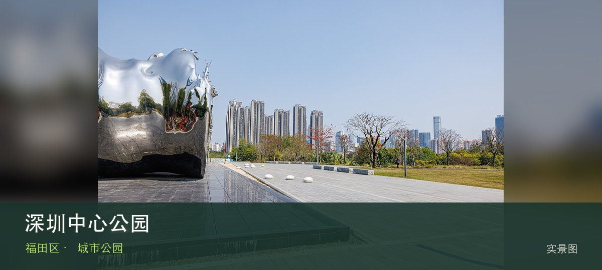
授权实景图深圳中心公园位于华富街道，由旧有城市绿化隔离带转化而来，狭长绿地把华强北、福田河与中心区社区连接成可分段进入的日常公园。游览重点是长条形城市绿廊与福田河连接节点如何组织城市公共生活，可按同行者体力随时缩短。先确认最想看的节点，再把树荫、休息点、活动占用和雨天退出位置纳入路线。
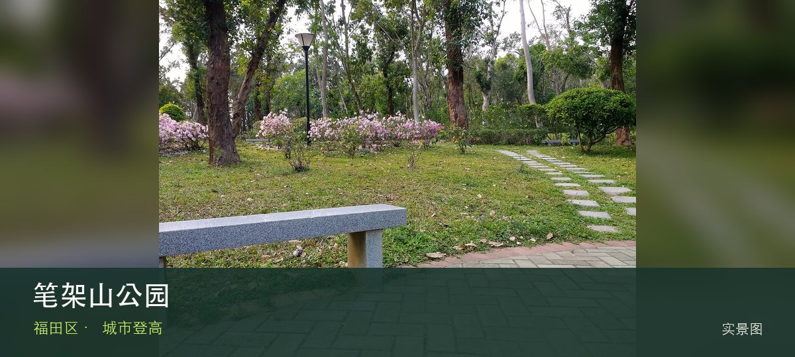
授权实景图笔架山公园位于华强北北侧，低海拔双峰、山脚草地与城市绿廊靠得很近，用较短爬升就能获得中心区楼群和公园水体的层次变化。现场不必追求一次走完，先在双峰短登高与山脚草地与湖面之间确定主线，再按体力、日照和天气保留折返方案。山地、滨水或林下路面会随降雨改变，当天预警和开放边界始终比旧轨迹更优先。
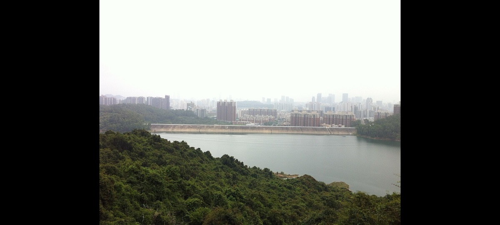
编辑配图·非现场实景梅林山公园位于梅林片区，彩梅入口与侨香入口对应不同社区界面，林下台阶和城市边缘山脊适合做两小时以内的往返而非盲目穿越。现场不必追求一次走完，先在彩梅入口林下步道与侨香侧山林界面之间确定主线，再按体力、日照和天气保留折返方案。山地、滨水或林下路面会随降雨改变，当天预警和开放边界始终比旧轨迹更优先。
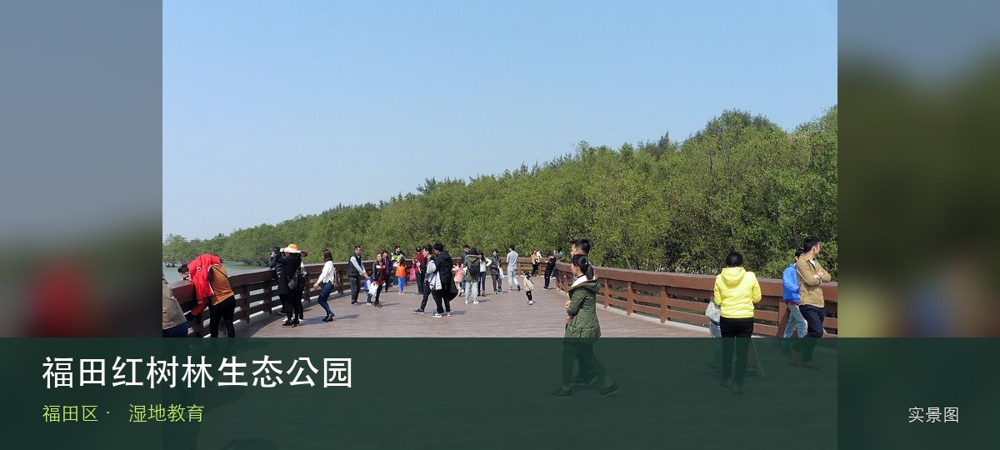
授权实景图福田红树林生态公园位于下沙深圳河口，红树林、潮滩与深圳河口共同构成城市中的滨海生态课堂，观鸟价值来自迁徙季的安静观察而不是近距离拍摄。观察重点是红树林潮间带与候鸟观察点之间的生境关系，而不是追逐动物或进入滩涂取景。保持距离、不投喂，并把水位、蚊虫、暴晒和雷雨作为当天是否停留的判断条件。
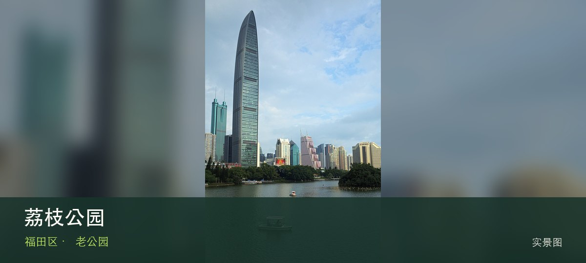
授权实景图荔枝公园位于红岭老城区，荔枝林、湖面与老城区公共生活贴得很近，邓小平画像广场周边的城市记忆使它比普通社区公园更具时代切片感。游览重点是荔枝林与老树荫与湖岸曲桥如何组织城市公共生活，可按同行者体力随时缩短。先确认最想看的节点，再把树荫、休息点、活动占用和雨天退出位置纳入路线。
福田河碧道位于笔架山至深圳河沿线，这条碧道把笔架山、中心公园与南部河口方向串成连续慢行轴，河道修复、桥下空间和城市密度会沿途切换。现场不必追求一次走完，先在笔架山起点段与中心公园连接段之间确定主线，再按体力、日照和天气保留折返方案。山地、滨水或林下路面会随降雨改变，当天预警和开放边界始终比旧轨迹更优先。
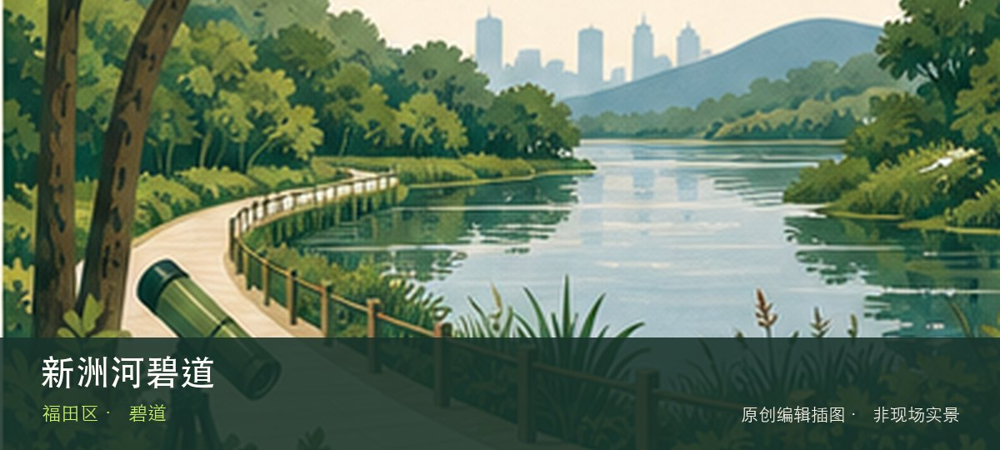
编辑配图·非现场实景新洲河碧道位于新洲社区，社区河道经过生态修复后形成亲水步道、桥下空间与连续绿带，观察重点是水岸如何嵌入高密度居住区。现场不必追求一次走完，先在亲水慢行段与生态护岸植物之间确定主线，再按体力、日照和天气保留折返方案。山地、滨水或林下路面会随降雨改变，当天预警和开放边界始终比旧轨迹更优先。
华强北步行街位于华强北，电子市场、商业楼宇与夜间街道共同展示深圳硬件产业的高密度流通网络，价值在观察业态而非只逛一座商场。游览重点是电子专业市场群与华强北商业街轴线如何组织城市公共生活，可按同行者体力随时缩短。先确认最想看的节点，再把树荫、休息点、活动占用和雨天退出位置纳入路线。
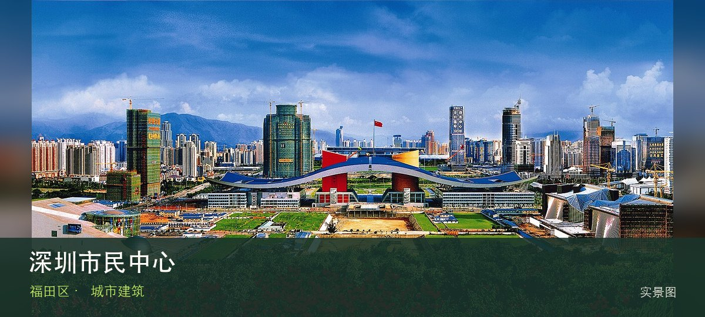
授权实景图深圳市民中心位于福中中心区，弧形屋顶、中央轴线和两侧公共文化建筑组成深圳行政中心的代表性城市空间，广场与莲花山形成清晰对景。游览重点是大鹏展翅形屋顶与市民广场中轴如何组织城市公共生活，可按同行者体力随时缩短。先确认最想看的节点，再把树荫、休息点、活动占用和雨天退出位置纳入路线。
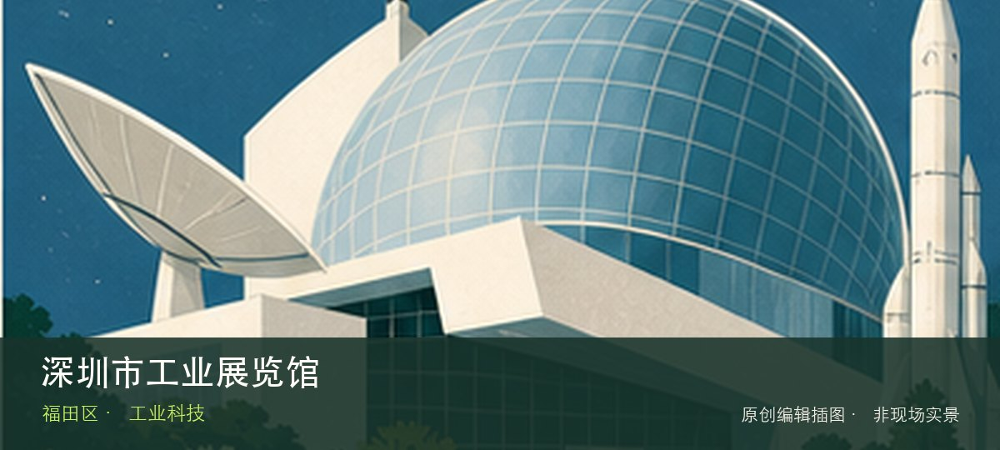
编辑配图·非现场实景深圳市工业展览馆位于市民中心，展陈以深圳制造业、战略性新兴产业与工业设计演进为主，适合把城市天际线背后的产业系统补进同一天行程。参观重点是通过深圳工业发展脉络与先进制造展项理解技术如何进入城市日常，而不是只收集装置照片。预约、活动场次和可参与项目会改变体验，出发前要同时核对开放日与入场条件。
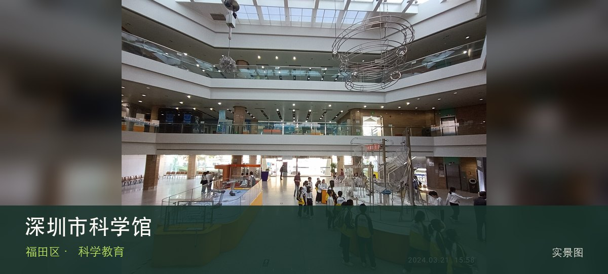
编辑配图·非现场实景深圳市科学馆位于上步中路，老牌科普场馆承载几代市民的科学教育记忆，展项规模和更新节奏不同于光明新馆，更适合结合当天活动选择性参观。参观重点是通过基础科学互动展项与老馆科普教育记忆理解技术如何进入城市日常，而不是只收集装置照片。预约、活动场次和可参与项目会改变体验，出发前要同时核对开放日与入场条件。
深圳燃气科学馆位于梅坳片区，围绕城市燃气来源、输配系统与用气安全展开，专业主题明确，体验依赖预约场次而不是普通景区式随到随看。参观重点是通过城市燃气输配流程与家庭用气安全互动理解技术如何进入城市日常，而不是只收集装置照片。预约、活动场次和可参与项目会改变体验，出发前要同时核对开放日与入场条件。
深圳博物馆古代艺术馆位于同心路，以中国古代艺术专题、馆藏器物与不定期特展为核心，建筑和展陈气质都区别于市民中心的历史民俗馆。理解这处场馆，重点不是把所有展柜看完，而是沿着古代艺术专题展和馆藏器物细节两条线索辨认其专题边界。常设展、开放楼层和时段可能调整，专程前往前仍应核对场馆当天公告。
 编辑配图·非现场实景
编辑配图·非现场实景
深圳博物馆历史民俗馆位于市民中心 A 区，以深圳地区历史、近现代城市发展和民俗生活为主线，是理解这座移民城市从地域社会走向现代都市的基础场馆。理解这处场馆，重点不是把所有展柜看完，而是沿着深圳古代历史线和近现代城市发展展两条线索辨认其专题边界。常设展、开放楼层和时段可能调整，专程前往前仍应核对场馆当天公告。
深圳市改革开放展览馆位于市民中心当代艺术与城市规划馆内，大型展陈以改革开放关键节点、城市建设档案与实物复原讲述深圳速度，适合与城市规划展览对照观看。理解这处场馆，重点不是把所有展柜看完，而是沿着改革开放时间轴和蛇口与特区建设档案两条线索辨认其专题边界。常设展、开放楼层和时段可能调整，专程前往前仍应核对场馆当天公告。
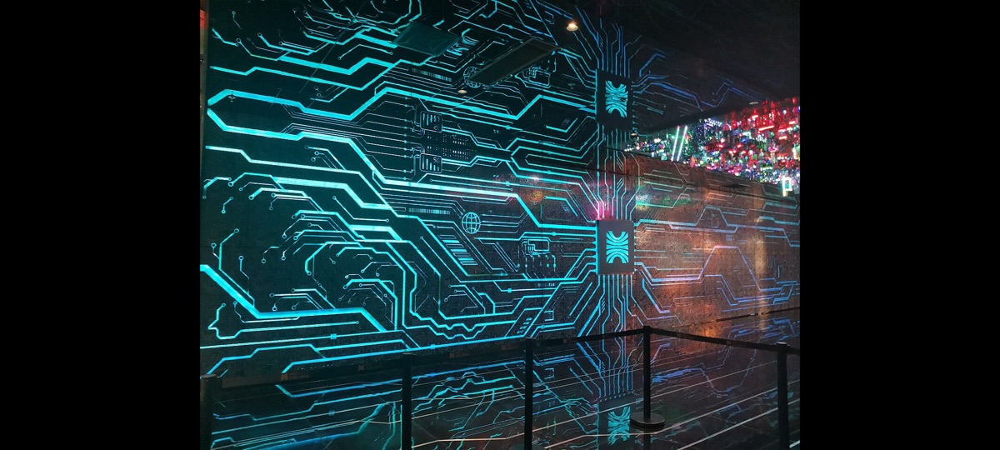
编辑配图·非现场实景深圳市福田区华强北博物馆位于广博现代之窗大厦，场馆把旧工业区转型、电子市场兴起和创业者群体放进华强北街区史中，是理解楼下商业生态的室内起点。理解这处场馆，重点不是把所有展柜看完，而是沿着上步工业区转型和电子市场发展史两条线索辨认其专题边界。常设展、开放楼层和时段可能调整，专程前往前仍应核对场馆当天公告。
深圳市福田区皇岗博物馆位于皇岗村，场馆主题连接皇岗村史、口岸边境与城中村变迁，即使闭馆改造期间也值得作为理解福田本地社区史的资料点。理解这处场馆，重点不是把所有展柜看完，而是沿着皇岗村落历史和口岸与边境记忆两条线索辨认其专题边界。常设展、开放楼层和时段可能调整，专程前往前仍应核对场馆当天公告。
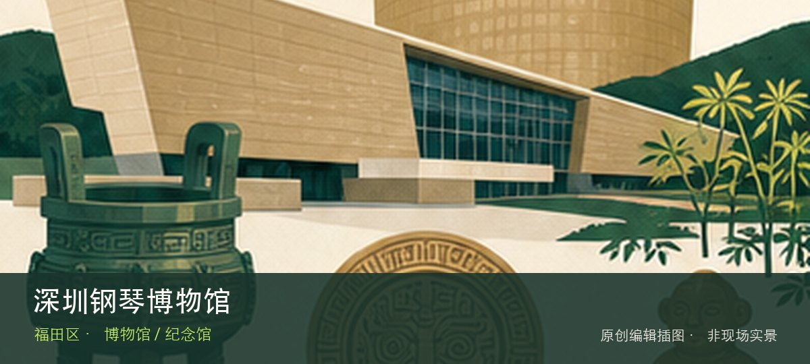
编辑配图·非现场实景深圳钢琴博物馆位于上步南路，以钢琴器物、制造结构和音乐文化为专题，价值在从乐器形制理解声音生产，而不是把馆名误当作固定演出场所。理解这处场馆，重点不是把所有展柜看完，而是沿着历史钢琴器物和机械结构与制琴工艺两条线索辨认其专题边界。常设展、开放楼层和时段可能调整，专程前往前仍应核对场馆当天公告。
深圳市福田区水围雅石艺术博物馆位于水围村，以观赏石的天然形态、石种与文人赏石传统为线索，所在城中村环境也提供民办专题馆与社区并置的观察角度。理解这处场馆，重点不是把所有展柜看完，而是沿着天然雅石形态和石种与产地线索两条线索辨认其专题边界。常设展、开放楼层和时段可能调整，专程前往前仍应核对场馆当天公告。
深圳市棋国象棋博物馆位于香蜜湖，专题围绕象棋器物、棋谱和竞技文化展开，能够从一项传统智力运动观察规则、传播与收藏，但目前闭馆改造。理解这处场馆，重点不是把所有展柜看完，而是沿着历代棋具形制和象棋谱与规则演变两条线索辨认其专题边界。常设展、开放楼层和时段可能调整，专程前往前仍应核对场馆当天公告。
深圳市大观茶具博物馆位于福保片区，以茶具材质、器形和饮茶礼俗为专题，适合把陶瓷、金属与地域生活方式放在同一套器物系统中比较。理解这处场馆，重点不是把所有展柜看完，而是沿着历代茶具器形和材质与制作工艺两条线索辨认其专题边界。常设展、开放楼层和时段可能调整，专程前往前仍应核对场馆当天公告。
深圳市卓建法律博物馆位于福中三路，以法律文献、司法器物与法治实践为专题，场馆位于专业机构环境，重点是理解制度如何通过文本和职业工具落地。理解这处场馆，重点不是把所有展柜看完，而是沿着法律文献版本和司法职业器物两条线索辨认其专题边界。常设展、开放楼层和时段可能调整，专程前往前仍应核对场馆当天公告。
深圳图画书博物馆位于景田妇儿大厦，围绕图画书原画、出版过程与儿童阅读展开，重点不只在读一本书，而在看文字、图像和装帧如何共同叙事。理解这处场馆，重点不是把所有展柜看完，而是沿着图画书原画和编辑与装帧过程两条线索辨认其专题边界。常设展、开放楼层和时段可能调整，专程前往前仍应核对场馆当天公告。
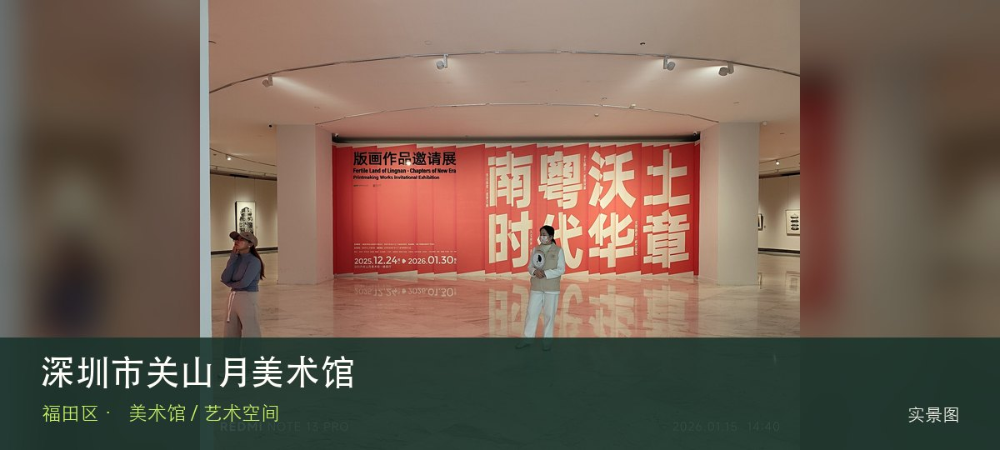
授权实景图深圳市关山月美术馆位于莲花山南侧，以关山月艺术研究、近现代中国美术与当代专题展为核心，位置适合与莲花山形成自然和艺术的一日短线。这里的价值随展期变化，应把关山月艺术研究与近现代美术展览放在同一次观看中，辨认作品、空间和所在街区的关系。先查当期展讯与入口，不把官方名录中的地址等同于随时可入场。
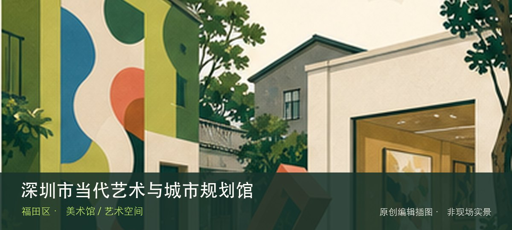
编辑配图·非现场实景深圳市当代艺术与城市规划馆位于市民中心，双馆建筑把当代艺术展览与城市规划叙事并置，大尺度中庭和连续展厅本身就是理解深圳公共文化雄心的一部分。这里的价值随展期变化，应把当代艺术主题展与城市规划展陈放在同一次观看中，辨认作品、空间和所在街区的关系。先查当期展讯与入口，不把官方名录中的地址等同于随时可入场。
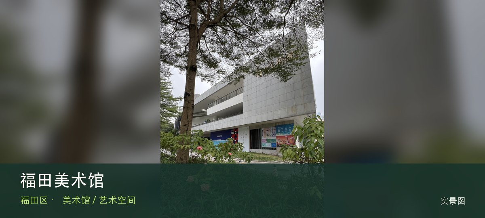
授权实景图福田美术馆位于梅林，区级美术馆更贴近本地创作、公共文化项目与阶段性主题展，适合观察福田中心区之外的社区艺术供给。这里的价值随展期变化，应把本地艺术主题展与公共教育活动放在同一次观看中，辨认作品、空间和所在街区的关系。先查当期展讯与入口，不把官方名录中的地址等同于随时可入场。
木星美术馆位于福田保税区，民营当代艺术空间位于产业园区语境，展览常围绕年轻艺术、跨媒介实践与收藏项目展开，门禁比市属馆更需确认。这里的价值随展期变化，应把当代艺术项目与跨媒介作品放在同一次观看中，辨认作品、空间和所在街区的关系。先查当期展讯与入口，不把官方名录中的地址等同于随时可入场。
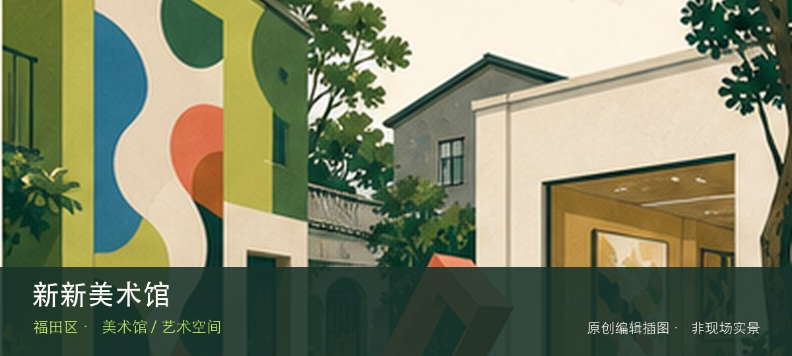
编辑配图·非现场实景新新美术馆位于彩田南路，城市楼宇中的民营美术馆以阶段性艺术展览和文化活动为主，小尺度空间更适合围绕一个主题细看而非期待大型馆藏。这里的价值随展期变化，应把阶段性主题展与城市楼宇展陈放在同一次观看中，辨认作品、空间和所在街区的关系。先查当期展讯与入口，不把官方名录中的地址等同于随时可入场。
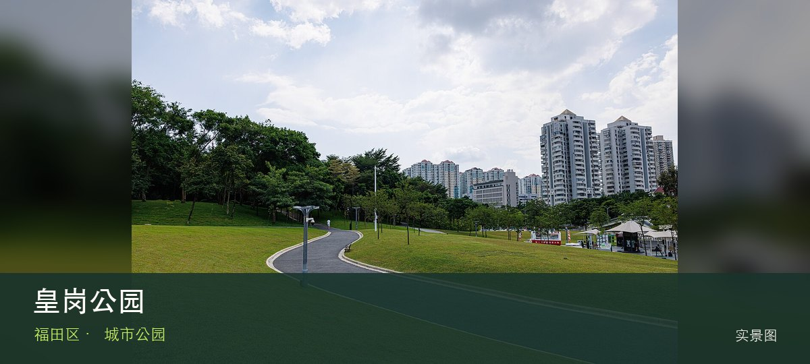
授权实景图皇岗公园位于益田路2002号，15公顷级社区城市公园，以山体、林荫和运动空间服务皇岗与益田片区。这处地点的内容并不靠规模取胜，山体林荫步道和社区运动空间才是最值得核对的现场证据。游览重点是山体林荫步道与社区运动空间如何组织城市公共生活，可按同行者体力随时缩短。先确认最想看的节点，再把树荫、休息点、活动占用和雨天退出位置纳入路线。
儿童乐园位于香蜜湖街道农林路71号，老牌儿童主题公园把游乐设施、树荫与家庭休息空间集中在农林片区。现场的空间线索集中在分龄游乐设施和林下亲子休息区，把两者连起来看，才不会只剩一个笼统印象。带孩子到访时，可把分龄游乐设施与林下亲子休息区转化为两项能够完成的观察任务，不必追求看完所有设施。活动、花期和设备开放受日期影响，先确认预约、遮阴、饮水与返程条件。
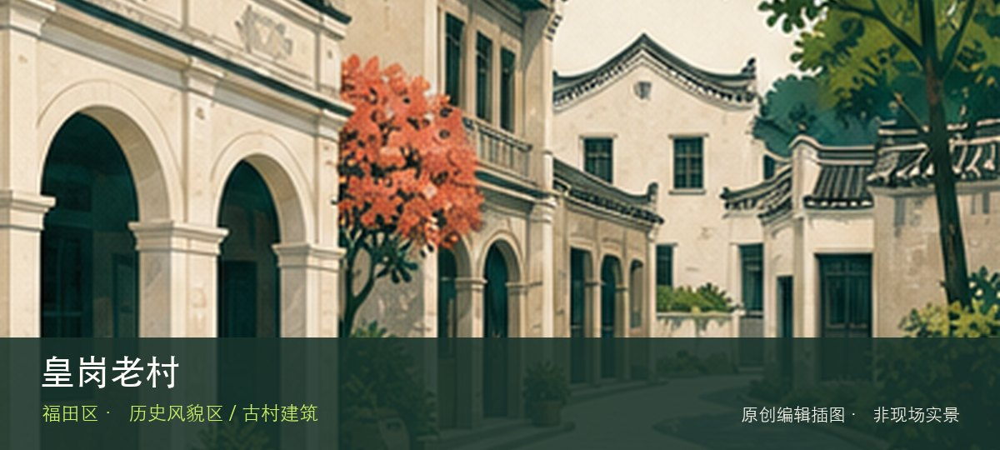
编辑配图·非现场实景皇岗老村位于福田区皇岗社区，深圳首批历史风貌区之一，适合从祠堂、旧巷和城中村更新并置关系理解中心区原生聚落。先辨认皇岗村旧巷，再观察宗祠与社区生活，两者共同说明这里为何不能被同类地点的泛化标签替代。阅读这处地点要把皇岗村旧巷与宗祠与社区生活放回仍在使用的街巷或社区中，不把历史空间当成布景。先看公开区域，再按居民生活、礼仪和开放边界调整停留，不进入封闭建筑。
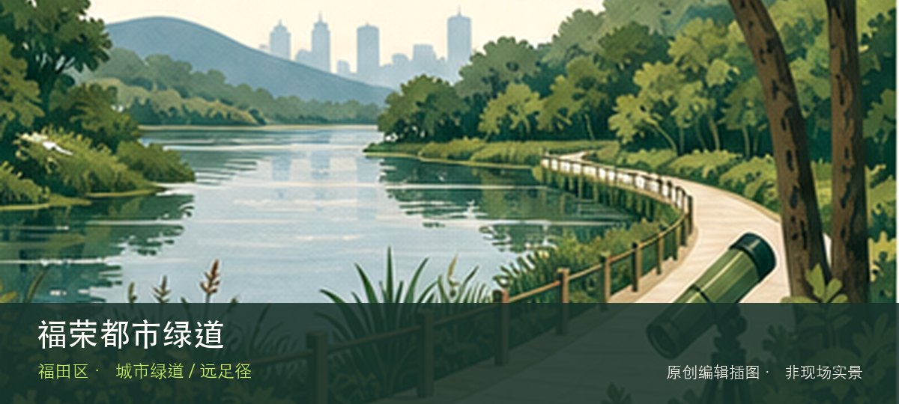
编辑配图·非现场实景福荣都市绿道位于新洲路至红树林的福荣路南侧，约3.08公里的都市健身走廊串联七个社区，开放时间通常为07:00—22:00。若只匆匆经过容易错过重点，社区体育设施带与红树林方向慢行接口恰好构成最有辨识度的观察顺序。现场不必追求一次走完，先在社区体育设施带与红树林方向慢行接口之间确定主线，再按体力、日照和天气保留折返方案。山地、滨水或林下路面会随降雨改变，当天预警和开放边界始终比旧轨迹更优先。
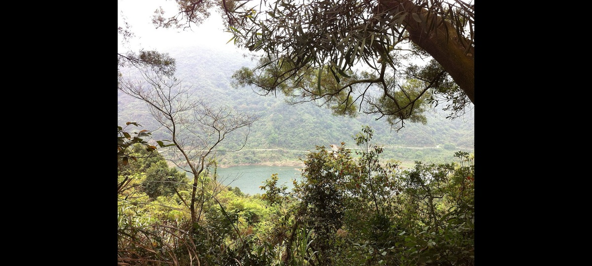
编辑配图·非现场实景梅林绿道位于梅林坳至二线关山体边界，约23公里的省立绿道二号线组成部分，城市边缘山林与旧边防道路共同构成长距离路线。把注意力放在二线关山林道路和梅林坳长线入口，能避免只凭名称或网红照片判断这里。现场不必追求一次走完，先在二线关山林道路与梅林坳长线入口之间确定主线，再按体力、日照和天气保留折返方案。山地、滨水或林下路面会随降雨改变，当天预警和开放边界始终比旧轨迹更优先。
 授权实景图
授权实景图
梧桐山风景名胜区位于莲塘与大望之间，深圳最高峰大梧桐与多套官方登山入口构成大尺度山地，路线差异远大于一个景点定位所能表达。先辨认大梧桐海拔 943.7 米主峰，再观察泰山涧与好汉坡等不同路线，两者共同说明这里为何不能被同类地点的泛化标签替代。现场不必追求一次走完，先在大梧桐海拔 943.7 米主峰与泰山涧与好汉坡等不同路线之间确定主线，再按体力、日照和天气保留折返方案。山地、滨水或林下路面会随降雨改变，当天预警和开放边界始终比旧轨迹更优先。
![仙湖植物园实景：仙人掌-翠雲 Melocactus violaceus [深圳仙湖植物園 Fairy Lake Botanical Garden, China]](../assets/places/038.jpg) 授权实景图
授权实景图
仙湖植物园位于莲塘仙湖路，以仙湖为中心串联植物专类园、园林建筑与山地步道，园区尺度很大，适合按植物主题而不是按地图全收集。这里不是只有一个打卡点：仙湖与湖畔园林提供主要线索，苏铁园等植物专类园补足另一层现场关系。带孩子到访时，可把仙湖与湖畔园林与苏铁园等植物专类园转化为两项能够完成的观察任务，不必追求看完所有设施。活动、花期和设备开放受日期影响，先确认预约、遮阴、饮水与返程条件。
 授权实景图
授权实景图
东湖公园位于爱国路与深圳水库西侧，老牌综合公园把水库主坝、古树、湖岸和通往梧桐山方向的城市边缘绿地叠在一起。若只匆匆经过容易错过重点，深圳水库主坝视野与老树湖岸恰好构成最有辨识度的观察顺序。游览重点是深圳水库主坝视野与老树湖岸如何组织城市公共生活，可按同行者体力随时缩短。先确认最想看的节点，再把树荫、休息点、活动占用和雨天退出位置纳入路线。
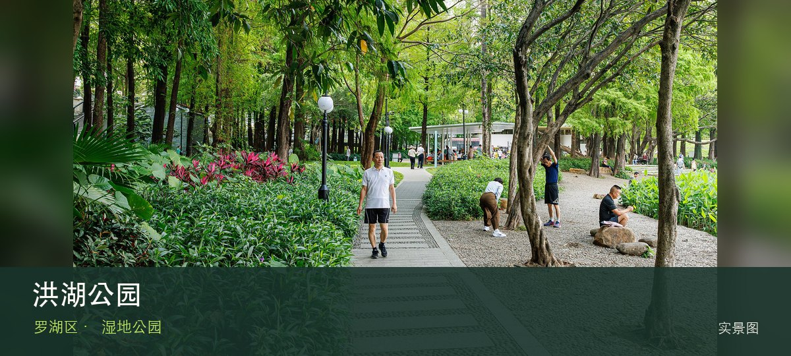
授权实景图洪湖公园位于文锦北路洪湖片区，大片荷塘、落羽杉水岸和冬季候鸟让同一公园随月份转换主题，季节判断比固定打卡点更重要。现场的空间线索集中在夏季荷花群落和落羽杉水岸，把两者连起来看，才不会只剩一个笼统印象。观察重点是夏季荷花群落与落羽杉水岸之间的生境关系，而不是追逐动物或进入滩涂取景。保持距离、不投喂，并把水位、蚊虫、暴晒和雷雨作为当天是否停留的判断条件。
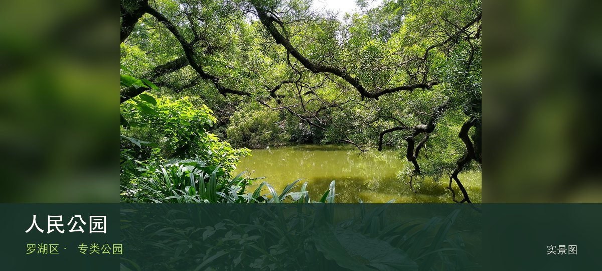
授权实景图人民公园位于东门北老城区，深圳较早的城市公园之一以月季专类园和老城居民日常活动见长，花期与社区气息同时构成体验。与同类地点相比，最值得停下来的差异落在月季专类园和老城林荫与湖池这两个具体节点上。游览重点是月季专类园与老城林荫与湖池如何组织城市公共生活，可按同行者体力随时缩短。先确认最想看的节点，再把树荫、休息点、活动占用和雨天退出位置纳入路线。
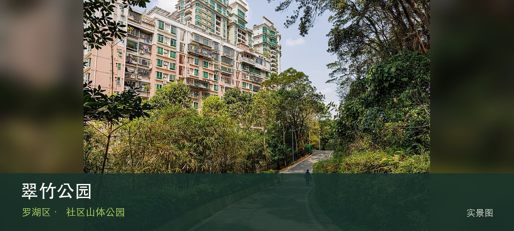
授权实景图翠竹公园位于翠竹社区，小山体嵌在成熟社区中，林荫台阶、山顶平台和多处社区入口使它更像日常短登高而非远足目的地。这里不是只有一个打卡点：社区山体林荫提供主要线索，短程登高台阶补足另一层现场关系。现场不必追求一次走完，先在社区山体林荫与短程登高台阶之间确定主线，再按体力、日照和天气保留折返方案。山地、滨水或林下路面会随降雨改变，当天预警和开放边界始终比旧轨迹更优先。
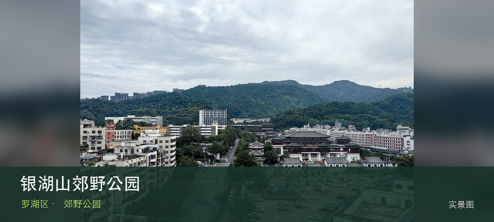
授权实景图银湖山郊野公园位于银湖跨区山体，山体跨越多个行政区，入口与出口距离远，真正的难点是路线边界和返程组织而不是单纯爬升。把注意力放在银湖侧官方入口和连续山脊林地，能避免只凭名称或网红照片判断这里。现场不必追求一次走完，先在银湖侧官方入口与连续山脊林地之间确定主线，再按体力、日照和天气保留折返方案。山地、滨水或林下路面会随降雨改变，当天预警和开放边界始终比旧轨迹更优先。
罗湖体育休闲公园位于东湖与水库片区，球场、跑道和开放活动空间靠近水库山景，主要价值是运动设施与城市自然界面的紧密组合。把注意力放在综合运动场地和环园慢跑空间，能避免只凭名称或网红照片判断这里。游览重点是综合运动场地与环园慢跑空间如何组织城市公共生活，可按同行者体力随时缩短。先确认最想看的节点，再把树荫、休息点、活动占用和雨天退出位置纳入路线。
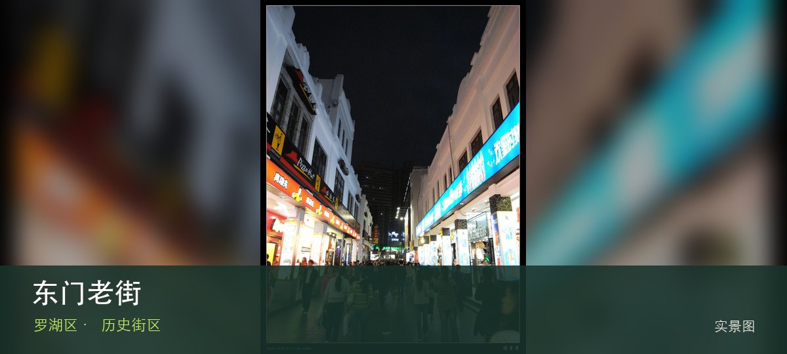
授权实景图东门老街位于深圳老街片区，今日商业步行街覆盖了深圳墟的历史地层，街巷尺度、老字号与密集商业共同呈现城市从墟市成长的线索。与同类地点相比，最值得停下来的差异落在深圳墟历史线索和老街骑楼与巷道这两个具体节点上。阅读这处地点要把深圳墟历史线索与老街骑楼与巷道放回仍在使用的街巷或社区中，不把历史空间当成布景。先看公开区域，再按居民生活、礼仪和开放边界调整停留，不进入封闭建筑。
渔民村位于罗湖口岸附近，小社区以渔民上岸、率先致富和居住形态更新成为改革开放叙事样本，尺度不大但时代指向清楚。把注意力放在渔民上岸社区史和改革开放生活变迁，能避免只凭名称或网红照片判断这里。阅读这处地点要把渔民上岸社区史与改革开放生活变迁放回仍在使用的街巷或社区中，不把历史空间当成布景。先看公开区域，再按居民生活、礼仪和开放边界调整停留，不进入封闭建筑。
清水河铁路景观位于清水河仓储片区，支线铁路、旧仓储和物流道路保留工业城市纹理，观看重点是基础设施遗存而不是进入仍在使用的作业空间。从铁路支线遗存转向仓储工业建筑时，地点的空间、历史或使用方式才会变得清楚。阅读这处地点要把铁路支线遗存与仓储工业建筑放回仍在使用的街巷或社区中，不把历史空间当成布景。先看公开区域，再按居民生活、礼仪和开放边界调整停留，不进入封闭建筑。
梧桐山艺术小镇位于梧桐山村，艺术家工作室、村屋和山脚社区分散交织，展览并非每天固定开放，漫游价值取决于当期活动与公共空间。这处地点的内容并不靠规模取胜，村落中的艺术工作室和山脚壁画与公共艺术才是最值得核对的现场证据。这里的价值随展期变化，应把村落中的艺术工作室与山脚壁画与公共艺术放在同一次观看中，辨认作品、空间和所在街区的关系。先查当期展讯与入口，不把官方名录中的地址等同于随时可入场。
深圳古生物博物馆位于仙湖植物园内，以古生物化石、生命演化与地质年代为专题，原本可补足植物园的深时尺度，但当前闭馆改造仅学校团体可预约。现场的空间线索集中在古生物化石标本和生命演化时间线，把两者连起来看，才不会只剩一个笼统印象。理解这处场馆，重点不是把所有展柜看完，而是沿着古生物化石标本和生命演化时间线两条线索辨认其专题边界。常设展、开放楼层和时段可能调整，专程前往前仍应核对场馆当天公告。
深圳市罗湖区惠风古陶博物馆位于深圳古玩城，以古陶器形、胎釉和生活用途为核心，适合从朴素日用器观察工艺与时代，而不是只关注完整华丽器物。把注意力放在古陶器形谱系和胎土与烧造痕迹，能避免只凭名称或网红照片判断这里。理解这处场馆，重点不是把所有展柜看完，而是沿着古陶器形谱系和胎土与烧造痕迹两条线索辨认其专题边界。常设展、开放楼层和时段可能调整，专程前往前仍应核对场馆当天公告。
深圳玺宝楼青瓷博物馆位于宝安南路，专题聚焦青瓷釉色、窑口与器形变化，适合把颜色之外的胎质、开片和烧造技术纳入观看。现场的空间线索集中在青瓷釉色层次和窑口与年代线索，把两者连起来看，才不会只剩一个笼统印象。理解这处场馆，重点不是把所有展柜看完，而是沿着青瓷釉色层次和窑口与年代线索两条线索辨认其专题边界。常设展、开放楼层和时段可能调整，专程前往前仍应核对场馆当天公告。
深圳市金石艺术博物馆位于梧桐山片区，围绕碑刻、印章和金石文字展开，将书法从纸面延伸到石材与篆刻工具，材料和拓印方法是主要看点。与同类地点相比，最值得停下来的差异落在碑刻与拓片和篆刻印章这两个具体节点上。理解这处场馆，重点不是把所有展柜看完，而是沿着碑刻与拓片和篆刻印章两条线索辨认其专题边界。常设展、开放楼层和时段可能调整，专程前往前仍应核对场馆当天公告。
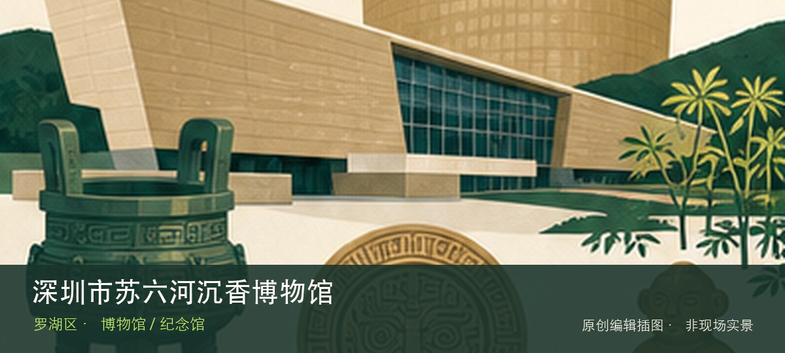
编辑配图·非现场实景深圳市苏六河沉香博物馆位于黄贝岭，以沉香材料、结香过程和香文化器具为主题，观看重点是天然材料形成与文化使用，不宜只以价格判断。先辨认沉香结香机理，再观察香材标本差异，两者共同说明这里为何不能被同类地点的泛化标签替代。理解这处场馆，重点不是把所有展柜看完，而是沿着沉香结香机理和香材标本差异两条线索辨认其专题边界。常设展、开放楼层和时段可能调整，专程前往前仍应核对场馆当天公告。
 编辑配图·非现场实景
编辑配图·非现场实景
深圳应急管理博物馆位于笋岗，以城市灾害、生产安全和应急响应为线索，通过案例与互动展项建立风险判断，午间闭馆不等于暂停开放。从城市灾害案例转向应急响应流程时，地点的空间、历史或使用方式才会变得清楚。参观重点是通过城市灾害案例与应急响应流程理解技术如何进入城市日常，而不是只收集装置照片。预约、活动场次和可参与项目会改变体验，出发前要同时核对开放日与入场条件。
深圳珠宝博物馆位于水贝珠宝产业区，从宝石材料、首饰工艺到水贝产业链展示珠宝如何进入设计与交易，场馆与周边产业集群互为注解。这里不是只有一个打卡点：宝石材料与鉴别提供主要线索，首饰设计制作补足另一层现场关系。理解这处场馆，重点不是把所有展柜看完，而是沿着宝石材料与鉴别和首饰设计制作两条线索辨认其专题边界。常设展、开放楼层和时段可能调整，专程前往前仍应核对场馆当天公告。
深圳美术馆（东湖馆）位于东湖公园，老馆建筑、东湖环境与阶段性美术展共同构成深圳公共美术记忆，尺度比红山新馆更亲近公园。先辨认东湖老馆建筑，再观察深圳美术发展展览，两者共同说明这里为何不能被同类地点的泛化标签替代。这里的价值随展期变化，应把东湖老馆建筑与深圳美术发展展览放在同一次观看中，辨认作品、空间和所在街区的关系。先查当期展讯与入口，不把官方名录中的地址等同于随时可入场。
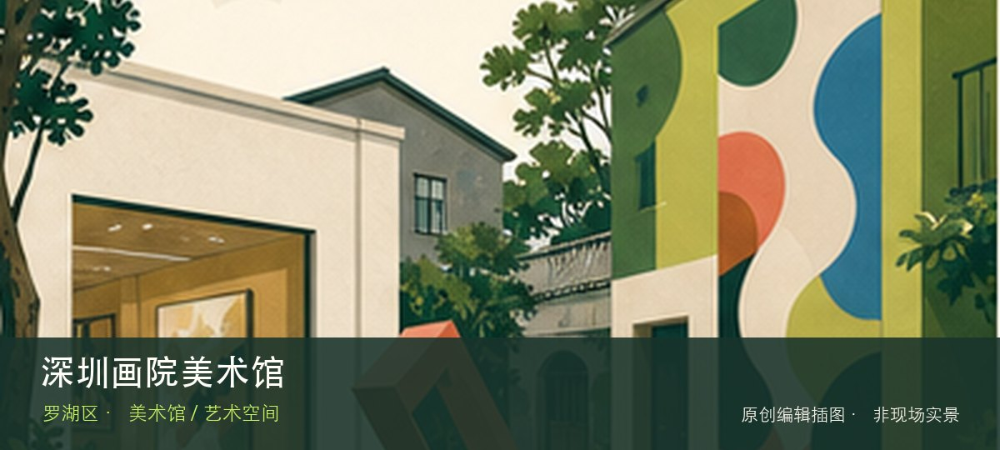
编辑配图·非现场实景深圳画院美术馆位于银湖，依托专业画院的创作、研究和交流展览，常能看到国画、油画及深圳本地艺术家的阶段成果。与同类地点相比，最值得停下来的差异落在画院艺术家研究展和中国画与油画创作这两个具体节点上。这里的价值随展期变化，应把画院艺术家研究展与中国画与油画创作放在同一次观看中，辨认作品、空间和所在街区的关系。先查当期展讯与入口，不把官方名录中的地址等同于随时可入场。
罗湖美术馆位于南极路，区级公共美术馆面向当代艺术、本地创作和公共教育，适合与东门老街形成新旧城市文化对照。先辨认罗湖本地艺术展，再观察当代主题项目，两者共同说明这里为何不能被同类地点的泛化标签替代。这里的价值随展期变化，应把罗湖本地艺术展与当代主题项目放在同一次观看中，辨认作品、空间和所在街区的关系。先查当期展讯与入口，不把官方名录中的地址等同于随时可入场。
仙桐体育公园位于莲塘片区罗沙路2078号，山体公园把球类设施、登山道和梧桐山南麓视野组合在一起，适合运动后短线登高。这处地点的内容并不靠规模取胜，山体运动场地和梧桐山南麓步道才是最值得核对的现场证据。现场不必追求一次走完，先在山体运动场地与梧桐山南麓步道之间确定主线，再按体力、日照和天气保留折返方案。山地、滨水或林下路面会随降雨改变，当天预警和开放边界始终比旧轨迹更优先。
红岗公园位于清水河三路，红岗山体与清水河工业片区相邻，是观察铁路、仓储城区与城市绿地关系的低强度入口。这里不是只有一个打卡点：红岗山林步道提供主要线索，清水河城市视角补足另一层现场关系。现场不必追求一次走完，先在红岗山林步道与清水河城市视角之间确定主线，再按体力、日照和天气保留折返方案。山地、滨水或林下路面会随降雨改变，当天预警和开放边界始终比旧轨迹更优先。
围岭公园位于金稻田路1603号，近87公顷的山体绿地为布心与草埔片区提供连续林下步行空间，路线应按开放入口短往返。这里不是只有一个打卡点：围岭山体林带提供主要线索，社区登山入口补足另一层现场关系。现场不必追求一次走完，先在围岭山体林带与社区登山入口之间确定主线，再按体力、日照和天气保留折返方案。山地、滨水或林下路面会随降雨改变，当天预警和开放边界始终比旧轨迹更优先。
湖贝南坊位于东门街道湖贝旧村，首批历史风貌区保留老深圳墟周边村落尺度，旧巷、传统建筑与高密度商业城区形成强烈对照。与同类地点相比，最值得停下来的差异落在湖贝旧村街巷和传统建筑肌理这两个具体节点上。阅读这处地点要把湖贝旧村街巷与传统建筑肌理放回仍在使用的街巷或社区中，不把历史空间当成布景。先看公开区域，再按居民生活、礼仪和开放边界调整停留，不进入封闭建筑。
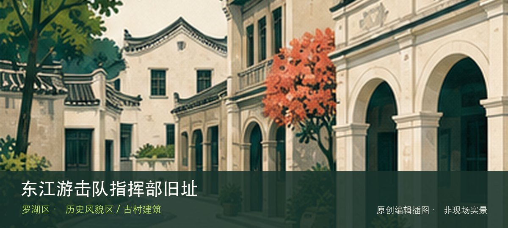
编辑配图·非现场实景东江游击队指挥部旧址位于东门街道南庆街13号，旧址位于深圳墟历史核心区，可把抗战史展陈与东门片区的城市演变放在同一路线阅读。先辨认指挥部旧址建筑，再观察深圳墟历史展陈，两者共同说明这里为何不能被同类地点的泛化标签替代。阅读这处地点要把指挥部旧址建筑与深圳墟历史展陈放回仍在使用的街巷或社区中，不把历史空间当成布景。先看公开区域，再按居民生活、礼仪和开放边界调整停留，不进入封闭建筑。
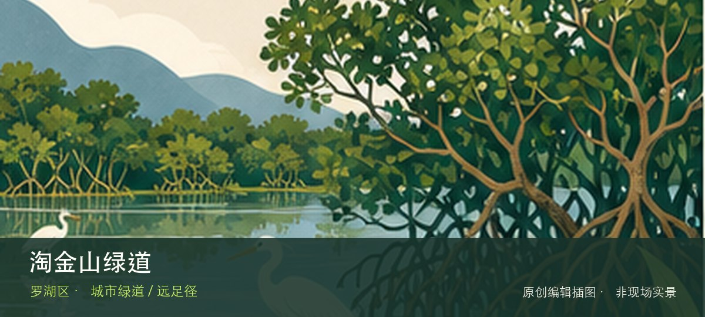
编辑配图·非现场实景淘金山绿道位于东湖公园南侧至沙湾路，主线与布心山登山道合计约7.07公里，以山林、旧边防道路和观景驿站形成郊野慢行线。与同类地点相比，最值得停下来的差异落在风铃溪谷和湖山在望观景节点这两个具体节点上。现场不必追求一次走完，先在风铃溪谷与湖山在望观景节点之间确定主线，再按体力、日照和天气保留折返方案。山地、滨水或林下路面会随降雨改变，当天预警和开放边界始终比旧轨迹更优先。
梧桐绿道位于东湖公园南门至横沥口水库，约15公里山水绿道沿深圳水库与梧桐山河展开，通常开放时间为06:00—23:00。现场的空间线索集中在深圳水库岸线和梧桐山河驿站，把两者连起来看，才不会只剩一个笼统印象。现场不必追求一次走完，先在深圳水库岸线与梧桐山河驿站之间确定主线，再按体力、日照和天气保留折返方案。山地、滨水或林下路面会随降雨改变，当天预警和开放边界始终比旧轨迹更优先。
 授权实景图
授权实景图
深圳湾公园位于后海至蛇口约十三公里海岸，十四个主题园与连续滨海慢行道跨越很长岸线，观鸟、骑行和看城市天际线应按分段选择而非一次走完。若只匆匆经过容易错过重点，福田红树林邻近观鸟段与深圳湾大桥与潮滩视野恰好构成最有辨识度的观察顺序。海岸体验取决于福田红树林邻近观鸟段与深圳湾大桥与潮滩视野当天的风浪、潮位和运营边界，不宜把旧照片当成实时承诺。先确定安全退路和返程节点，遇雷雨、台风影响或封闭提示就缩短行程。
 授权实景图
授权实景图
深圳人才公园位于后海深圳湾畔，桥梁、人才主题公共艺术、湖面和高密度总部区夜景构成鲜明城市舞台，与长线深圳湾公园的自然观察侧重不同。与同类地点相比，最值得停下来的差异落在人才星光桥和人才主题公共艺术这两个具体节点上。游览重点是人才星光桥与人才主题公共艺术如何组织城市公共生活，可按同行者体力随时缩短。先确认最想看的节点，再把树荫、休息点、活动占用和雨天退出位置纳入路线。
 授权实景图
授权实景图
前海石公园位于前海前湾二路，前海石、开阔草坪和雨水花园共同记录新区建设，景观重点是人工海岸、生态排水与城市开发之间的关系。先辨认前海石城市记忆，再观察雨水花园，两者共同说明这里为何不能被同类地点的泛化标签替代。游览重点是前海石城市记忆与雨水花园如何组织城市公共生活，可按同行者体力随时缩短。先确认最想看的节点，再把树荫、休息点、活动占用和雨天退出位置纳入路线。
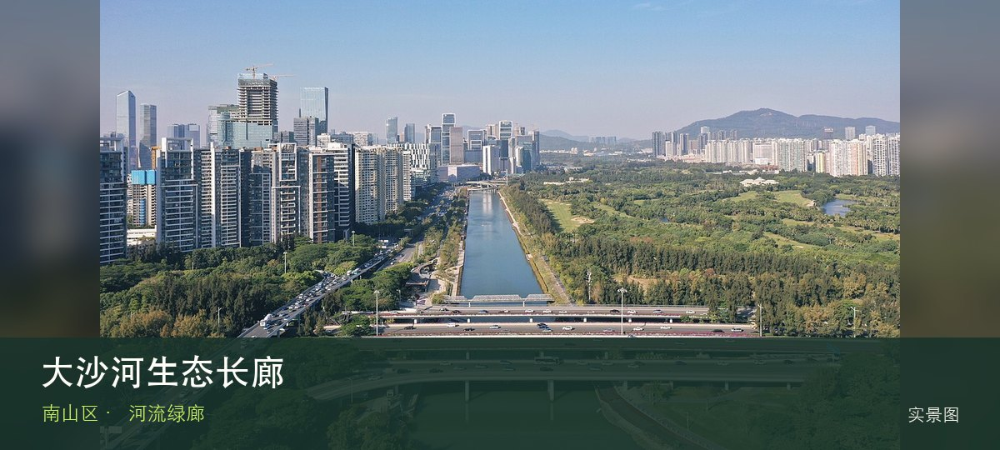
授权实景图大沙河生态长廊位于西丽至深圳湾沿河，河流从大学城、高科技园穿过密集城区抵达海湾，不同区段呈现生态修复、桥梁和社区使用的变化。与同类地点相比，最值得停下来的差异落在西丽湖下游生态段和高科技园桥梁节点这两个具体节点上。现场不必追求一次走完，先在西丽湖下游生态段与高科技园桥梁节点之间确定主线，再按体力、日照和天气保留折返方案。山地、滨水或林下路面会随降雨改变，当天预警和开放边界始终比旧轨迹更优先。
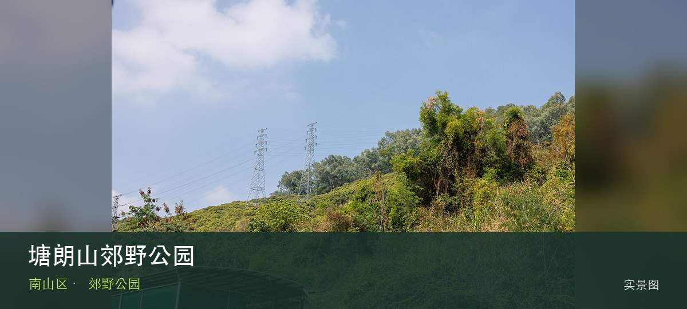
授权实景图塘朗山郊野公园位于桃源龙珠片区，最高点塘朗顶与盘山道路、山林支路组成靠近城区的郊野系统，短距离也有持续爬升和湿滑风险。现场的空间线索集中在塘朗顶城市远眺和盘山步道，把两者连起来看，才不会只剩一个笼统印象。现场不必追求一次走完，先在塘朗顶城市远眺与盘山步道之间确定主线，再按体力、日照和天气保留折返方案。山地、滨水或林下路面会随降雨改变，当天预警和开放边界始终比旧轨迹更优先。
南山公园位于蛇口半岛，密集台阶把蛇口港、前海和深圳湾视野逐层展开，城市山体不高但上下坡累计对膝盖并不轻松。现场的空间线索集中在蛇口港俯瞰和前海方向城市视野，把两者连起来看，才不会只剩一个笼统印象。现场不必追求一次走完，先在蛇口港俯瞰与前海方向城市视野之间确定主线，再按体力、日照和天气保留折返方案。山地、滨水或林下路面会随降雨改变，当天预警和开放边界始终比旧轨迹更优先。
小南山公园位于赤湾港区北侧，较小众的山体从赤湾社区抬升，可观察港口、珠江口和大南山关系，坡度与工业交通界面需要留意。先辨认赤湾港口视野，再观察珠江口方向远眺，两者共同说明这里为何不能被同类地点的泛化标签替代。现场不必追求一次走完，先在赤湾港口视野与珠江口方向远眺之间确定主线，再按体力、日照和天气保留折返方案。山地、滨水或林下路面会随降雨改变，当天预警和开放边界始终比旧轨迹更优先。
荔林公园位于南头大沙河入海口，滨河草地、桥下空间和入海口水岸形成低强度慢行点，更适合观察河海交汇与附近社区而非追求大型设施。与同类地点相比，最值得停下来的差异落在大沙河入海口和滨河草地这两个具体节点上。游览重点是大沙河入海口与滨河草地如何组织城市公共生活，可按同行者体力随时缩短。先确认最想看的节点，再把树荫、休息点、活动占用和雨天退出位置纳入路线。
 授权实景图
授权实景图
中山公园位于南头古城北侧，古城墙遗迹、孙中山纪念元素和成熟老树叠在一座老公园中，是连接南头古城历史与居民日常的缓冲地带。这处地点的内容并不靠规模取胜，南头古城墙遗迹和孙中山纪念景观才是最值得核对的现场证据。阅读这处地点要把南头古城墙遗迹与孙中山纪念景观放回仍在使用的街巷或社区中，不把历史空间当成布景。先看公开区域，再按居民生活、礼仪和开放边界调整停留，不进入封闭建筑。
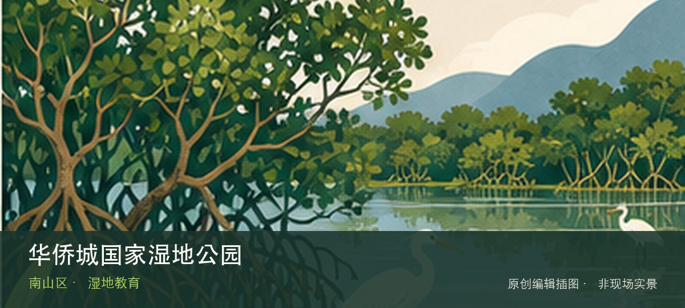
编辑配图·非现场实景华侨城国家湿地公园位于华侨城，预约制管理保护城市中心少见的滨海湿地生境，核心体验是导览中的鸟类、红树林和水位观察而非自由穿行。这处地点的内容并不靠规模取胜，预约导览路线和红树林与水鸟生境才是最值得核对的现场证据。观察重点是预约导览路线与红树林与水鸟生境之间的生境关系，而不是追逐动物或进入滩涂取景。保持距离、不投喂，并把水位、蚊虫、暴晒和雷雨作为当天是否停留的判断条件。
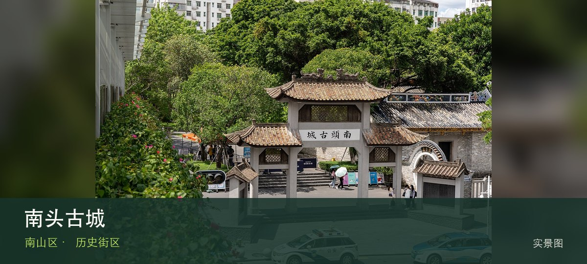
授权实景图南头古城位于南头街道，城门、街巷、祠堂、展馆与改造后的创意商业共同存在，真正的看点是古城格局如何继续容纳当代社区。从南城门与古城轴线转向传统街巷和祠堂时，地点的空间、历史或使用方式才会变得清楚。阅读这处地点要把南城门与古城轴线与传统街巷和祠堂放回仍在使用的街巷或社区中，不把历史空间当成布景。先看公开区域，再按居民生活、礼仪和开放边界调整停留，不进入封闭建筑。
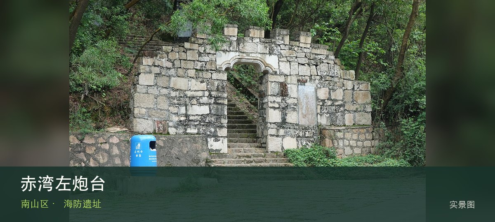
授权实景图赤湾左炮台位于赤湾鹰嘴山，小型清代海防遗址借山势面向珠江口，炮台、城垣残迹与港口视野能补足蛇口海洋史的军事一面。把注意力放在清代炮台遗迹和珠江口海防视野，能避免只凭名称或网红照片判断这里。阅读这处地点要把清代炮台遗迹与珠江口海防视野放回仍在使用的街巷或社区中，不把历史空间当成布景。先看公开区域，再按居民生活、礼仪和开放边界调整停留，不进入封闭建筑。
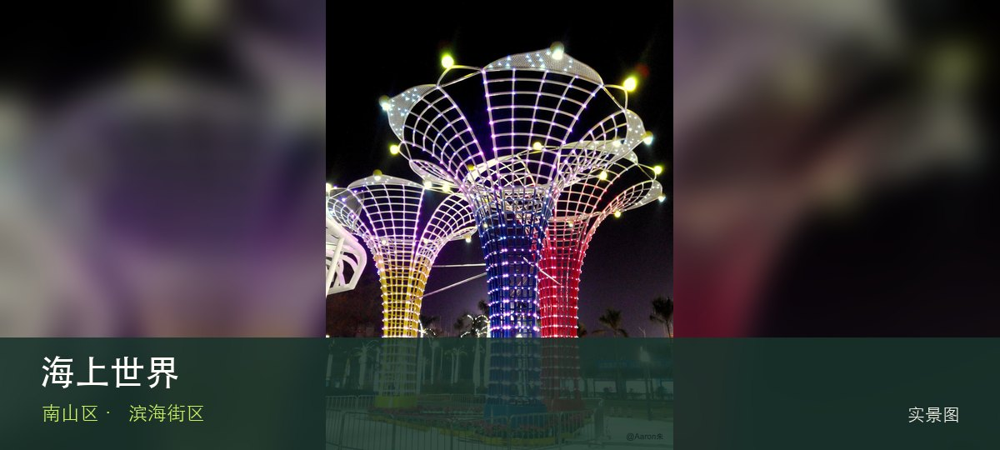
授权实景图海上世界位于蛇口，明华轮、滨海广场、公共艺术和餐饮街区展示蛇口港区更新，夜间氛围浓但历史线索容易被商业景观遮住。若只匆匆经过容易错过重点，明华轮地标与滨海公共艺术恰好构成最有辨识度的观察顺序。游览重点是明华轮地标与滨海公共艺术如何组织城市公共生活，可按同行者体力随时缩短。先确认最想看的节点，再把树荫、休息点、活动占用和雨天退出位置纳入路线。
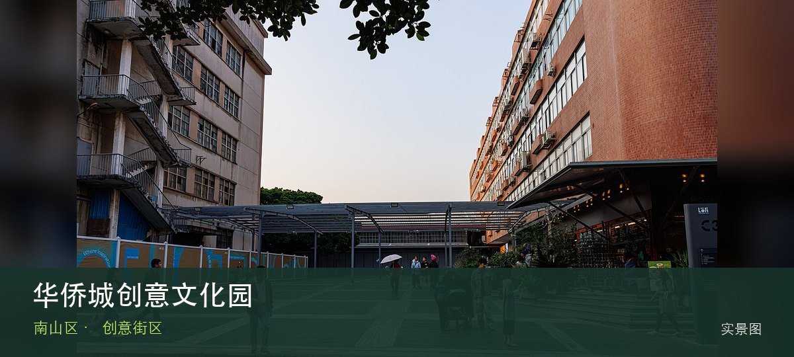
授权实景图华侨城创意文化园位于华侨城旧工业区，旧厂房改造出的设计机构、画廊、书店和活动空间分散在南北区，体验随展览与店铺更替而变化。先辨认旧厂房更新建筑，再观察OCAT 等展览空间，两者共同说明这里为何不能被同类地点的泛化标签替代。这里的价值随展期变化，应把旧厂房更新建筑与OCAT 等展览空间放在同一次观看中，辨认作品、空间和所在街区的关系。先查当期展讯与入口，不把官方名录中的地址等同于随时可入场。
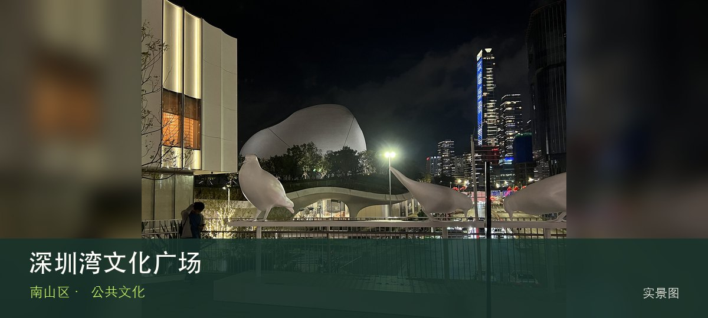
授权实景图深圳湾文化广场位于后海文化地标群，新公共文化建筑、开放广场与深圳湾天际线形成大型城市客厅，实际可进入场馆与展览依开放进度变化。先辨认大型公共文化建筑群，再观察下沉与开放广场，两者共同说明这里为何不能被同类地点的泛化标签替代。游览重点是大型公共文化建筑群与下沉与开放广场如何组织城市公共生活，可按同行者体力随时缩短。先确认最想看的节点，再把树荫、休息点、活动占用和雨天退出位置纳入路线。
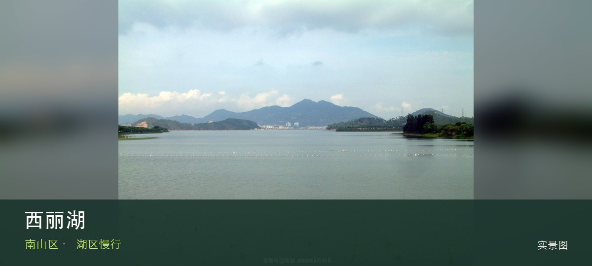
授权实景图西丽湖位于西丽大学城与山地交界，湖区、校园和麒麟山等山体构成较安静的城郊景观，但公开道路、校园门禁和水库管理边界必须区分。这里不是只有一个打卡点：西丽湖水岸视野提供主要线索，大学城校园界面补足另一层现场关系。现场不必追求一次走完，先在西丽湖水岸视野与大学城校园界面之间确定主线，再按体力、日照和天气保留折返方案。山地、滨水或林下路面会随降雨改变，当天预警和开放边界始终比旧轨迹更优先。
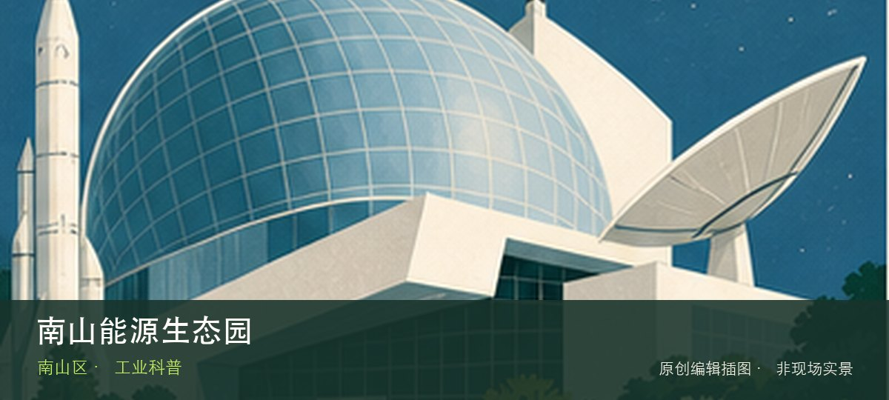
编辑配图·非现场实景南山能源生态园位于妈湾，以垃圾焚烧、烟气处理和城市能源循环为主题的工业参访点，真实生产系统比普通科普模型更有价值。这里不是只有一个打卡点：垃圾焚烧处理流程提供主要线索，烟气净化系统补足另一层现场关系。参观重点是通过垃圾焚烧处理流程与烟气净化系统理解技术如何进入城市日常，而不是只收集装置照片。预约、活动场次和可参与项目会改变体验，出发前要同时核对开放日与入场条件。
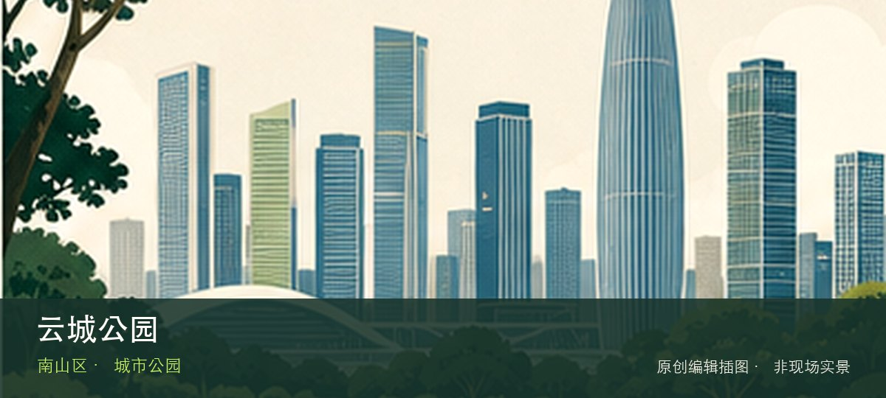
编辑配图·非现场实景云城公园位于留仙洞总部基地，架空平台、山体连桥和高密度总部建筑组成多层公共空间，适合观察新城如何处理坡地与步行连接。先辨认多层架空公共空间，再观察山体连桥，两者共同说明这里为何不能被同类地点的泛化标签替代。游览重点是多层架空公共空间与山体连桥如何组织城市公共生活，可按同行者体力随时缩短。先确认最想看的节点，再把树荫、休息点、活动占用和雨天退出位置纳入路线。
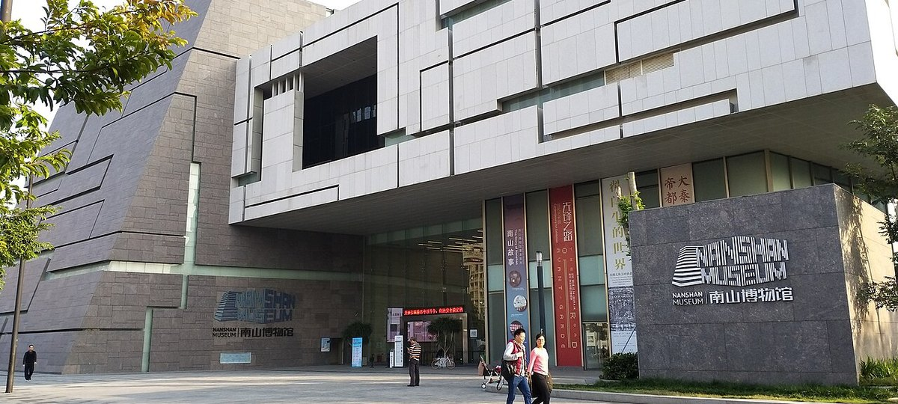
编辑配图·非现场实景深圳市南山博物馆位于南山大道，常设展从南山地域历史延伸至近现代海洋、移民与城区发展，大型临展又提供跨地域文物观看机会。这处地点的内容并不靠规模取胜，南山地域历史常设展和近现代城区发展线才是最值得核对的现场证据。理解这处场馆，重点不是把所有展柜看完，而是沿着南山地域历史常设展和近现代城区发展线两条线索辨认其专题边界。常设展、开放楼层和时段可能调整，专程前往前仍应核对场馆当天公告。
深圳市南山区南头古城博物馆位于南头古城较场路，馆舍把古城建置、海防治理与出土文物集中起来，是进入商业与社区混合街区前建立历史坐标的关键点。把注意力放在南头古城建置史和海防与行政沿革，能避免只凭名称或网红照片判断这里。理解这处场馆，重点不是把所有展柜看完，而是沿着南头古城建置史和海防与行政沿革两条线索辨认其专题边界。常设展、开放楼层和时段可能调整，专程前往前仍应核对场馆当天公告。
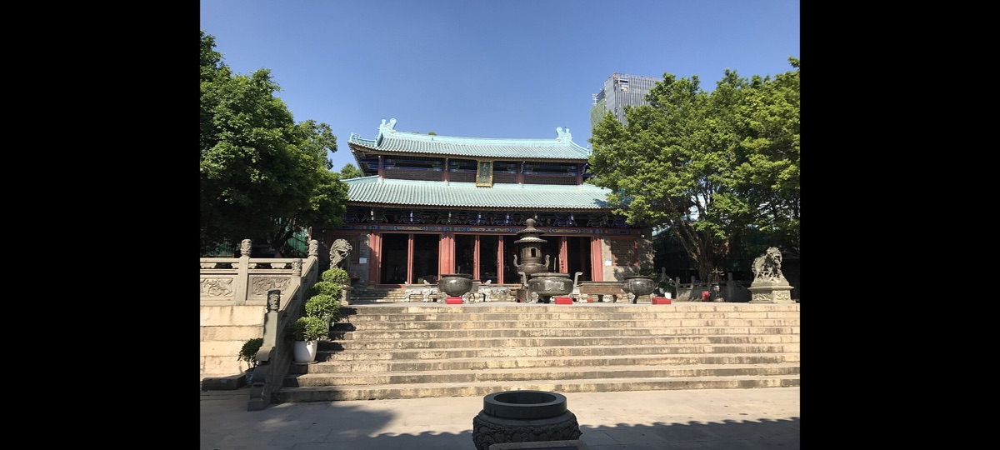
编辑配图·非现场实景深圳市南山区天后博物馆位于赤湾，依托赤湾天后宫讲述海神信仰、海上交通和民间礼俗，初一十五等特殊日历会直接改变开放与现场秩序。先辨认赤湾天后宫建筑，再观察妈祖信仰与海运，两者共同说明这里为何不能被同类地点的泛化标签替代。理解这处场馆，重点不是把所有展柜看完，而是沿着赤湾天后宫建筑和妈祖信仰与海运两条线索辨认其专题边界。常设展、开放楼层和时段可能调整，专程前往前仍应核对场馆当天公告。
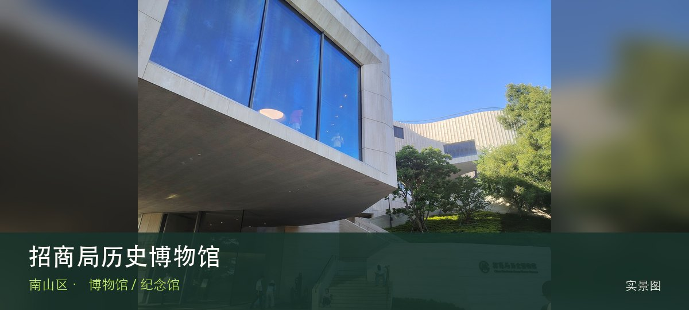
授权实景图招商局历史博物馆位于蛇口沿山路，以招商局企业史串联近代航运、港口建设和蛇口工业区开发，能把一家公司放进中国现代化进程观察。这里不是只有一个打卡点：近代招商局航运史提供主要线索，蛇口工业区开发补足另一层现场关系。理解这处场馆，重点不是把所有展柜看完，而是沿着近代招商局航运史和蛇口工业区开发两条线索辨认其专题边界。常设展、开放楼层和时段可能调整，专程前往前仍应核对场馆当天公告。
深圳中国钢结构博物馆位于后海中心路，以钢结构材料、连接方式和大型工程案例为主，建筑本身也适合观察结构如何成为可读的展品。先辨认钢材与连接节点，再观察大型工程模型，两者共同说明这里为何不能被同类地点的泛化标签替代。理解这处场馆，重点不是把所有展柜看完，而是沿着钢材与连接节点和大型工程模型两条线索辨认其专题边界。常设展、开放楼层和时段可能调整，专程前往前仍应核对场馆当天公告。
深圳南山法律文化博物馆位于玉泉路，通过法律文献、制度沿革和普法展陈呈现法治文化，专题性强但名录在列不等于每天稳定接待散客。这里不是只有一个打卡点：法律制度时间线提供主要线索，普法案例展陈补足另一层现场关系。理解这处场馆，重点不是把所有展柜看完，而是沿着法律制度时间线和普法案例展陈两条线索辨认其专题边界。常设展、开放楼层和时段可能调整，专程前往前仍应核对场馆当天公告。
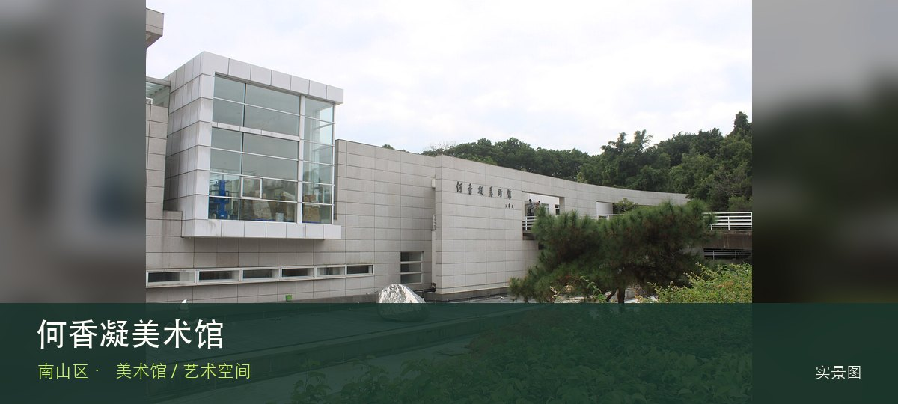
编辑配图·非现场实景何香凝美术馆位于华侨城，以何香凝艺术、二十世纪中国美术研究和当代专题展构成稳定学术方向，馆舍与华侨城文化设施可顺路组合。把注意力放在何香凝艺术研究和二十世纪中国美术，能避免只凭名称或网红照片判断这里。这里的价值随展期变化，应把何香凝艺术研究与二十世纪中国美术放在同一次观看中，辨认作品、空间和所在街区的关系。先查当期展讯与入口，不把官方名录中的地址等同于随时可入场。
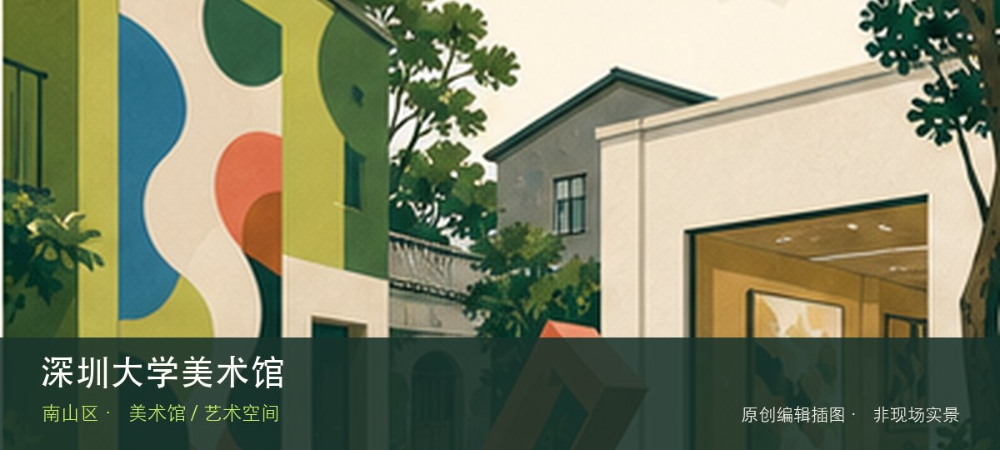
编辑配图·非现场实景深圳大学美术馆位于深圳大学艺术村，高校美术馆把师生创作、学术研究和实验展览放在校园语境中，门禁和教学日历会影响实际可达性。与同类地点相比，最值得停下来的差异落在师生创作展和学院研究项目这两个具体节点上。这里的价值随展期变化，应把师生创作展与学院研究项目放在同一次观看中，辨认作品、空间和所在街区的关系。先查当期展讯与入口，不把官方名录中的地址等同于随时可入场。
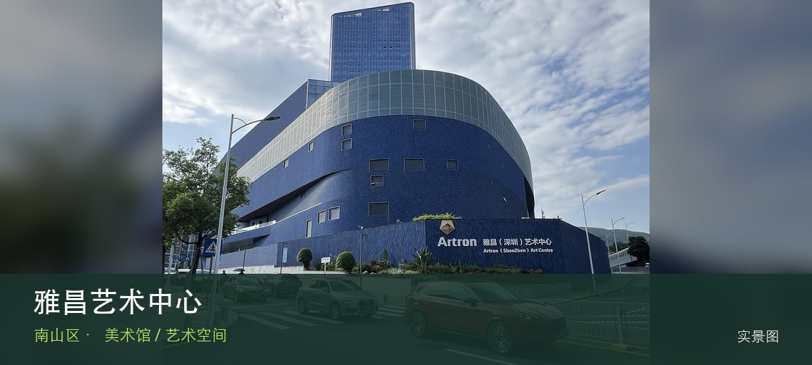
编辑配图·非现场实景雅昌艺术中心位于深云路雅昌大厦，从艺术印刷、图像数据库到展览空间呈现艺术出版产业链，适合关注作品如何被复制、整理和传播。这里不是只有一个打卡点：艺术印刷工艺提供主要线索，艺术图书与数据库补足另一层现场关系。这里的价值随展期变化，应把艺术印刷工艺与艺术图书与数据库放在同一次观看中，辨认作品、空间和所在街区的关系。先查当期展讯与入口，不把官方名录中的地址等同于随时可入场。
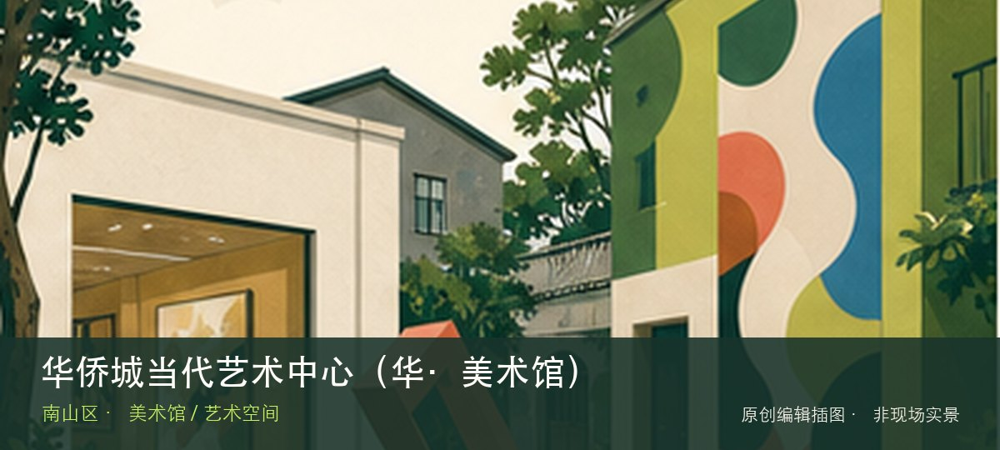
编辑配图·非现场实景华侨城当代艺术中心（华·美术馆）位于华侨城创意文化园北区，旧工业建筑中的当代艺术机构长期关注城市、设计和跨媒介实践，展期与空间调整决定是否值得专程进入园区。与同类地点相比，最值得停下来的差异落在旧厂房展厅和城市与设计主题展这两个具体节点上。这里的价值随展期变化，应把旧厂房展厅与城市与设计主题展放在同一次观看中，辨认作品、空间和所在街区的关系。先查当期展讯与入口，不把官方名录中的地址等同于随时可入场。
桂湾公园位于前海桂湾河南街与鲤鱼门西二街交会处，约45公顷的前海滨水公园通过水廊、草坡和城市天际线呈现新城区公共空间。现场的空间线索集中在桂湾河水廊和前海城市天际线，把两者连起来看，才不会只剩一个笼统印象。游览重点是桂湾河水廊与前海城市天际线如何组织城市公共生活，可按同行者体力随时缩短。先确认最想看的节点，再把树荫、休息点、活动占用和雨天退出位置纳入路线。
文天祥纪念公园位于兴海大道与赤湾六路交会处，近48公顷山体公园以文天祥文化纪念和赤湾港区视野构成历史与地形并重的路线。从文天祥纪念节点转向赤湾山海港视角时，地点的空间、历史或使用方式才会变得清楚。阅读这处地点要把文天祥纪念节点与赤湾山海港视角放回仍在使用的街巷或社区中，不把历史空间当成布景。先看公开区域，再按居民生活、礼仪和开放边界调整停留，不进入封闭建筑。
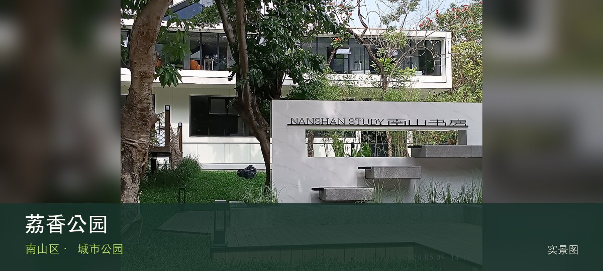
授权实景图荔香公园位于深南大道与南海大道交会处，老牌城市公园以荔枝林、草坪和邻近文化设施构成南头片区的日常绿心。把注意力放在成片荔枝林和中心草坪与林荫道，能避免只凭名称或网红照片判断这里。游览重点是成片荔枝林与中心草坪与林荫道如何组织城市公共生活，可按同行者体力随时缩短。先确认最想看的节点，再把树荫、休息点、活动占用和雨天退出位置纳入路线。
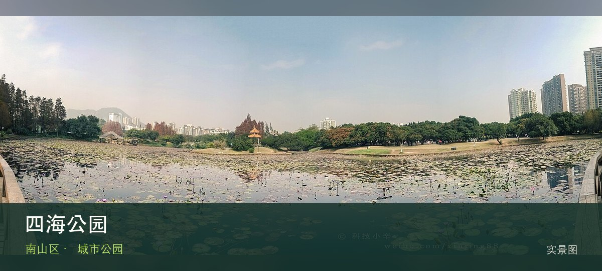
授权实景图四海公园位于蛇口公园路82-2号，蛇口老社区中的湖景公园保留岭南园林、水岸步道和居民日常活动氛围。若只匆匆经过容易错过重点，四海湖水岸与岭南园林节点恰好构成最有辨识度的观察顺序。游览重点是四海湖水岸与岭南园林节点如何组织城市公共生活，可按同行者体力随时缩短。先确认最想看的节点，再把树荫、休息点、活动占用和雨天退出位置纳入路线。
 编辑配图·非现场实景
编辑配图·非现场实景
大沙河公园位于桃源街道北环大道8228号，塘朗山脚下的城市公园以起伏地形、中央绿茵坪、花镜与运动场地连接大沙河生态长廊，开阔草地适合野餐和放风筝，但与河岸长廊是两个不同的游览单元。与同类地点相比，最值得停下来的差异落在中央绿茵坪和西门花镜这两个具体节点上。带孩子到访时，可把中央绿茵坪与西门花镜转化为两项能够完成的观察任务，不必追求看完所有设施。活动、花期和设备开放受日期影响，先确认预约、遮阴、饮水与返程条件。
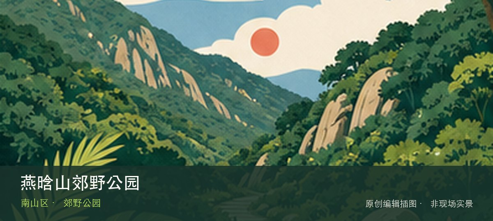
编辑配图·非现场实景燕晗山郊野公园位于华侨城侨城东街6号，华侨城中心片区的24.5公顷山林保留相思树、荔枝林、小桥流水与自然坡地，五条不同风格的登山道和环山自行车道让短时散步与轻量登高可以分开选择。把注意力放在五条山林登山道和相思树与荔枝林，能避免只凭名称或网红照片判断这里。现场不必追求一次走完，先在五条山林登山道与相思树与荔枝林之间确定主线，再按体力、日照和天气保留折返方案。山地、滨水或林下路面会随降雨改变，当天预警和开放边界始终比旧轨迹更优先。
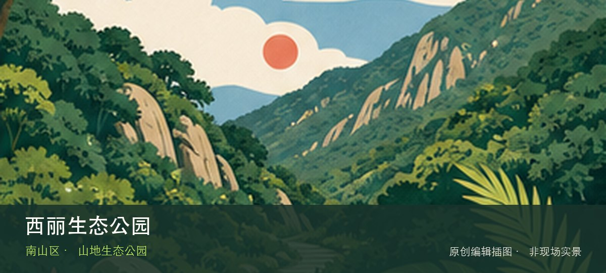
编辑配图·非现场实景西丽生态公园位于同东路与打石一路交会处东南角，23.5万平方米的山地生态公园保留荔枝林和少量农耕空间，并以阳光草坪、儿童活动区、自然教育设施与山顶玻璃观景平台构成从社区到山顶的完整游线。从山顶玻璃观景平台转向原生荔枝林与阳光草坪时，地点的空间、历史或使用方式才会变得清楚。带孩子到访时，可把山顶玻璃观景平台与原生荔枝林与阳光草坪转化为两项能够完成的观察任务，不必追求看完所有设施。活动、花期和设备开放受日期影响，先确认预约、遮阴、饮水与返程条件。
深圳市水土保持科技示范园位于西丽街道沙河西路4148号，由废弃采石场修复而来的公益性科普园，以水土文化、水土流失模拟、植物根箱、径流观测和海绵城市展示解释深圳如何治理城市边坡与水土流失。这里不是只有一个打卡点：水土流失模拟设施提供主要线索，植物根箱与径流观测补足另一层现场关系。参观重点是通过水土流失模拟设施与植物根箱与径流观测理解技术如何进入城市日常，而不是只收集装置照片。预约、活动场次和可参与项目会改变体验，出发前要同时核对开放日与入场条件。
后海河碧道位于后海片区中心路，东滨路至东角头海湾，已建成约2公里的城市滨河碧道连接深圳湾滨海休闲带，以亲水空间、慢行道路和记录填海造地与城市发展的公共艺术形成南北向绿色廊道。这里不是只有一个打卡点：后海河亲水慢行带提供主要线索，填海造地主题公共艺术补足另一层现场关系。现场不必追求一次走完，先在后海河亲水慢行带与填海造地主题公共艺术之间确定主线，再按体力、日照和天气保留折返方案。山地、滨水或林下路面会随降雨改变，当天预警和开放边界始终比旧轨迹更优先。
陈郁故居位于南园街道南园社区，故居以小尺度住宅和人物陈列承载深圳本地近现代工业史与社区记忆。若只匆匆经过容易错过重点，故居传统建筑与陈郁生平陈列恰好构成最有辨识度的观察顺序。阅读这处地点要把故居传统建筑与陈郁生平陈列放回仍在使用的街巷或社区中，不把历史空间当成布景。先看公开区域，再按居民生活、礼仪和开放边界调整停留，不进入封闭建筑。
中心河绿道位于东滨路至深圳湾出海口，单侧约2.2公里的儿童友好滨水线路于2023年全段开放，把沙滩、河口与社区公园串联。从河口阳光沙滩转向儿童嬉水与自然教育节点时，地点的空间、历史或使用方式才会变得清楚。现场不必追求一次走完，先在河口阳光沙滩与儿童嬉水与自然教育节点之间确定主线，再按体力、日照和天气保留折返方案。山地、滨水或林下路面会随降雨改变，当天预警和开放边界始终比旧轨迹更优先。
南山深圳湾绿道位于红树林保护区至深圳湾大桥西侧，约13公里滨海慢行线沿深圳湾展开，可分段步行或骑行并观察潮间带与城市海岸。与同类地点相比，最值得停下来的差异落在深圳湾大桥远眺和滨海观鸟与骑行带这两个具体节点上。海岸体验取决于深圳湾大桥远眺与滨海观鸟与骑行带当天的风浪、潮位和运营边界，不宜把旧照片当成实时承诺。先确定安全退路和返程节点，遇雷雨、台风影响或封闭提示就缩短行程。
 编辑配图·非现场实景
编辑配图·非现场实景
盐田海滨栈道位于沙头角至大小梅沙沿岸，长海岸由多个开放状况不同的栈道与公园段组成，修复、潮浪和工程会让旧攻略中的连续路线失效。这里不是只有一个打卡点：沙头角城市海岸段提供主要线索，盐田港观景段补足另一层现场关系。海岸体验取决于沙头角城市海岸段与盐田港观景段当天的风浪、潮位和运营边界，不宜把旧照片当成实时承诺。先确定安全退路和返程节点，遇雷雨、台风影响或封闭提示就缩短行程。
 编辑配图·非现场实景
编辑配图·非现场实景
盐田中央公园位于海山街道，大章鱼装置、草坪、灯塔图书馆和港口背景组成亲子友好的城市海滨客厅，尺度适合一至两小时。与同类地点相比，最值得停下来的差异落在大章鱼儿童景观和港口与山海视野这两个具体节点上。游览重点是大章鱼儿童景观与港口与山海视野如何组织城市公共生活，可按同行者体力随时缩短。先确认最想看的节点，再把树荫、休息点、活动占用和雨天退出位置纳入路线。
 编辑配图·非现场实景
编辑配图·非现场实景
海山公园位于海山社区，彩色构筑、山腰平台和社区入口在较短爬升中打开盐田港与梧桐山方向视野，比海滩更贴近日常生活。现场的空间线索集中在山腰彩色构筑和盐田港俯瞰，把两者连起来看，才不会只剩一个笼统印象。现场不必追求一次走完，先在山腰彩色构筑与盐田港俯瞰之间确定主线，再按体力、日照和天气保留折返方案。山地、滨水或林下路面会随降雨改变，当天预警和开放边界始终比旧轨迹更优先。
 编辑配图·非现场实景
编辑配图·非现场实景
恩上水库位于沙头角半山，盘山绿道抵达小型水库和开阔草地，途中可观察港口、社区与梧桐山支脉的高度变化，开放边界需服从现场。这里不是只有一个打卡点：恩上水库水面提供主要线索，半山草地补足另一层现场关系。现场不必追求一次走完，先在恩上水库水面与半山草地之间确定主线，再按体力、日照和天气保留折返方案。山地、滨水或林下路面会随降雨改变，当天预警和开放边界始终比旧轨迹更优先。
恩上湿地公园位于恩上半山片区，小尺度湿地、水生植物和山林边缘构成安静生态节点，适合与恩上绿道组合但不应期待大型观鸟设施。若只匆匆经过容易错过重点，山地小湿地与水生植物群落恰好构成最有辨识度的观察顺序。观察重点是山地小湿地与水生植物群落之间的生境关系，而不是追逐动物或进入滩涂取景。保持距离、不投喂，并把水位、蚊虫、暴晒和雷雨作为当天是否停留的判断条件。
大梅沙海滨公园位于大梅沙，宽沙滩、泳区与公共配套承载深圳最集中的海滨客流，真正的决策在预约、泳区状态和高峰返程。从大梅沙沙滩转向划定泳区与救生服务时，地点的空间、历史或使用方式才会变得清楚。海岸体验取决于大梅沙沙滩与划定泳区与救生服务当天的风浪、潮位和运营边界，不宜把旧照片当成实时承诺。先确定安全退路和返程节点，遇雷雨、台风影响或封闭提示就缩短行程。
小梅沙海滨公园位于小梅沙，改造后的付费海滨度假区把沙滩、商业与配套项目整体运营，票制、开放区域和项目状态比旧印象更重要。从小梅沙沙滩转向改造后海滨设施时，地点的空间、历史或使用方式才会变得清楚。海岸体验取决于小梅沙沙滩与改造后海滨设施当天的风浪、潮位和运营边界，不宜把旧照片当成实时承诺。先确定安全退路和返程节点，遇雷雨、台风影响或封闭提示就缩短行程。
背仔角位于小梅沙东侧，小海湾、礁石和相对安静的岸线形成与大小梅沙不同的自然尺度，但风浪和潮位会迅速压缩安全停留区。这里不是只有一个打卡点：小型弧形海湾提供主要线索，礁石潮间带补足另一层现场关系。海岸体验取决于小型弧形海湾与礁石潮间带当天的风浪、潮位和运营边界，不宜把旧照片当成实时承诺。先确定安全退路和返程节点，遇雷雨、台风影响或封闭提示就缩短行程。
中英街位于沙头角边境特别管理区，界碑、骑楼商业与边境管理历史压缩在短街中，进入条件由证件和预约规则决定，不能按普通步行街理解。从中英街界碑转向边境管理历史时，地点的空间、历史或使用方式才会变得清楚。阅读这处地点要把中英街界碑与边境管理历史放回仍在使用的街巷或社区中，不把历史空间当成布景。先看公开区域，再按居民生活、礼仪和开放边界调整停留，不进入封闭建筑。
三洲田森林公园位于盐田东北部，东园、西园和大尺度山林连接盐田与龙岗方向，旧穿越轨迹复杂，官方开放入口与道路状态是首要信息。现场的空间线索集中在三洲田山地林相和东园西园分区，把两者连起来看，才不会只剩一个笼统印象。现场不必追求一次走完，先在三洲田山地林相与东园西园分区之间确定主线，再按体力、日照和天气保留折返方案。山地、滨水或林下路面会随降雨改变，当天预警和开放边界始终比旧轨迹更优先。
东部华侨城位于大梅沙山地，大型付费主题景区将山地景观、娱乐项目和度假设施组合运营，具体开放项目与接驳会随检修和天气变化。先辨认山地主题景观，再观察分区娱乐项目，两者共同说明这里为何不能被同类地点的泛化标签替代。带孩子到访时，可把山地主题景观与分区娱乐项目转化为两项能够完成的观察任务，不必追求看完所有设施。活动、花期和设备开放受日期影响，先确认预约、遮阴、饮水与返程条件。
灯塔图书馆位于海景公园与中央公园之间，白色灯塔外形、海景阅读空间和公园水岸使它成为小体量公共文化节点，座位与开放时段决定体验。从灯塔形建筑转向海景阅读窗时，地点的空间、历史或使用方式才会变得清楚。游览重点是灯塔形建筑与海景阅读窗如何组织城市公共生活，可按同行者体力随时缩短。先确认最想看的节点，再把树荫、休息点、活动占用和雨天退出位置纳入路线。
盐田海鲜街位于盐田港社区，餐饮店、渔业记忆和港口作业交通交织，价值在观察社区如何依海而生，不应把消费区误作纯景观步道。这里不是只有一个打卡点：海鲜餐饮街区提供主要线索，盐田港作业背景补足另一层现场关系。游览重点是海鲜餐饮街区与盐田港作业背景如何组织城市公共生活，可按同行者体力随时缩短。先确认最想看的节点，再把树荫、休息点、活动占用和雨天退出位置纳入路线。
北山道位于盐田港北侧山坡，连续上坡把港区、社区和山体高差直接呈现，沿线日晒与车辆环境明显，适合清晨做短距离城市山海观察。若只匆匆经过容易错过重点，盐田港高位视角与北山社区坡道恰好构成最有辨识度的观察顺序。现场不必追求一次走完，先在盐田港高位视角与北山社区坡道之间确定主线，再按体力、日照和天气保留折返方案。山地、滨水或林下路面会随降雨改变，当天预警和开放边界始终比旧轨迹更优先。
盐田能源生态园位于盐田工业片区，以垃圾处理、能源回收与环保设施为真实生产背景，公众体验依赖预约导览和安全管理而非自由参观。这里不是只有一个打卡点：垃圾处理流程提供主要线索，能源回收系统补足另一层现场关系。参观重点是通过垃圾处理流程与能源回收系统理解技术如何进入城市日常，而不是只收集装置照片。预约、活动场次和可参与项目会改变体验，出发前要同时核对开放日与入场条件。
深圳市中英街历史博物馆位于沙头角中英街内，馆内以界碑、边境制度、沙头角居民生活和商业变迁解释中英街，不购物也能获得完整历史主线。与同类地点相比，最值得停下来的差异落在界碑与边境沿革和沙头角居民生活这两个具体节点上。理解这处场馆，重点不是把所有展柜看完，而是沿着界碑与边境沿革和沙头角居民生活两条线索辨认其专题边界。常设展、开放楼层和时段可能调整，专程前往前仍应核对场馆当天公告。
恩上古村生态公园位于海山街道恩上公路恩上水库旁，古村遗存、山林和水库视野共同构成半山慢行节点，适合与恩上水库路线分段组合。现场的空间线索集中在恩上古村遗存和半山水库视野，把两者连起来看，才不会只剩一个笼统印象。阅读这处地点要把恩上古村遗存与半山水库视野放回仍在使用的街巷或社区中，不把历史空间当成布景。先看公开区域，再按居民生活、礼仪和开放边界调整停留，不进入封闭建筑。
烟墩山国际友好公园位于盐田河入海口避风塘南侧，盐田港与避风塘之间的小型滨海公园以国际友好主题、海港视野和步行桥形成独立停留点。与同类地点相比，最值得停下来的差异落在海港观景平台和国际友好主题装置这两个具体节点上。海岸体验取决于海港观景平台与国际友好主题装置当天的风浪、潮位和运营边界，不宜把旧照片当成实时承诺。先确定安全退路和返程节点，遇雷雨、台风影响或封闭提示就缩短行程。
梅沙湾公园位于梅沙上成路8号，位于大小梅沙之间的山海节点，以滨海眺望、山体绿地和社区休憩承担海岸线路的中途停靠。从梅沙湾海景转向山海过渡步道时，地点的空间、历史或使用方式才会变得清楚。海岸体验取决于梅沙湾海景与山海过渡步道当天的风浪、潮位和运营边界，不宜把旧照片当成实时承诺。先确定安全退路和返程节点，遇雷雨、台风影响或封闭提示就缩短行程。
 编辑配图·非现场实景
编辑配图·非现场实景
盐田河碧道位于北山道与永安路交会处的盐田河上游，约0.56公里的短线亲水碧道把阳光跑道、亲水平台、休憩亭、儿童游乐场和跨河创智之桥集中在盐田河上游，适合作为社区级滨水停留。从创智之桥转向亲水平台与阳光跑道时，地点的空间、历史或使用方式才会变得清楚。现场不必追求一次走完，先在创智之桥与亲水平台与阳光跑道之间确定主线，再按体力、日照和天气保留折返方案。山地、滨水或林下路面会随降雨改变，当天预警和开放边界始终比旧轨迹更优先。
鸳鸯谷碧道位于梧桐山鸳鸯谷风景区、沙头角城区北侧，依托鸳鸯谷自然水系建设的山谷碧道以溪流、花谷、跌级蓄水湖面和恩上瀑布串联溯溪观景、湿地漫游与林下休闲，是梧桐山前厅式的短线山水空间。若只匆匆经过容易错过重点，溪流与花谷与跌级湖面和恩上瀑布恰好构成最有辨识度的观察顺序。现场不必追求一次走完，先在溪流与花谷与跌级湖面和恩上瀑布之间确定主线，再按体力、日照和天气保留折返方案。山地、滨水或林下路面会随降雨改变，当天预警和开放边界始终比旧轨迹更优先。
盐田半山绿道（恩上—盐高段）位于沙头角林场至盐田高级中学，约9公里的山海慢行线通常06:00—18:30开放，以观景平台、湿地节点和森林会客厅组织路线。这里不是只有一个打卡点：一览山海城观景面提供主要线索，梧桐山森林会客厅补足另一层现场关系。现场不必追求一次走完，先在一览山海城观景面与梧桐山森林会客厅之间确定主线，再按体力、日照和天气保留折返方案。山地、滨水或林下路面会随降雨改变，当天预警和开放边界始终比旧轨迹更优先。
欢乐港湾位于宝安中心海湾，摩天轮、湾区之声演艺中心、商业街与滨海公园集中在同一片海湾，公共空间免费但体验项目各自运营。这处地点的内容并不靠规模取胜，湾区之光摩天轮和湾区之声演艺中心才是最值得核对的现场证据。游览重点是湾区之光摩天轮与湾区之声演艺中心如何组织城市公共生活，可按同行者体力随时缩短。先确认最想看的节点，再把树荫、休息点、活动占用和雨天退出位置纳入路线。
滨海文化公园位于宝安中心，大草坪、海岸线和宝安图书馆等公共建筑形成开阔城市客厅，和欢乐港湾商业项目相邻但游览节奏更松。从滨海开阔草坪转向宝安中心公共建筑群时，地点的空间、历史或使用方式才会变得清楚。游览重点是滨海开阔草坪与宝安中心公共建筑群如何组织城市公共生活，可按同行者体力随时缩短。先确认最想看的节点，再把树荫、休息点、活动占用和雨天退出位置纳入路线。
西湾红树林公园位于固戍西部海岸，潮滩、红树林、跨海桥和机场航线叠成独特景观，飞机并非唯一看点，候鸟与海岸生态更需要克制观察。先辨认红树林潮滩，再观察候鸟与海湾生境，两者共同说明这里为何不能被同类地点的泛化标签替代。观察重点是红树林潮滩与候鸟与海湾生境之间的生境关系，而不是追逐动物或进入滩涂取景。保持距离、不投喂，并把水位、蚊虫、暴晒和雷雨作为当天是否停留的判断条件。
宝安公园位于新安城区，低山、环山步道和社区运动空间构成宝安老城区的日常登高点，难度低于郊野山线但仍有连续坡段。这处地点的内容并不靠规模取胜，环山林荫步道和山顶城市视野才是最值得核对的现场证据。现场不必追求一次走完，先在环山林荫步道与山顶城市视野之间确定主线，再按体力、日照和天气保留折返方案。山地、滨水或林下路面会随降雨改变，当天预警和开放边界始终比旧轨迹更优先。
凤凰山森林公园位于福永凤凰片区，山林、凤岩古庙和望烟楼等节点把登高与民间信仰结合，节假日进香客流会显著改变交通和游线。若只匆匆经过容易错过重点，凤岩古庙与望烟楼登高恰好构成最有辨识度的观察顺序。现场不必追求一次走完，先在凤岩古庙与望烟楼登高之间确定主线，再按体力、日照和天气保留折返方案。山地、滨水或林下路面会随降雨改变，当天预警和开放边界始终比旧轨迹更优先。
凤凰古村位于福永凤凰社区，祠堂、古井、石巷和仍在使用的民居保存岭南村落格局，适合与凤凰山分开慢看而非只作登山通道。现场的空间线索集中在文氏宗祠群和石板古巷，把两者连起来看，才不会只剩一个笼统印象。阅读这处地点要把文氏宗祠群与石板古巷放回仍在使用的街巷或社区中，不把历史空间当成布景。先看公开区域，再按居民生活、礼仪和开放边界调整停留，不进入封闭建筑。
清平古墟位于新桥街道，永兴桥、古墟街巷和更新后的展演空间共同延续商贸节点记忆，当期市集与演出会改变现场氛围。若只匆匆经过容易错过重点，永兴桥与古墟骑楼街巷恰好构成最有辨识度的观察顺序。阅读这处地点要把永兴桥与古墟骑楼街巷放回仍在使用的街巷或社区中，不把历史空间当成布景。先看公开区域，再按居民生活、礼仪和开放边界调整停留，不进入封闭建筑。
立新湖公园位于福永，环湖绿道、亲水平台和社区休闲设施围绕水体展开，路线平缓但完整绕湖距离仍需按体力取舍。这里不是只有一个打卡点：立新湖环湖绿道提供主要线索，亲水平台补足另一层现场关系。现场不必追求一次走完，先在立新湖环湖绿道与亲水平台之间确定主线，再按体力、日照和天气保留折返方案。山地、滨水或林下路面会随降雨改变，当天预警和开放边界始终比旧轨迹更优先。
海上田园位于沙井西部湿地，水乡湿地、农业展示和亲子体验按景区方式运营，项目、票价和表演时刻会直接决定是否值得安排整天。把注意力放在水乡湿地景观和农业与自然教育，能避免只凭名称或网红照片判断这里。带孩子到访时，可把水乡湿地景观与农业与自然教育转化为两项能够完成的观察任务，不必追求看完所有设施。活动、花期和设备开放受日期影响，先确认预约、遮阴、饮水与返程条件。
阳台山森林公园位于宝安石岩侧与龙华大浪侧，跨区山体总面积大，石岩侧与大浪侧对应不同入口、爬升和返程体系，必须先选一侧再谈登山路线。这里不是只有一个打卡点：石岩侧官方入口提供主要线索，大浪侧胜利大营救广场补足另一层现场关系。现场不必追求一次走完，先在石岩侧官方入口与大浪侧胜利大营救广场之间确定主线，再按体力、日照和天气保留折返方案。山地、滨水或林下路面会随降雨改变，当天预警和开放边界始终比旧轨迹更优先。
茅洲河碧道位于燕罗与松岗沿河，碧道穿过工业社区、生态修复河段与桥梁节点，能直观看到污染治理后的城市水岸如何重新进入公共生活。与同类地点相比，最值得停下来的差异落在茅洲河生态修复段和工业社区水岸这两个具体节点上。现场不必追求一次走完，先在茅洲河生态修复段与工业社区水岸之间确定主线，再按体力、日照和天气保留折返方案。山地、滨水或林下路面会随降雨改变，当天预警和开放边界始终比旧轨迹更优先。
沙井老街位于沙井，旧街、宗祠、蚝乡饮食与社区商业保留珠江口聚落记忆，和蚝文化博物馆组合能避免只把它当餐饮街。把注意力放在沙井古墟街巷和蚝乡生活线索，能避免只凭名称或网红照片判断这里。阅读这处地点要把沙井古墟街巷与蚝乡生活线索放回仍在使用的街巷或社区中，不把历史空间当成布景。先看公开区域，再按居民生活、礼仪和开放边界调整停留，不进入封闭建筑。
宝安图书馆位于宝安中心，大体量阅读空间、展览活动与滨海公共建筑群相连，是把欢乐港湾户外行程转换为雨天室内计划的关键节点。先辨认中央阅读大厅，再观察公共展览与讲座，两者共同说明这里为何不能被同类地点的泛化标签替代。游览重点是中央阅读大厅与公共展览与讲座如何组织城市公共生活，可按同行者体力随时缩短。先确认最想看的节点，再把树荫、休息点、活动占用和雨天退出位置纳入路线。
罗田森林公园位于燕罗北部，北部山林、开阔草地和骑行道路构成远离中心区的休闲空间，开放路段与交通接驳比景点名本身更重要。从罗田山林转向开放草地时，地点的空间、历史或使用方式才会变得清楚。现场不必追求一次走完，先在罗田山林与开放草地之间确定主线，再按体力、日照和天气保留折返方案。山地、滨水或林下路面会随降雨改变，当天预警和开放边界始终比旧轨迹更优先。
西部海岸观光带位于固戍向前海方向，沿机场、红树林与前海湾展开的慢行网络仍在持续完善，不同区段可能被工程、潮汐或管理边界切开。这处地点的内容并不靠规模取胜，固戍海岸段和机场与跨海桥视野才是最值得核对的现场证据。海岸体验取决于固戍海岸段与机场与跨海桥视野当天的风浪、潮位和运营边界，不宜把旧照片当成实时承诺。先确定安全退路和返程节点，遇雷雨、台风影响或封闭提示就缩短行程。
深圳（宝安）劳务工博物馆位于石岩上屋，依托旧工业建筑记录外来劳务工的生产、居住与城市贡献，是理解深圳制造业背后普通劳动者的重要场馆。从劳务工生活史转向旧工业建筑时，地点的空间、历史或使用方式才会变得清楚。理解这处场馆，重点不是把所有展柜看完，而是沿着劳务工生活史和旧工业建筑两条线索辨认其专题边界。常设展、开放楼层和时段可能调整，专程前往前仍应核对场馆当天公告。
中共宝安县第一次代表大会纪念馆位于燕罗素白陈公祠，纪念馆把早期党组织活动放入传统陈氏宗祠空间，革命史与地方建筑在同一地点形成双重阅读。现场的空间线索集中在素白陈公祠建筑和宝安县早期党史，把两者连起来看，才不会只剩一个笼统印象。理解这处场馆，重点不是把所有展柜看完，而是沿着素白陈公祠建筑和宝安县早期党史两条线索辨认其专题边界。常设展、开放楼层和时段可能调整，专程前往前仍应核对场馆当天公告。
深圳市宝安区华夏龙泉青瓷博物馆位于福海，以龙泉青瓷的釉色、器形和烧造传统为专题，能把宋元以来的窑业技术与当代收藏放在一条线上。这处地点的内容并不靠规模取胜，龙泉青瓷釉色和传统窑烧工艺才是最值得核对的现场证据。理解这处场馆，重点不是把所有展柜看完，而是沿着龙泉青瓷釉色和传统窑烧工艺两条线索辨认其专题边界。常设展、开放楼层和时段可能调整，专程前往前仍应核对场馆当天公告。
深圳市宝安区结缘奇石博物馆位于航城，天然奇石的纹理、造型和产地构成主要叙事，观看时应区分地质材料事实与后来的审美命名。与同类地点相比，最值得停下来的差异落在天然奇石形态和矿物纹理与产地这两个具体节点上。理解这处场馆，重点不是把所有展柜看完，而是沿着天然奇石形态和矿物纹理与产地两条线索辨认其专题边界。常设展、开放楼层和时段可能调整，专程前往前仍应核对场馆当天公告。
深圳市宝安区锦舟陶瓷博物馆位于新安，陶瓷器物按胎、釉、纹饰和用途展开，适合比较日用器与陈设器如何反映不同生活和审美。现场的空间线索集中在陶瓷胎釉差异和纹饰与器形，把两者连起来看，才不会只剩一个笼统印象。理解这处场馆，重点不是把所有展柜看完，而是沿着陶瓷胎釉差异和纹饰与器形两条线索辨认其专题边界。常设展、开放楼层和时段可能调整，专程前往前仍应核对场馆当天公告。
深圳市宝安区老战士纪念馆位于海上田园，以老战士经历、军旅物件和口述记忆为主题，所在景区并不改变场馆当前闭馆的事实。这处地点的内容并不靠规模取胜，老战士口述史和军旅生活物件才是最值得核对的现场证据。理解这处场馆，重点不是把所有展柜看完，而是沿着老战士口述史和军旅生活物件两条线索辨认其专题边界。常设展、开放楼层和时段可能调整，专程前往前仍应核对场馆当天公告。
深圳市宝安区沙井蚝文化博物馆位于沙井老街，围绕蚝田、养殖工具、饮食和沙井社区发展讲述珠江口生产文化，是进入老街前最清楚的蚝乡知识入口。这处地点的内容并不靠规模取胜，沙井蚝养殖史和蚝业生产工具才是最值得核对的现场证据。理解这处场馆，重点不是把所有展柜看完，而是沿着沙井蚝养殖史和蚝业生产工具两条线索辨认其专题边界。常设展、开放楼层和时段可能调整，专程前往前仍应核对场馆当天公告。
深圳市宝安区一雍紫砂博物馆位于西乡，以紫砂泥料、壶型和制壶技法为核心，适合从一把壶观察材料、手工和饮茶方式之间的约束。现场的空间线索集中在紫砂泥料和经典壶型，把两者连起来看，才不会只剩一个笼统印象。理解这处场馆，重点不是把所有展柜看完，而是沿着紫砂泥料和经典壶型两条线索辨认其专题边界。常设展、开放楼层和时段可能调整，专程前往前仍应核对场馆当天公告。
深圳市宝安区邹鲁潮汕民俗博物馆位于西乡，潮汕民俗器物、礼仪与生活场景体现移民群体如何在深圳保存地域文化，专题区别于一般古玩收藏。与同类地点相比，最值得停下来的差异落在潮汕礼俗器物和传统生活场景这两个具体节点上。理解这处场馆，重点不是把所有展柜看完，而是沿着潮汕礼俗器物和传统生活场景两条线索辨认其专题边界。常设展、开放楼层和时段可能调整，专程前往前仍应核对场馆当天公告。
深圳市当代名家文房四宝博物馆位于西乡，笔、墨、纸、砚的材料与制作工艺构成完整书写系统，名家作品只是理解工具如何影响表达的延伸。把注意力放在笔墨纸砚实物和传统制作工艺，能避免只凭名称或网红照片判断这里。理解这处场馆，重点不是把所有展柜看完，而是沿着笔墨纸砚实物和传统制作工艺两条线索辨认其专题边界。常设展、开放楼层和时段可能调整，专程前往前仍应核对场馆当天公告。
深圳市合正艺术博物馆位于新安，综合艺术收藏与阶段性展陈构成民办馆特色，具体门类和开放安排可能变化，专程前往需先确认当期主题。若只匆匆经过容易错过重点，综合艺术收藏与阶段性专题展恰好构成最有辨识度的观察顺序。理解这处场馆，重点不是把所有展柜看完，而是沿着综合艺术收藏和阶段性专题展两条线索辨认其专题边界。常设展、开放楼层和时段可能调整，专程前往前仍应核对场馆当天公告。
深圳市十里红妆民俗博物馆位于福永，围绕传统婚俗、嫁妆家具和女性生活器物展开，红妆场景背后是宗族、家庭与手工艺关系，但当前闭馆改造。与同类地点相比，最值得停下来的差异落在传统嫁妆家具和婚俗礼仪这两个具体节点上。理解这处场馆，重点不是把所有展柜看完，而是沿着传统嫁妆家具和婚俗礼仪两条线索辨认其专题边界。常设展、开放楼层和时段可能调整，专程前往前仍应核对场馆当天公告。
深圳市宝安区宝弘博物馆位于西乡，民办综合收藏馆的实际展陈以当期开放为准，观看重点应落在明确藏品门类与策展线索而非馆名规模。与同类地点相比，最值得停下来的差异落在综合收藏门类和专题策展线索这两个具体节点上。理解这处场馆，重点不是把所有展柜看完，而是沿着综合收藏门类和专题策展线索两条线索辨认其专题边界。常设展、开放楼层和时段可能调整，专程前往前仍应核对场馆当天公告。
深圳市宝安区世纪琥珀博物馆位于松岗，琥珀形成、内含物、加工和产业链构成从自然材料到珠宝商品的完整路径，适合与水贝类场馆对照。与同类地点相比，最值得停下来的差异落在琥珀形成与内含物和原石加工工艺这两个具体节点上。理解这处场馆，重点不是把所有展柜看完，而是沿着琥珀形成与内含物和原石加工工艺两条线索辨认其专题边界。常设展、开放楼层和时段可能调整，专程前往前仍应核对场馆当天公告。
深圳市海之洋贝壳博物馆位于沙井，贝壳形态、生物分类与海洋生态是核心，不同于单纯工艺品展示，适合从结构差异认识软体动物适应。与同类地点相比，最值得停下来的差异落在贝壳形态分类和软体动物生态这两个具体节点上。理解这处场馆，重点不是把所有展柜看完，而是沿着贝壳形态分类和软体动物生态两条线索辨认其专题边界。常设展、开放楼层和时段可能调整，专程前往前仍应核对场馆当天公告。
深圳市宝安区鼎坤陶瓷博物馆位于新安，以陶瓷器物和工艺收藏为主，可通过胎釉、窑口和修复痕迹与区内其他陶瓷馆建立比较而非重复打卡。把注意力放在陶瓷窑口线索和胎釉与烧成，能避免只凭名称或网红照片判断这里。理解这处场馆，重点不是把所有展柜看完，而是沿着陶瓷窑口线索和胎釉与烧成两条线索辨认其专题边界。常设展、开放楼层和时段可能调整，专程前往前仍应核对场馆当天公告。
深圳市垃圾处理历史博物馆位于燕罗，以深圳环卫设施、垃圾处理技术和城市消费变化为线索，真实处理场地语境使参观必须服从预约与安全规则。这里不是只有一个打卡点：深圳垃圾处理沿革提供主要线索，环卫设施模型补足另一层现场关系。参观重点是通过深圳垃圾处理沿革与环卫设施模型理解技术如何进入城市日常，而不是只收集装置照片。预约、活动场次和可参与项目会改变体验，出发前要同时核对开放日与入场条件。
深圳市宝安区福永杂技博物馆位于福永，杂技道具、训练方法和演出史将舞台上的技巧还原为长期身体训练与团体协作，专题辨识度很高。先辨认传统杂技道具，再观察训练与身体技巧，两者共同说明这里为何不能被同类地点的泛化标签替代。理解这处场馆，重点不是把所有展柜看完，而是沿着传统杂技道具和训练与身体技巧两条线索辨认其专题边界。常设展、开放楼层和时段可能调整，专程前往前仍应核对场馆当天公告。
观澜美术馆位于官方名录所列广场沿河路片区，官方美术馆名录将其列入宝安区，但名称容易与龙华观澜版画机构混淆，地址核验本身就是到访前置条件。现场的空间线索集中在官方名录地址核验和当期美术展览，把两者连起来看，才不会只剩一个笼统印象。这里的价值随展期变化，应把官方名录地址核验与当期美术展览放在同一次观看中，辨认作品、空间和所在街区的关系。先查当期展讯与入口，不把官方名录中的地址等同于随时可入场。
簕杜鹃谷公园位于航城街道九围簕杜鹃谷路，约65公顷的城市郊野型森林公园集中展示118个品种、约50万株簕杜鹃，并设置专题科普馆。与同类地点相比，最值得停下来的差异落在全国首个簕杜鹃科普馆和188米簕杜鹃长廊这两个具体节点上。带孩子到访时，可把全国首个簕杜鹃科普馆与188米簕杜鹃长廊转化为两项能够完成的观察任务，不必追求看完所有设施。活动、花期和设备开放受日期影响，先确认预约、遮阴、饮水与返程条件。
九围湿地公园（九围生态库）位于航城街道九围彩绘路、铁岗水库旁，约43万平方米的生态空间以水杉、湿地和水鸟景观连接鲲鹏径第二段的一公里杉木栈道。把注意力放在水杉湿地栈道和鲲鹏径第二段接口，能避免只凭名称或网红照片判断这里。观察重点是水杉湿地栈道与鲲鹏径第二段接口之间的生境关系，而不是追逐动物或进入滩涂取景。保持距离、不投喂，并把水位、蚊虫、暴晒和雷雨作为当天是否停留的判断条件。
尖岗山公园位于新安街道宝石路西侧、上川路与广泰路交会处，约57公顷的双峰山体公园海拔约202米，以山脊栈道、城市远眺和山顶文化古庙形成爬升路线。这处地点的内容并不靠规模取胜，双峰山脊栈道和山顶文化古庙才是最值得核对的现场证据。现场不必追求一次走完，先在双峰山脊栈道与山顶文化古庙之间确定主线，再按体力、日照和天气保留折返方案。山地、滨水或林下路面会随降雨改变，当天预警和开放边界始终比旧轨迹更优先。
陌上花公园位于石岩街道石岩湖郊野公园环线，3.45万平方米主题花海以爱心花圃、时雨亭和拈花观景台构成石岩湖环线上的季节节点。先辨认爱心形主题花海，再观察时雨亭与拈花观景台，两者共同说明这里为何不能被同类地点的泛化标签替代。带孩子到访时，可把爱心形主题花海与时雨亭与拈花观景台转化为两项能够完成的观察任务，不必追求看完所有设施。活动、花期和设备开放受日期影响，先确认预约、遮阴、饮水与返程条件。
平峦山公园位于西乡街道前进二路与宝田三路交会处，超过218公顷的城市山体公园提供连续林下登山路、眺望点和西乡片区日常健身空间。若只匆匆经过容易错过重点，平峦山连续林道与西乡城市远眺恰好构成最有辨识度的观察顺序。现场不必追求一次走完，先在平峦山连续林道与西乡城市远眺之间确定主线，再按体力、日照和天气保留折返方案。山地、滨水或林下路面会随降雨改变，当天预警和开放边界始终比旧轨迹更优先。
铁仔山公园位于西乡立交西北侧，约145公顷山体把登高视野与古墓群等历史线索叠合，适合短线爬升和城市考古观察。这处地点的内容并不靠规模取胜，铁仔山登高视野和古墓群历史线索才是最值得核对的现场证据。现场不必追求一次走完，先在铁仔山登高视野与古墓群历史线索之间确定主线，再按体力、日照和天气保留折返方案。山地、滨水或林下路面会随降雨改变，当天预警和开放边界始终比旧轨迹更优先。
五指耙公园位于松岗五指耙水库旁，约154公顷的山水公园围绕水库、山林和松岗片区慢行空间展开，游览以开放岸线为准。从五指耙水库景观转向松岗山林步道时，地点的空间、历史或使用方式才会变得清楚。现场不必追求一次走完，先在五指耙水库景观与松岗山林步道之间确定主线，再按体力、日照和天气保留折返方案。山地、滨水或林下路面会随降雨改变，当天预警和开放边界始终比旧轨迹更优先。
福海河公园位于展景路与凤塘大道交会处北侧，约32公顷滨河空间以生态河道、桥下慢行和会展片区公共活动构成西部城市水岸。这里不是只有一个打卡点：福海河生态岸线提供主要线索，会展片区慢行接口补足另一层现场关系。游览重点是福海河生态岸线与会展片区慢行接口如何组织城市公共生活，可按同行者体力随时缩短。先确认最想看的节点，再把树荫、休息点、活动占用和雨天退出位置纳入路线。
定岗湖湿地公园位于松山西路与洪湖路交会处西北侧，十公顷级城市湿地以湖体、挺水植物和社区步道提供松岗片区的安静自然观察点。这处地点的内容并不靠规模取胜，定岗湖水体和湿地植物分带才是最值得核对的现场证据。观察重点是定岗湖水体与湿地植物分带之间的生境关系，而不是追逐动物或进入滩涂取景。保持距离、不投喂，并把水位、蚊虫、暴晒和雷雨作为当天是否停留的判断条件。
燕川古村位于燕罗街道燕川社区，明清村落格局、客家宗祠体系和仍在使用的社区空间共同构成燕罗历史文化线。这处地点的内容并不靠规模取胜，燕川旧村格局和客家宗祠建筑才是最值得核对的现场证据。阅读这处地点要把燕川旧村格局与客家宗祠建筑放回仍在使用的街巷或社区中，不把历史空间当成布景。先看公开区域，再按居民生活、礼仪和开放边界调整停留，不进入封闭建筑。
新二古村位于新桥街道新二社区，首批历史风貌区之一，传统街巷与宗族建筑嵌在沙井—新桥连续建成区中。现场的空间线索集中在新二古村街巷和宗祠与传统民居，把两者连起来看，才不会只剩一个笼统印象。阅读这处地点要把新二古村街巷与宗祠与传统民居放回仍在使用的街巷或社区中，不把历史空间当成布景。先看公开区域，再按居民生活、礼仪和开放边界调整停留，不进入封闭建筑。
新桥古村位于新桥街道新桥社区，古村与清平古墟、新桥粮仓等周边历史节点可组成一条观察墟镇演变的步行线。这里不是只有一个打卡点：新桥古村旧巷提供主要线索，墟镇建筑线索补足另一层现场关系。阅读这处地点要把新桥古村旧巷与墟镇建筑线索放回仍在使用的街巷或社区中，不把历史空间当成布景。先看公开区域，再按居民生活、礼仪和开放边界调整停留，不进入封闭建筑。
桥头古村位于福海街道桥头社区，珠江口东岸传统聚落在工业城区中保留村落尺度，适合观察祠堂、旧巷与现代社区的叠合。把注意力放在桥头旧村街巷和宗祠与社区界面，能避免只凭名称或网红照片判断这里。阅读这处地点要把桥头旧村街巷与宗祠与社区界面放回仍在使用的街巷或社区中，不把历史空间当成布景。先看公开区域，再按居民生活、礼仪和开放边界调整停留，不进入封闭建筑。
环立新湖绿道位于福州大道与政丰北路一带环立新湖，约8.8公里的环湖慢行线通常05:30—22:30开放，书吧、栈道与景观平台构成可分段游览的公园型绿道。这里不是只有一个打卡点：简阅书吧提供主要线索，林中栈道与湖景平台补足另一层现场关系。现场不必追求一次走完，先在简阅书吧与林中栈道与湖景平台之间确定主线，再按体力、日照和天气保留折返方案。山地、滨水或林下路面会随降雨改变，当天预警和开放边界始终比旧轨迹更优先。
凤凰山绿道位于凤凰山森林公园入口至西乡绿道交接点，约9.1公里的山地林道融合登山道与滨水段，是凤凰山外围徒步和骑行体系的重要组成。这处地点的内容并不靠规模取胜，凤凰山林间骑行道和溪水相伴的山地段才是最值得核对的现场证据。现场不必追求一次走完，先在凤凰山林间骑行道与溪水相伴的山地段之间确定主线，再按体力、日照和天气保留折返方案。山地、滨水或林下路面会随降雨改变，当天预警和开放边界始终比旧轨迹更优先。
环石岩湖绿道位于石岩湖环湖开放区域，约30.8公里的长距离环湖绿道串联多个主题公园，透水慢行路面适合分段步行、慢跑或骑行。若只匆匆经过容易错过重点，石岩湖连续岸线与多主题公园接口恰好构成最有辨识度的观察顺序。现场不必追求一次走完，先在石岩湖连续岸线与多主题公园接口之间确定主线，再按体力、日照和天气保留折返方案。山地、滨水或林下路面会随降雨改变，当天预警和开放边界始终比旧轨迹更优先。
 授权实景图
授权实景图
大芬油画村位于布吉大芬社区，画廊、商品油画、原创工作室和居民社区密集混合，价值在观察全球订单生产与个人创作如何共处。先辨认油画复制产业链，再观察原创艺术家工作室，两者共同说明这里为何不能被同类地点的泛化标签替代。这里的价值随展期变化，应把油画复制产业链与原创艺术家工作室放在同一次观看中，辨认作品、空间和所在街区的关系。先查当期展讯与入口，不把官方名录中的地址等同于随时可入场。
 编辑配图·非现场实景
编辑配图·非现场实景
甘坑古镇位于吉华甘坑，客家建筑、炮楼、商业文旅和节庆活动被整合成大型街区，仍需区分历史遗存与后期营造景观。与同类地点相比，最值得停下来的差异落在甘坑客家老屋和炮楼与古巷这两个具体节点上。阅读这处地点要把甘坑客家老屋与炮楼与古巷放回仍在使用的街巷或社区中，不把历史空间当成布景。先看公开区域，再按居民生活、礼仪和开放边界调整停留，不进入封闭建筑。
 授权实景图
授权实景图
大万世居位于坪地大万社区，大型客家围屋以围墙、角楼、祖祠和内部巷道展示宗族聚居结构，建筑空间本身比拍摄外立面更重要。现场的空间线索集中在围屋四角碉楼和中央祖祠，把两者连起来看，才不会只剩一个笼统印象。阅读这处地点要把围屋四角碉楼与中央祖祠放回仍在使用的街巷或社区中，不把历史空间当成布景。先看公开区域，再按居民生活、礼仪和开放边界调整停留，不进入封闭建筑。
大运公园位于大运中心周边，湖区、体育建筑和长距离绿道围绕大运中心展开，适合观察大型赛事设施如何转为市民日常空间。先辨认大运中心体育建筑，再观察神仙湖水岸，两者共同说明这里为何不能被同类地点的泛化标签替代。游览重点是大运中心体育建筑与神仙湖水岸如何组织城市公共生活，可按同行者体力随时缩短。先确认最想看的节点，再把树荫、休息点、活动占用和雨天退出位置纳入路线。
龙城公园位于龙岗中心城，山体、台阶和中心城视野提供一小时左右的短登高，社区入口多但不同入口的坡度与返程方向差异明显。先辨认中心城山体步道，再观察山顶观景平台，两者共同说明这里为何不能被同类地点的泛化标签替代。现场不必追求一次走完，先在中心城山体步道与山顶观景平台之间确定主线，再按体力、日照和天气保留折返方案。山地、滨水或林下路面会随降雨改变，当天预警和开放边界始终比旧轨迹更优先。
大运自然公园位于大运北侧，保留林地、山塘和新区边缘步道，氛围比大运公园更自然，开放路径和施工边界需要按现场标识选择。先辨认新区边缘林地，再观察山塘湿地，两者共同说明这里为何不能被同类地点的泛化标签替代。现场不必追求一次走完，先在新区边缘林地与山塘湿地之间确定主线，再按体力、日照和天气保留折返方案。山地、滨水或林下路面会随降雨改变，当天预警和开放边界始终比旧轨迹更优先。
园山风景区位于横岗园山，溪谷、山林和经营性游乐设施共同组成传统山林景区，门票、开放项目与雨后溪谷安全都需当天确认。从园山溪谷转向鹅公髻山林时，地点的空间、历史或使用方式才会变得清楚。现场不必追求一次走完，先在园山溪谷与鹅公髻山林之间确定主线，再按体力、日照和天气保留折返方案。山地、滨水或林下路面会随降雨改变，当天预警和开放边界始终比旧轨迹更优先。
求水山公园位于南湾南岭村，密集台阶、仿长城景观和高位城市视野组成带有年代感的社区景区，部分设施运营状态可能变化。先辨认仿长城登高段，再观察南湾城市远眺，两者共同说明这里为何不能被同类地点的泛化标签替代。现场不必追求一次走完，先在仿长城登高段与南湾城市远眺之间确定主线，再按体力、日照和天气保留折返方案。山地、滨水或林下路面会随降雨改变，当天预警和开放边界始终比旧轨迹更优先。
龙岗儿童公园位于龙岗中心城，大型无动力与主题游乐设施服务亲子客群，热门设备的预约、排队和身高限制比公园面积更影响体验。从大型儿童游乐设施转向分龄活动空间时，地点的空间、历史或使用方式才会变得清楚。带孩子到访时，可把大型儿童游乐设施与分龄活动空间转化为两项能够完成的观察任务，不必追求看完所有设施。活动、花期和设备开放受日期影响，先确认预约、遮阴、饮水与返程条件。
 编辑配图·非现场实景
编辑配图·非现场实景
国际低碳城会展中心位于坪地低碳城，绿色建筑、低碳技术与会展活动构成产业展示窗口，非展会日的公众开放内容与活动日差异很大。先辨认低碳建筑技术，再观察绿色产业展览，两者共同说明这里为何不能被同类地点的泛化标签替代。参观重点是通过低碳建筑技术与绿色产业展览理解技术如何进入城市日常，而不是只收集装置照片。预约、活动场次和可参与项目会改变体验，出发前要同时核对开放日与入场条件。
龙岗能源生态园位于坪地，垃圾焚烧发电、烟气治理和园区生态设计在真实设施中呈现，参访必须通过预约导览和安全通道。这里不是只有一个打卡点：垃圾焚烧发电提供主要线索，烟气净化流程补足另一层现场关系。参观重点是通过垃圾焚烧发电与烟气净化流程理解技术如何进入城市日常，而不是只收集装置照片。预约、活动场次和可参与项目会改变体验，出发前要同时核对开放日与入场条件。
甘坑都市田园位于吉华甘坑周边，季节花田、农业体验和亲子活动依运营日历变化，与古镇商业街区是两种不同节奏的目的地。从季节性花田转向农业体验活动时，地点的空间、历史或使用方式才会变得清楚。带孩子到访时，可把季节性花田与农业体验活动转化为两项能够完成的观察任务，不必追求看完所有设施。活动、花期和设备开放受日期影响，先确认预约、遮阴、饮水与返程条件。
樟树布公园位于南湾樟树布社区，河岸绿地、社区步道和小型活动空间构成低调日常公园，适合观察南湾高密度社区的水岸缝隙。与同类地点相比，最值得停下来的差异落在社区河岸步道和林荫休息节点这两个具体节点上。游览重点是社区河岸步道与林荫休息节点如何组织城市公共生活，可按同行者体力随时缩短。先确认最想看的节点，再把树荫、休息点、活动占用和雨天退出位置纳入路线。
深圳市龙岗区客家民俗博物馆位于鹤湖新居，依托大型客家围屋展示建筑、宗族与生活器物，展品必须与厅堂、横屋和院落空间一起阅读。现场的空间线索集中在鹤湖新居围屋建筑和客家宗族礼俗，把两者连起来看，才不会只剩一个笼统印象。理解这处场馆，重点不是把所有展柜看完，而是沿着鹤湖新居围屋建筑和客家宗族礼俗两条线索辨认其专题边界。常设展、开放楼层和时段可能调整，专程前往前仍应核对场馆当天公告。
深圳市中医药博物馆位于大运片区，中药标本、诊疗理论与现代中医药教育共同构成专题，场馆可能有校园或机构门禁，预约比临时导航可靠。把注意力放在中药材标本和中医诊疗理论，能避免只凭名称或网红照片判断这里。理解这处场馆，重点不是把所有展柜看完，而是沿着中药材标本和中医诊疗理论两条线索辨认其专题边界。常设展、开放楼层和时段可能调整，专程前往前仍应核对场馆当天公告。
深圳市龙岗区毕昇印刷文化博物馆位于横岗，以活字、印刷设备与出版传播为主题，能从工艺理解知识复制，但目前闭馆，旧展览信息不能视为开放承诺。现场的空间线索集中在活字印刷工艺和传统与现代印刷设备，把两者连起来看，才不会只剩一个笼统印象。理解这处场馆，重点不是把所有展柜看完，而是沿着活字印刷工艺和传统与现代印刷设备两条线索辨认其专题边界。常设展、开放楼层和时段可能调整，专程前往前仍应核对场馆当天公告。
深圳市龙岗区怡利翡翠博物馆位于龙西，从翡翠原石、矿物结构到雕刻和成品展示材料价值链，重点应放在材质与工艺而非零售价格。与同类地点相比，最值得停下来的差异落在翡翠原石结构和切磨与雕刻工艺这两个具体节点上。理解这处场馆，重点不是把所有展柜看完，而是沿着翡翠原石结构和切磨与雕刻工艺两条线索辨认其专题边界。常设展、开放楼层和时段可能调整，专程前往前仍应核对场馆当天公告。
深圳市龙岗区龙岭邮票博物馆位于龙岭学校内，邮票、邮政用品和主题集邮把小型纸品变成历史与传播档案，校园门禁决定普通游客能否实际进入。从专题邮票收藏转向邮政用品与通信史时，地点的空间、历史或使用方式才会变得清楚。理解这处场馆，重点不是把所有展柜看完，而是沿着专题邮票收藏和邮政用品与通信史两条线索辨认其专题边界。常设展、开放楼层和时段可能调整，专程前往前仍应核对场馆当天公告。
深圳市梵亚艺术博物馆位于布龙路，民办艺术收藏与专题展览构成主要内容，实际开放门类和展期需核对，不应与附近大芬油画生产场景混为一谈。这处地点的内容并不靠规模取胜，民办艺术收藏和阶段性专题展才是最值得核对的现场证据。理解这处场馆，重点不是把所有展柜看完，而是沿着民办艺术收藏和阶段性专题展两条线索辨认其专题边界。常设展、开放楼层和时段可能调整，专程前往前仍应核对场馆当天公告。
深圳市龙岗区东江潮红色文化博物馆位于新生社区，以东江地区革命文献、生活物件和地方记忆为专题，适合补充公共纪念馆之外的民间收藏视角。若只匆匆经过容易错过重点，东江革命文献与红色生活物件恰好构成最有辨识度的观察顺序。理解这处场馆，重点不是把所有展柜看完，而是沿着东江革命文献和红色生活物件两条线索辨认其专题边界。常设展、开放楼层和时段可能调整，专程前往前仍应核对场馆当天公告。
深圳市龙岗区万国珠宝汇矿物博物馆位于六约珠宝产业区，矿物晶体、宝石原石和珠宝加工在产业场景中连续呈现，可从自然形成看到商业分类与设计应用。现场的空间线索集中在矿物晶体标本和宝石原石分类，把两者连起来看，才不会只剩一个笼统印象。理解这处场馆，重点不是把所有展柜看完，而是沿着矿物晶体标本和宝石原石分类两条线索辨认其专题边界。常设展、开放楼层和时段可能调整，专程前往前仍应核对场馆当天公告。
深圳市丁全匠作博物馆位于平湖，木作、工具和传统工匠流程强调手工知识如何通过身体与器具传承，区别于只陈列成品家具的展馆。与同类地点相比，最值得停下来的差异落在传统木作工具和榫卯与制作流程这两个具体节点上。理解这处场馆，重点不是把所有展柜看完，而是沿着传统木作工具和榫卯与制作流程两条线索辨认其专题边界。常设展、开放楼层和时段可能调整，专程前往前仍应核对场馆当天公告。
深圳市百师园非物质文化遗产博物馆位于平湖，多门类非遗作品、传承人故事和活态展示集中出现，重点是比较不同技艺的材料与学习方式。与同类地点相比，最值得停下来的差异落在多门类非遗作品和传承人档案这两个具体节点上。理解这处场馆，重点不是把所有展柜看完，而是沿着多门类非遗作品和传承人档案两条线索辨认其专题边界。常设展、开放楼层和时段可能调整，专程前往前仍应核对场馆当天公告。
深圳市隐秀高尔夫博物馆位于宝龙，球具演变、运动规则和俱乐部文化构成小众体育专题，场馆位于特定运营空间，社会参观条件需确认。把注意力放在历史高尔夫球具和运动规则演变，能避免只凭名称或网红照片判断这里。理解这处场馆，重点不是把所有展柜看完，而是沿着历史高尔夫球具和运动规则演变两条线索辨认其专题边界。常设展、开放楼层和时段可能调整，专程前往前仍应核对场馆当天公告。
深圳市金雅福黄金珠宝博物馆位于宝龙，黄金材料、冶炼加工、首饰工艺和产业品牌被串成完整链路，适合与矿物、翡翠馆做材质对照。把注意力放在黄金冶炼与纯度和首饰制作工艺，能避免只凭名称或网红照片判断这里。理解这处场馆，重点不是把所有展柜看完，而是沿着黄金冶炼与纯度和首饰制作工艺两条线索辨认其专题边界。常设展、开放楼层和时段可能调整，专程前往前仍应核对场馆当天公告。
大芬美术馆位于大芬油画村，公共展馆以大芬艺术生态、本地创作和全国性展览为主，为街巷中的商品画与工作室提供研究和展示坐标。把注意力放在大芬本地艺术展和全国油画专题展，能避免只凭名称或网红照片判断这里。这里的价值随展期变化，应把大芬本地艺术展与全国油画专题展放在同一次观看中，辨认作品、空间和所在街区的关系。先查当期展讯与入口，不把官方名录中的地址等同于随时可入场。
太阳山艺术中心位于大芬老围，老围村屋与艺术展览结合成更私密的文化空间，建筑、院落和当期项目比固定馆藏更值得观察。这处地点的内容并不靠规模取胜，大芬老围建筑和院落式展览空间才是最值得核对的现场证据。这里的价值随展期变化，应把大芬老围建筑与院落式展览空间放在同一次观看中，辨认作品、空间和所在街区的关系。先查当期展讯与入口，不把官方名录中的地址等同于随时可入场。
平湖生态园位于平湖街道锦富路25号，约248公顷的大尺度城市生态园以山林、水体和果园景观承接平湖片区的郊野休闲需求。把注意力放在平湖山林水体和大尺度生态游线，能避免只凭名称或网红照片判断这里。现场不必追求一次走完，先在平湖山林水体与大尺度生态游线之间确定主线，再按体力、日照和天气保留折返方案。山地、滨水或林下路面会随降雨改变，当天预警和开放边界始终比旧轨迹更优先。
雪竹径公园位于坂田与吉华街道交界，约142公顷山体绿地位于坂田—吉华高密度城区之间，以林下步道和社区登山入口提供快速自然切换。先辨认雪竹径山体林带，再观察坂田吉华城市视野，两者共同说明这里为何不能被同类地点的泛化标签替代。现场不必追求一次走完，先在雪竹径山体林带与坂田吉华城市视野之间确定主线，再按体力、日照和天气保留折返方案。山地、滨水或林下路面会随降雨改变，当天预警和开放边界始终比旧轨迹更优先。
八仙岭公园位于龙岗街道平南社区碧园路，超过123公顷的山体公园服务龙岗老城南侧，以登山步道、林荫和城区远眺为主要体验。这里不是只有一个打卡点：八仙岭登山步道提供主要线索，龙岗老城视野补足另一层现场关系。现场不必追求一次走完，先在八仙岭登山步道与龙岗老城视野之间确定主线，再按体力、日照和天气保留折返方案。山地、滨水或林下路面会随降雨改变，当天预警和开放边界始终比旧轨迹更优先。
凤凰山国家矿山公园位于平湖街道凤凰大道364号，矿山遗迹、地质剖面和修复后的山体景观共同呈现工业资源利用与生态治理的关系。现场的空间线索集中在矿山遗迹剖面和生态修复山体，把两者连起来看，才不会只剩一个笼统印象。参观重点是通过矿山遗迹剖面与生态修复山体理解技术如何进入城市日常，而不是只收集装置照片。预约、活动场次和可参与项目会改变体验，出发前要同时核对开放日与入场条件。
红花岭低碳环境生态园位于龙岗街道盐龙大道辅道北侧，约65公顷环境生态园以固废治理、低碳设施和修复景观提供城市环境科普视角。先辨认低碳环境设施，再观察生态修复景观，两者共同说明这里为何不能被同类地点的泛化标签替代。参观重点是通过低碳环境设施与生态修复景观理解技术如何进入城市日常，而不是只收集装置照片。预约、活动场次和可参与项目会改变体验，出发前要同时核对开放日与入场条件。
南湾郊野公园位于南湾街道简竹路支路，梧桐山风景区北侧，南湾街道新开放的郊野公园把山林架空步道、滨水生态空间与连续缓坡游线组合在一起，可从城市社区快速进入梧桐山北侧的山水过渡地带。把注意力放在山林架空步道和滨水生态空间，能避免只凭名称或网红照片判断这里。现场不必追求一次走完，先在山林架空步道与滨水生态空间之间确定主线，再按体力、日照和天气保留折返方案。山地、滨水或林下路面会随降雨改变，当天预警和开放边界始终比旧轨迹更优先。
三联郊野公园位于吉华街道三联社区三联东路，横跨吉华、南湾两个街道的大尺度郊野公园把环湖自行车道、环山绿道、登山道与千米级空中栈道串成多种强度路线，眠云亭和阳光草坪分别承担登高远望与家庭停留。把注意力放在环湖与环山绿道和千米级空中栈道，能避免只凭名称或网红照片判断这里。现场不必追求一次走完，先在环湖与环山绿道与千米级空中栈道之间确定主线，再按体力、日照和天气保留折返方案。山地、滨水或林下路面会随降雨改变，当天预警和开放边界始终比旧轨迹更优先。
西湖塘位于园山街道西湖塘片区，首批历史风貌区保留客家聚落的街巷、围屋和山前村落关系，参观以公共通道为限。从西湖塘客家街巷转向山前聚落格局时，地点的空间、历史或使用方式才会变得清楚。阅读这处地点要把西湖塘客家街巷与山前聚落格局放回仍在使用的街巷或社区中，不把历史空间当成布景。先看公开区域，再按居民生活、礼仪和开放边界调整停留，不进入封闭建筑。
平湖大围位于平湖街道平湖社区，老围屋与平湖墟镇发展线索并存，可在公共街巷中观察围合建筑与现代商业街的尺度变化。与同类地点相比，最值得停下来的差异落在平湖大围围合格局和墟镇街巷关系这两个具体节点上。阅读这处地点要把平湖大围围合格局与墟镇街巷关系放回仍在使用的街巷或社区中，不把历史空间当成布景。先看公开区域，再按居民生活、礼仪和开放边界调整停留，不进入封闭建筑。
香元老围位于龙岗区香元排片区，传统客家围屋在城市社区中保留门楼、围合院落与宗族空间线索，内部开放以现场为准。现场的空间线索集中在香元老围门楼和客家围合院落，把两者连起来看，才不会只剩一个笼统印象。阅读这处地点要把香元老围门楼与客家围合院落放回仍在使用的街巷或社区中，不把历史空间当成布景。先看公开区域，再按居民生活、礼仪和开放边界调整停留，不进入封闭建筑。
龙岗老墟位于龙岗街道龙岗墟片区，老墟街道、骑楼和商贸记忆记录龙岗从集镇到城区的演变，适合与龙园和客家文化点串联。先辨认龙岗老墟街道，再观察传统商贸建筑，两者共同说明这里为何不能被同类地点的泛化标签替代。阅读这处地点要把龙岗老墟街道与传统商贸建筑放回仍在使用的街巷或社区中，不把历史空间当成布景。先看公开区域，再按居民生活、礼仪和开放边界调整停留，不进入封闭建筑。
茂盛世居位于横岗街道四联社区，保存较完整的客家围屋以门楼、月池和围合院落呈现横岗客家聚落形态。先辨认茂盛世居门楼，再观察月池与围屋院落，两者共同说明这里为何不能被同类地点的泛化标签替代。阅读这处地点要把茂盛世居门楼与月池与围屋院落放回仍在使用的街巷或社区中，不把历史空间当成布景。先看公开区域，再按居民生活、礼仪和开放边界调整停留，不进入封闭建筑。
龙岗河干流碧道（示范段）位于龙岗街道龙园片区，吉祥南路桥至龙园福宁桥，约4.6公里的滨水示范段以客家文化和多元生境重塑龙岗河岸，串联U梦绿谷、造梦坞、珍珠滩、跃鳞湾、龙鳞水岸与多座主题驿站。若只匆匆经过容易错过重点，U梦绿谷与造梦坞与珍珠滩和跃鳞湾恰好构成最有辨识度的观察顺序。现场不必追求一次走完，先在U梦绿谷与造梦坞与珍珠滩和跃鳞湾之间确定主线，再按体力、日照和天气保留折返方案。山地、滨水或林下路面会随降雨改变，当天预警和开放边界始终比旧轨迹更优先。
神仙岭水库碧道位于龙城街道盐龙大道神仙岭水库，约2.6公里的环库碧道在18.6公顷山水范围内完善雨水沟盖板、亲水平台和休憩设施，可与大运公园的神仙湖景观分开理解又顺路组合。从神仙岭水库环库路转向亲水平台时，地点的空间、历史或使用方式才会变得清楚。现场不必追求一次走完，先在神仙岭水库环库路与亲水平台之间确定主线，再按体力、日照和天气保留折返方案。山地、滨水或林下路面会随降雨改变，当天预警和开放边界始终比旧轨迹更优先。
甘坑苗坑水库碧道位于平湖街道平湖生态园甘坑—苗坑水库，约9.63公里的郊野型湖库碧道连接甘坑、苗坑两座水库，以库尾慢行道路、林下坐凳、湿地和季节花木组成平湖生态园内的长线山水游线。这里不是只有一个打卡点：甘坑与苗坑双库景观提供主要线索，9.63公里库尾慢行路补足另一层现场关系。现场不必追求一次走完，先在甘坑与苗坑双库景观与9.63公里库尾慢行路之间确定主线，再按体力、日照和天气保留折返方案。山地、滨水或林下路面会随降雨改变，当天预警和开放边界始终比旧轨迹更优先。
甘坑水库碧道位于平湖街道平湖生态园，深圳环境科学研究院至甘坑水库，约0.48公里的甘坑河短线碧道通过滨水绿带、慢行系统、湿地植物、水面栈道和景观桥把甘坑古镇方向与平湖生态园衔接起来。这里不是只有一个打卡点：十八弯水面栈道提供主要线索，甘坑河湿地植物补足另一层现场关系。现场不必追求一次走完，先在十八弯水面栈道与甘坑河湿地植物之间确定主线，再按体力、日照和天气保留折返方案。山地、滨水或林下路面会随降雨改变，当天预警和开放边界始终比旧轨迹更优先。
龙城公园绿道位于龙城公园闭合环线，新建约8.6公里并连接原有4.4公里的公园绿道，以城市山体、湖景和运动节点构成闭合慢行网络。这里不是只有一个打卡点：龙城公园闭合环线提供主要线索，山湖运动节点补足另一层现场关系。现场不必追求一次走完，先在龙城公园闭合环线与山湖运动节点之间确定主线，再按体力、日照和天气保留折返方案。山地、滨水或林下路面会随降雨改变，当天预警和开放边界始终比旧轨迹更优先。
大运绿道位于大运公园神仙湖周边，约7.8公里的公园绿道依山傍水，其中约4.2公里主园路可骑行，适合夜跑和分段慢行。现场的空间线索集中在神仙湖水岸和花山花海与生态草坪，把两者连起来看，才不会只剩一个笼统印象。现场不必追求一次走完，先在神仙湖水岸与花山花海与生态草坪之间确定主线，再按体力、日照和天气保留折返方案。山地、滨水或林下路面会随降雨改变，当天预警和开放边界始终比旧轨迹更优先。
 授权实景图
授权实景图
观澜版画村位于观澜牛湖大水田村，客家老村、版画工坊、驻留空间和田野共同构成创作基地，工作室是否开放取决于活动而非每天固定。这里不是只有一个打卡点：客家碉楼与老屋提供主要线索，版画工坊补足另一层现场关系。这里的价值随展期变化，应把客家碉楼与老屋与版画工坊放在同一次观看中，辨认作品、空间和所在街区的关系。先查当期展讯与入口，不把官方名录中的地址等同于随时可入场。
 授权实景图
授权实景图
观澜古墟位于观澜老街，骑楼、古寺、会馆和沿河商业街记录北部墟市传统，更新后的展陈与节庆使历史空间继续被使用。现场的空间线索集中在观澜骑楼街和古寺会馆，把两者连起来看，才不会只剩一个笼统印象。阅读这处地点要把观澜骑楼街与古寺会馆放回仍在使用的街巷或社区中，不把历史空间当成布景。先看公开区域，再按居民生活、礼仪和开放边界调整停留，不进入封闭建筑。
 编辑配图·非现场实景
编辑配图·非现场实景
观澜河湿地公园位于观澜河沿线，河流修复、湿地植物和社区慢行空间展示工业化城区如何重新建立水生态，适合分段观察而非追求全线。现场的空间线索集中在观澜河生态修复和湿地植物群落，把两者连起来看，才不会只剩一个笼统印象。观察重点是观澜河生态修复与湿地植物群落之间的生境关系，而不是追逐动物或进入滩涂取景。保持距离、不投喂，并把水位、蚊虫、暴晒和雷雨作为当天是否停留的判断条件。
 编辑配图·非现场实景
编辑配图·非现场实景
鳌湖艺术村位于观澜鳌湖社区，壁画、村屋和艺术家工作室散落在真实社区中，公共可见作品与私人创作空间必须分清。与同类地点相比，最值得停下来的差异落在村巷公共壁画和艺术家工作室这两个具体节点上。这里的价值随展期变化，应把村巷公共壁画与艺术家工作室放在同一次观看中，辨认作品、空间和所在街区的关系。先查当期展讯与入口，不把官方名录中的地址等同于随时可入场。
上围艺术村位于观湖上围社区，旧村更新将公共艺术、展览和创意工作室嵌入居民区，开放强度随项目周期变化，安静时仍可看空间改造。先辨认旧村公共艺术，再观察改造后的展览空间，两者共同说明这里为何不能被同类地点的泛化标签替代。这里的价值随展期变化，应把旧村公共艺术与改造后的展览空间放在同一次观看中，辨认作品、空间和所在街区的关系。先查当期展讯与入口，不把官方名录中的地址等同于随时可入场。
大浪时尚小镇位于大浪服装产业集聚区，品牌总部、设计建筑、展馆和秀场把服装生产升级为时尚产业街区，活动日与普通工作日体验差异明显。这处地点的内容并不靠规模取胜，时尚品牌建筑和设计展馆与秀场才是最值得核对的现场证据。游览重点是时尚品牌建筑与设计展馆与秀场如何组织城市公共生活，可按同行者体力随时缩短。先确认最想看的节点，再把树荫、休息点、活动占用和雨天退出位置纳入路线。
龙华环城绿道位于龙华多街道山体与社区，多个分段连接森林、郊野径、水库和居民区，线路名称覆盖范围很大，入口与退出点比里程目标更重要。把注意力放在羊台山周边连接段和社区绿道驿站，能避免只凭名称或网红照片判断这里。现场不必追求一次走完，先在羊台山周边连接段与社区绿道驿站之间确定主线，再按体力、日照和天气保留折返方案。山地、滨水或林下路面会随降雨改变，当天预警和开放边界始终比旧轨迹更优先。
樟坑径郊野径位于民治北侧，新整理的郊野径借山林、社区水库边缘和标识步道提供短线自然体验，施工或养护变化需服从现场。先辨认樟坑径林下步道，再观察社区山体视野，两者共同说明这里为何不能被同类地点的泛化标签替代。现场不必追求一次走完，先在樟坑径林下步道与社区山体视野之间确定主线，再按体力、日照和天气保留折返方案。山地、滨水或林下路面会随降雨改变，当天预警和开放边界始终比旧轨迹更优先。
观澜湖生态运动公社位于观澜，运动、农场、游乐和节庆项目按商业景区运营，免费区域、收费设施和活动票种需要分别确认。把注意力放在户外运动项目和亲子农场体验，能避免只凭名称或网红照片判断这里。带孩子到访时，可把户外运动项目与亲子农场体验转化为两项能够完成的观察任务，不必追求看完所有设施。活动、花期和设备开放受日期影响，先确认预约、遮阴、饮水与返程条件。
龙华文化艺术中心位于龙华中心区，图书、文化活动和望野博物馆等设施集中在同一公共建筑群，是高温雨天切换多个室内内容的便利节点。从公共文化建筑群转向望野博物馆连接时，地点的空间、历史或使用方式才会变得清楚。游览重点是公共文化建筑群与望野博物馆连接如何组织城市公共生活，可按同行者体力随时缩短。先确认最想看的节点，再把树荫、休息点、活动占用和雨天退出位置纳入路线。
深圳市龙华区白石龙文化名人大营救纪念馆位于白石龙老村，以抗战时期文化名人大营救和白石龙秘密交通线为核心，将国家历史落到具体村落与人物行动。把注意力放在文化名人大营救史和白石龙交通线，能避免只凭名称或网红照片判断这里。理解这处场馆，重点不是把所有展柜看完，而是沿着文化名人大营救史和白石龙交通线两条线索辨认其专题边界。常设展、开放楼层和时段可能调整，专程前往前仍应核对场馆当天公告。
深圳市龙华区华夏军装博物馆位于大浪，军装形制、徽章与不同历史时期的制度变化构成小众专题，工作日预约和机构门禁是实际参观前提。从历代军装形制转向徽章与标识系统时，地点的空间、历史或使用方式才会变得清楚。理解这处场馆，重点不是把所有展柜看完，而是沿着历代军装形制和徽章与标识系统两条线索辨认其专题边界。常设展、开放楼层和时段可能调整，专程前往前仍应核对场馆当天公告。
深圳市龙华区美联红木艺术博物馆位于观澜，依托红木企业展示木材种类、雕刻、榫卯和家具陈设，更偏工艺与产业流程而非单纯古董收藏。从红木材种识别转向家具雕刻与榫卯时，地点的空间、历史或使用方式才会变得清楚。理解这处场馆，重点不是把所有展柜看完，而是沿着红木材种识别和家具雕刻与榫卯两条线索辨认其专题边界。常设展、开放楼层和时段可能调整，专程前往前仍应核对场馆当天公告。
深圳红木家具博物馆位于观澜，以红木家具形制、空间陈设和传统生活礼仪为核心，可与美联馆的产业工艺线形成收藏与制造对照。与同类地点相比，最值得停下来的差异落在传统红木家具形制和厅堂陈设礼仪这两个具体节点上。理解这处场馆，重点不是把所有展柜看完，而是沿着传统红木家具形制和厅堂陈设礼仪两条线索辨认其专题边界。常设展、开放楼层和时段可能调整，专程前往前仍应核对场馆当天公告。
深圳市翰熙古陶瓷博物馆位于民治，古陶瓷的窑口、胎釉、纹饰与修复痕迹是主要线索，适合用少量器物建立断代与工艺比较。现场的空间线索集中在古陶瓷窑口和胎釉和纹饰，把两者连起来看，才不会只剩一个笼统印象。理解这处场馆，重点不是把所有展柜看完，而是沿着古陶瓷窑口和胎釉和纹饰两条线索辨认其专题边界。常设展、开放楼层和时段可能调整，专程前往前仍应核对场馆当天公告。
深圳望野博物馆位于龙华文化艺术中心，以中国古代艺术与考古器物收藏见长，公共文化中心的新馆环境让民办收藏获得更完整的展陈条件。把注意力放在古代艺术器物和考古与制度史线索，能避免只凭名称或网红照片判断这里。理解这处场馆，重点不是把所有展柜看完，而是沿着古代艺术器物和考古与制度史线索两条线索辨认其专题边界。常设展、开放楼层和时段可能调整，专程前往前仍应核对场馆当天公告。
深圳市艺之卉百年时尚博物馆位于大浪时尚小镇，服装、面料、版型和品牌档案串联百年时尚变化，与小镇当代产业现场形成历史和生产的对照。这处地点的内容并不靠规模取胜，百年服装样式和面料与版型演变才是最值得核对的现场证据。理解这处场馆，重点不是把所有展柜看完，而是沿着百年服装样式和面料与版型演变两条线索辨认其专题边界。常设展、开放楼层和时段可能调整，专程前往前仍应核对场馆当天公告。
深圳美术馆（新馆）位于红山，大尺度新馆承担深圳美术收藏、研究与大型展览，建筑和多展厅动线与东湖老馆形成鲜明代际对照。把注意力放在大型公共美术展厅和深圳美术收藏研究，能避免只凭名称或网红照片判断这里。这里的价值随展期变化，应把大型公共美术展厅与深圳美术收藏研究放在同一次观看中，辨认作品、空间和所在街区的关系。先查当期展讯与入口，不把官方名录中的地址等同于随时可入场。
观澜版画艺术博物馆位于观澜版画基地，专业版画博物馆从木刻、铜版、丝网到当代实验展示媒介特性，是理解旁边版画村生产过程的室内核心。若只匆匆经过容易错过重点，多版种版画作品与版画技法与工具恰好构成最有辨识度的观察顺序。这里的价值随展期变化，应把多版种版画作品与版画技法与工具放在同一次观看中，辨认作品、空间和所在街区的关系。先查当期展讯与入口，不把官方名录中的地址等同于随时可入场。
艺之卉新锐美术馆位于大浪时尚小镇，展览常连接年轻艺术、时尚与设计实验，企业园区内的开放日和展期比传统美术馆更不稳定。现场的空间线索集中在青年艺术项目和时尚与设计跨界，把两者连起来看，才不会只剩一个笼统印象。这里的价值随展期变化，应把青年艺术项目与时尚与设计跨界放在同一次观看中，辨认作品、空间和所在街区的关系。先查当期展讯与入口，不把官方名录中的地址等同于随时可入场。
求雨岭城市公园位于观澜街道牛湖社区启明街旁，三十公顷级山体公园与牛湖老村、版画基地相邻，可用低强度登高补充观澜文化路线。先辨认求雨岭山体步道，再观察牛湖村落视角，两者共同说明这里为何不能被同类地点的泛化标签替代。现场不必追求一次走完，先在求雨岭山体步道与牛湖村落视角之间确定主线，再按体力、日照和天气保留折返方案。山地、滨水或林下路面会随降雨改变，当天预警和开放边界始终比旧轨迹更优先。
深圳北站中心公园位于民治街道致远中路西侧，北站枢纽旁的城市公园以大草坪、起伏地形和交通建筑视野提供换乘前后的短时休息。从北站枢纽城市视野转向起伏草坪与慢行道时，地点的空间、历史或使用方式才会变得清楚。游览重点是北站枢纽城市视野与起伏草坪与慢行道如何组织城市公共生活，可按同行者体力随时缩短。先确认最想看的节点，再把树荫、休息点、活动占用和雨天退出位置纳入路线。
白石龙音乐公园位于民治街道金龙路与新区大道之间，近12公顷主题公园以音乐装置、草坪和白石龙社区文化记忆构成亲子与夜间慢行空间。从音乐主题装置转向社区草坪活动区时，地点的空间、历史或使用方式才会变得清楚。带孩子到访时，可把音乐主题装置与社区草坪活动区转化为两项能够完成的观察任务，不必追求看完所有设施。活动、花期和设备开放受日期影响，先确认预约、遮阴、饮水与返程条件。
观湖中心公园位于观湖街道观盛二路与观盛三路之间，近12公顷公园服务观湖产业片区，以缓坡草地、林荫与公共活动空间连接办公和社区。现场的空间线索集中在缓坡草地和观湖产业社区慢行，把两者连起来看，才不会只剩一个笼统印象。游览重点是缓坡草地与观湖产业社区慢行如何组织城市公共生活，可按同行者体力随时缩短。先确认最想看的节点，再把树荫、休息点、活动占用和雨天退出位置纳入路线。
大水田古村位于观澜街道大水田社区，首批历史风貌区以客家旧村、碉楼和传统街巷呈现观澜河谷聚落的生活尺度。先辨认大水田古村旧巷，再观察客家碉楼与民居，两者共同说明这里为何不能被同类地点的泛化标签替代。阅读这处地点要把大水田古村旧巷与客家碉楼与民居放回仍在使用的街巷或社区中，不把历史空间当成布景。先看公开区域，再按居民生活、礼仪和开放边界调整停留，不进入封闭建筑。
俄地吓村位于观湖街道俄地吓片区，传统客家村落在城市更新背景下仍保留旧巷、围屋和社区公共空间线索。先辨认俄地吓旧村街巷，再观察客家围屋建筑，两者共同说明这里为何不能被同类地点的泛化标签替代。阅读这处地点要把俄地吓旧村街巷与客家围屋建筑放回仍在使用的街巷或社区中，不把历史空间当成布景。先看公开区域，再按居民生活、礼仪和开放边界调整停留，不进入封闭建筑。
龙华环城绿道（大水坑段）位于大水坑社区桔美路至省立绿道5号线，约4.6公里线路通常06:00—21:30开放，以星空夜光步道、湿地花园和林下节点形成轻量段落。先辨认星空夜光步道，再观察湿地花园与云隐之森，两者共同说明这里为何不能被同类地点的泛化标签替代。现场不必追求一次走完，先在星空夜光步道与湿地花园与云隐之森之间确定主线，再按体力、日照和天气保留折返方案。山地、滨水或林下路面会随降雨改变，当天预警和开放边界始终比旧轨迹更优先。
龙华环城绿道（阳台山段）位于石凹水库至部九窝绿谷公园段，约27.9公里的长距离山地段通常06:00—21:30开放，串联三座水库和阳台山森林景观。先辨认赖屋山与冷水坑水库，再观察阳台山18个景观节点，两者共同说明这里为何不能被同类地点的泛化标签替代。现场不必追求一次走完，先在赖屋山与冷水坑水库与阳台山18个景观节点之间确定主线，再按体力、日照和天气保留折返方案。山地、滨水或林下路面会随降雨改变，当天预警和开放边界始终比旧轨迹更优先。
龙华茜坑绿道位于观澜街道至茜坑老村，约7.02公里郊野绿道沿茜坑水库和荔林展开，兼具轻徒步、骑行与村落水库视野。把注意力放在茜坑水库湖景和郊野荔林路段，能避免只凭名称或网红照片判断这里。现场不必追求一次走完，先在茜坑水库湖景与郊野荔林路段之间确定主线，再按体力、日照和天气保留折返方案。山地、滨水或林下路面会随降雨改变，当天预警和开放边界始终比旧轨迹更优先。
 编辑配图·非现场实景
编辑配图·非现场实景
马峦山郊野公园位于马峦山地，瀑布群、溪谷、手作步道和客家村落构成深圳少见的山水郊野体验，降雨会同时放大水景与风险。与同类地点相比，最值得停下来的差异落在马峦山瀑布群和手作登山步道这两个具体节点上。现场不必追求一次走完，先在马峦山瀑布群与手作登山步道之间确定主线，再按体力、日照和天气保留折返方案。山地、滨水或林下路面会随降雨改变，当天预警和开放边界始终比旧轨迹更优先。
 编辑配图·非现场实景
编辑配图·非现场实景
聚龙山生态公园位于坑梓，山体、湿地湖面和季节花海构成大尺度生态公园，花期之外仍可观察不同水岸与林地生境。从聚龙湖湿地转向山体林地时，地点的空间、历史或使用方式才会变得清楚。观察重点是聚龙湖湿地与山体林地之间的生境关系，而不是追逐动物或进入滩涂取景。保持距离、不投喂，并把水位、蚊虫、暴晒和雷雨作为当天是否停留的判断条件。
 编辑配图·非现场实景
编辑配图·非现场实景
坪山中心公园位于坪山中心区，行政文化建筑、水景和开阔步行空间形成新区公共客厅，适合与文化聚落串联而非单独追求大型游乐设施。与同类地点相比，最值得停下来的差异落在中心区景观水体和行政文化建筑界面这两个具体节点上。游览重点是中心区景观水体与行政文化建筑界面如何组织城市公共生活，可按同行者体力随时缩短。先确认最想看的节点，再把树荫、休息点、活动占用和雨天退出位置纳入路线。
坪山河碧道位于坪山河沿线，河道修复、桥梁、社区与产业空间沿线切换，适合分段理解坪山从工业区到新城区的水岸变化。先辨认坪山河生态护岸，再观察社区桥梁节点，两者共同说明这里为何不能被同类地点的泛化标签替代。现场不必追求一次走完，先在坪山河生态护岸与社区桥梁节点之间确定主线，再按体力、日照和天气保留折返方案。山地、滨水或林下路面会随降雨改变，当天预警和开放边界始终比旧轨迹更优先。
坪山文化聚落位于坪山中心区，图书馆、美术馆、剧场和书城以连贯建筑群集中布置，内容切换方便，是东部少见的一站式公共文化目的地。这处地点的内容并不靠规模取胜，坪山图书馆和坪山美术馆连接才是最值得核对的现场证据。游览重点是坪山图书馆与坪山美术馆连接如何组织城市公共生活，可按同行者体力随时缩短。先确认最想看的节点，再把树荫、休息点、活动占用和雨天退出位置纳入路线。
坪山老街位于坪山街道，客家街巷、旧商铺和东江纵队历史线索混在居民生活中，适合与纪念馆一起阅读而不是只拍老立面。若只匆匆经过容易错过重点，客家老街巷与旧商铺与骑楼恰好构成最有辨识度的观察顺序。阅读这处地点要把客家老街巷与旧商铺与骑楼放回仍在使用的街巷或社区中，不把历史空间当成布景。先看公开区域，再按居民生活、礼仪和开放边界调整停留，不进入封闭建筑。
大山陂主题公园位于马峦山脚，山脚水体、草地和社区慢行设施构成低强度休闲空间，可作为马峦山天气不佳时的安全替代而非登山入口。把注意力放在大山陂水面和山脚草地，能避免只凭名称或网红照片判断这里。游览重点是大山陂水面与山脚草地如何组织城市公共生活，可按同行者体力随时缩短。先确认最想看的节点，再把树荫、休息点、活动占用和雨天退出位置纳入路线。
 编辑配图·非现场实景
编辑配图·非现场实景
坪山儿童公园位于坪山，分龄游乐、自然教育与开放草地服务家庭客群，热门日期的预约、设备检修和遮阴条件决定实际体验。先辨认分龄儿童设施，再观察自然教育节点，两者共同说明这里为何不能被同类地点的泛化标签替代。带孩子到访时，可把分龄儿童设施与自然教育节点转化为两项能够完成的观察任务，不必追求看完所有设施。活动、花期和设备开放受日期影响，先确认预约、遮阴、饮水与返程条件。
光祖公园位于坑梓，客家人文纪念、社区园林与坑梓地方史结合，规模不大但能为附近古村和传统建筑提供人物线索。先辨认光祖人文纪念，再观察客家文化景观，两者共同说明这里为何不能被同类地点的泛化标签替代。阅读这处地点要把光祖人文纪念与客家文化景观放回仍在使用的街巷或社区中，不把历史空间当成布景。先看公开区域，再按居民生活、礼仪和开放边界调整停留，不进入封闭建筑。
金龟村位于石井街道，客家村落、山林、溪水与自然教育活动共同构成城郊目的地，公共参观与营地活动边界需要分别确认。现场的空间线索集中在金龟客家村落和山林溪谷环境，把两者连起来看，才不会只剩一个笼统印象。阅读这处地点要把金龟客家村落与山林溪谷环境放回仍在使用的街巷或社区中，不把历史空间当成布景。先看公开区域，再按居民生活、礼仪和开放边界调整停留，不进入封闭建筑。
坪山雕塑艺术创意园位于坪山，雕塑工作室、材料加工与阶段展览并存，创作生产属性强于常规美术馆，工作室开放需看活动安排。现场的空间线索集中在雕塑工作室和材料与制作过程，把两者连起来看，才不会只剩一个笼统印象。这里的价值随展期变化，应把雕塑工作室与材料与制作过程放在同一次观看中，辨认作品、空间和所在街区的关系。先查当期展讯与入口，不把官方名录中的地址等同于随时可入场。
深圳市坪山区东江纵队纪念馆位于坪山老街片区，旧址、文献与战争时期群众动员共同讲述东江纵队历史，是连接坪山地方社会与华南抗战的重要节点。这处地点的内容并不靠规模取胜，东江纵队史料和革命旧址建筑才是最值得核对的现场证据。理解这处场馆，重点不是把所有展柜看完，而是沿着东江纵队史料和革命旧址建筑两条线索辨认其专题边界。常设展、开放楼层和时段可能调整，专程前往前仍应核对场馆当天公告。
深圳市和畅园博物馆位于丹梓中路，民办收藏和园林式展示空间构成场馆特色，具体藏品门类与开放日应先确认，避免仅凭名称推断内容。从和畅园收藏陈列转向园林式场馆空间时，地点的空间、历史或使用方式才会变得清楚。理解这处场馆，重点不是把所有展柜看完，而是沿着和畅园收藏陈列和园林式场馆空间两条线索辨认其专题边界。常设展、开放楼层和时段可能调整，专程前往前仍应核对场馆当天公告。
坪山美术馆位于坪山文化聚落，当代艺术、城市文化和公共项目在新建筑群中展开，展览常回应坪山的工业化与新区变化。把注意力放在当代艺术主题展和坪山城市文化项目，能避免只凭名称或网红照片判断这里。这里的价值随展期变化，应把当代艺术主题展与坪山城市文化项目放在同一次观看中，辨认作品、空间和所在街区的关系。先查当期展讯与入口，不把官方名录中的地址等同于随时可入场。
燕子岭生态公园位于坪山大工业区荔景路至龙坪路，约62公顷山体绿地在产业城区中提供林下登山、草坡和远眺空间，是坪山中心区的快速自然入口。若只匆匆经过容易错过重点，燕子岭山体步道与坪山产业城区视野恰好构成最有辨识度的观察顺序。现场不必追求一次走完，先在燕子岭山体步道与坪山产业城区视野之间确定主线，再按体力、日照和天气保留折返方案。山地、滨水或林下路面会随降雨改变，当天预警和开放边界始终比旧轨迹更优先。
人工湿地公园位于青松路与青兰三路交会处，近9公顷人工湿地展示水生植物、净化水体和产业园区生态缓冲，可作短时自然教育停留。这处地点的内容并不靠规模取胜，人工湿地净化系统和水生植物观察区才是最值得核对的现场证据。观察重点是人工湿地净化系统与水生植物观察区之间的生境关系，而不是追逐动物或进入滩涂取景。保持距离、不投喂，并把水位、蚊虫、暴晒和雷雨作为当天是否停留的判断条件。
龙田世居位于龙田街道田心社区，清代客家建筑与近代办学历史叠合，是理解坪山东部围屋聚落和社区教育记忆的重要节点。与同类地点相比，最值得停下来的差异落在龙田世居古建筑和世居办学历史这两个具体节点上。阅读这处地点要把龙田世居古建筑与世居办学历史放回仍在使用的街巷或社区中，不把历史空间当成布景。先看公开区域，再按居民生活、礼仪和开放边界调整停留，不进入封闭建筑。
坪山大山陂绿道位于大运场馆八号路至江岭社区竹园路口，约6公里骑行与步行线路连接大山陂水库、荔林果园和社区道路，适合半日分段慢行。这处地点的内容并不靠规模取胜，大山陂水库湖景和荔林果园路段才是最值得核对的现场证据。现场不必追求一次走完，先在大山陂水库湖景与荔林果园路段之间确定主线，再按体力、日照和天气保留折返方案。山地、滨水或林下路面会随降雨改变，当天预警和开放边界始终比旧轨迹更优先。
深圳科学技术馆位于光明中心区，大型综合科技馆以互动展项、基础科学和未来产业连接光明科学城，内容体量足以单独安排半天以上。先辨认大型互动科学展项，再观察未来产业与科学城，两者共同说明这里为何不能被同类地点的泛化标签替代。参观重点是通过大型互动科学展项与未来产业与科学城理解技术如何进入城市日常，而不是只收集装置照片。预约、活动场次和可参与项目会改变体验，出发前要同时核对开放日与入场条件。
光明科学公园位于光明中心区科技馆周边，生态水体、草地和科学主题公共空间围绕科技馆展开，是消化室内参观内容而非复制互动展项的户外补充。这处地点的内容并不靠规模取胜，科学主题公共景观和生态水体与草地才是最值得核对的现场证据。游览重点是科学主题公共景观与生态水体与草地如何组织城市公共生活，可按同行者体力随时缩短。先确认最想看的节点，再把树荫、休息点、活动占用和雨天退出位置纳入路线。
虹桥公园位于光明，醒目的红色长桥穿过森林与坡地，把城市入口、观景平台和大顶岭方向连接起来，桥长与日晒不可低估。这处地点的内容并不靠规模取胜，红色空中长桥和森林坡地才是最值得核对的现场证据。现场不必追求一次走完，先在红色空中长桥与森林坡地之间确定主线，再按体力、日照和天气保留折返方案。山地、滨水或林下路面会随降雨改变，当天预警和开放边界始终比旧轨迹更优先。
大顶岭绿道位于光明大顶岭山地，浮桥、探桥和悬桥等热门节点散布在山林绿道中，节点间距离、坡度和雨后湿滑比照片中更实际。与同类地点相比，最值得停下来的差异落在浮桥和探桥这两个具体节点上。现场不必追求一次走完，先在浮桥与探桥之间确定主线，再按体力、日照和天气保留折返方案。山地、滨水或林下路面会随降雨改变，当天预警和开放边界始终比旧轨迹更优先。
光明农场大观园位于光明街道，农业展示、动物互动和乡村体验按经营项目组织，票价、表演和亲子设施会随运营日历变化。若只匆匆经过容易错过重点，农业生产展示与动物与牧场体验恰好构成最有辨识度的观察顺序。带孩子到访时，可把农业生产展示与动物与牧场体验转化为两项能够完成的观察任务，不必追求看完所有设施。活动、花期和设备开放受日期影响，先确认预约、遮阴、饮水与返程条件。
光明小镇欢乐田园位于光明田园片区，大片花田、稻田景观和节庆活动构成季节性目的地，非花期的农业肌理与活动内容需要重新设定预期。与同类地点相比，最值得停下来的差异落在季节花田和稻田与农业景观这两个具体节点上。带孩子到访时，可把季节花田与稻田与农业景观转化为两项能够完成的观察任务，不必追求看完所有设施。活动、花期和设备开放受日期影响，先确认预约、遮阴、饮水与返程条件。
光明文化艺术中心位于光明中心区，图书馆、演艺和美术空间集中在大型公共建筑中，适合把看展、阅读与演出按预约组合成全天候文化行程。从公共图书阅读空间转向演艺剧场时，地点的空间、历史或使用方式才会变得清楚。游览重点是公共图书阅读空间与演艺剧场如何组织城市公共生活，可按同行者体力随时缩短。先确认最想看的节点，再把树荫、休息点、活动占用和雨天退出位置纳入路线。
楼村湿地公园位于新湖楼村，社区湿地、水生植物和慢行步道提供小尺度自然观察，重点在河网修复与居民日常而非稀有物种打卡。从楼村湿地水系转向水生植物群落时，地点的空间、历史或使用方式才会变得清楚。观察重点是楼村湿地水系与水生植物群落之间的生境关系，而不是追逐动物或进入滩涂取景。保持距离、不投喂，并把水位、蚊虫、暴晒和雷雨作为当天是否停留的判断条件。
左岸科技公园位于光明科学城，科研机构周边的开放绿地、建筑界面和水岸空间呈现科学城日常，适合观察新型产业园区如何提供公共空间。先辨认科学城科研建筑，再观察左岸水岸绿地，两者共同说明这里为何不能被同类地点的泛化标签替代。游览重点是科学城科研建筑与左岸水岸绿地如何组织城市公共生活，可按同行者体力随时缩短。先确认最想看的节点，再把树荫、休息点、活动占用和雨天退出位置纳入路线。
公明老墟位于公明街道，传统墟市街巷、旧商铺和仍在经营的社区商业保留光明本地生活尺度，更新与日常经营同时发生。这里不是只有一个打卡点：公明墟市街巷提供主要线索，老商铺立面补足另一层现场关系。阅读这处地点要把公明墟市街巷与老商铺立面放回仍在使用的街巷或社区中，不把历史空间当成布景。先看公开区域，再按居民生活、礼仪和开放边界调整停留，不进入封闭建筑。
光明湖碧道位于光明湖区，湖岸慢行、骑行和生态水体构成长线公共空间，开放段与施工连接会变化，不宜把旧轨迹当作连续保证。这处地点的内容并不靠规模取胜，光明湖水岸和分段骑行道才是最值得核对的现场证据。现场不必追求一次走完，先在光明湖水岸与分段骑行道之间确定主线，再按体力、日照和天气保留折返方案。山地、滨水或林下路面会随降雨改变，当天预警和开放边界始终比旧轨迹更优先。
迳口古村位于光明街道迳口，客家村落、田园和周边农事景观保持城郊尺度，活动交通和居民生活边界比网红拍摄路线更重要。若只匆匆经过容易错过重点，迳口客家村屋与田园农事景观恰好构成最有辨识度的观察顺序。阅读这处地点要把迳口客家村屋与田园农事景观放回仍在使用的街巷或社区中，不把历史空间当成布景。先看公开区域，再按居民生活、礼仪和开放边界调整停留，不进入封闭建筑。
深圳市依波钟表文化博物馆位于金安路产业园，钟表机械、计时原理和品牌制造构成从技术到工业设计的专题，企业园区参观须提前预约。这里不是只有一个打卡点：机械钟表结构提供主要线索，计时技术演变补足另一层现场关系。理解这处场馆，重点不是把所有展柜看完，而是沿着机械钟表结构和计时技术演变两条线索辨认其专题边界。常设展、开放楼层和时段可能调整，专程前往前仍应核对场馆当天公告。
深圳市光明区惜物博物馆位于公明，以旧物、日常器具和节约生活理念为线索，通过普通物件观察消费变化与物尽其用的社会记忆。从日常旧物收藏转向节用生活方式时，地点的空间、历史或使用方式才会变得清楚。理解这处场馆，重点不是把所有展柜看完，而是沿着日常旧物收藏和节用生活方式两条线索辨认其专题边界。常设展、开放楼层和时段可能调整，专程前往前仍应核对场馆当天公告。
光明文化艺术中心美术馆位于光明文化艺术中心，区级美术馆依托综合文化中心推出当代艺术、本地文化和公共教育展览，可与阅读或演出无缝切换。先辨认当代艺术主题展，再观察光明本地文化项目，两者共同说明这里为何不能被同类地点的泛化标签替代。这里的价值随展期变化，应把当代艺术主题展与光明本地文化项目放在同一次观看中，辨认作品、空间和所在街区的关系。先查当期展讯与入口，不把官方名录中的地址等同于随时可入场。
茅洲河滨水公园位于茅洲河光明段，超过186公顷的连续滨水空间展示河流治理、生态岸线与城市慢行系统，适合按桥梁节点分段。这处地点的内容并不靠规模取胜，茅洲河生态岸线和桥梁与滨水慢行网络才是最值得核对的现场证据。游览重点是茅洲河生态岸线与桥梁与滨水慢行网络如何组织城市公共生活，可按同行者体力随时缩短。先确认最想看的节点，再把树荫、休息点、活动占用和雨天退出位置纳入路线。
明湖城市公园位于凤凰街道塘明路与根玉路交会处，约59公顷的新型城市公园以开阔水面、草坡和科学城周边公共空间形成光明南部绿心。从明湖开阔水面转向科学城草坡空间时，地点的空间、历史或使用方式才会变得清楚。游览重点是明湖开阔水面与科学城草坡空间如何组织城市公共生活，可按同行者体力随时缩短。先确认最想看的节点，再把树荫、休息点、活动占用和雨天退出位置纳入路线。
大雁山森林公园位于玉塘街道长圳社区长圳新村长凤路365号，1.61平方公里的低开发森林公园以约5公里环山园路、登山步道、原生态郊野径和自然教育路径构成光明南部的社区山林入口，月野栖台可远眺石岩湖。这处地点的内容并不靠规模取胜，约5公里环山园路和红荔溪谷自然教育路径才是最值得核对的现场证据。现场不必追求一次走完，先在约5公里环山园路与红荔溪谷自然教育路径之间确定主线，再按体力、日照和天气保留折返方案。山地、滨水或林下路面会随降雨改变，当天预警和开放边界始终比旧轨迹更优先。
红花山公园位于公明街道振明路88号，公明老城区的山体公园以红花山塔、林荫台阶和老墟视野构成短线登高路线。从红花山塔转向公明老城远眺时，地点的空间、历史或使用方式才会变得清楚。阅读这处地点要把红花山塔与公明老城远眺放回仍在使用的街巷或社区中，不把历史空间当成布景。先看公开区域，再按居民生活、礼仪和开放边界调整停留，不进入封闭建筑。
科学城智慧公园位于光明区圳美大道，科学城公共空间以智慧设施、雨洪花园和研发园区界面呈现科技新城的日常使用方式。这处地点的内容并不靠规模取胜，智慧互动设施和科学城雨洪花园才是最值得核对的现场证据。参观重点是通过智慧互动设施与科学城雨洪花园理解技术如何进入城市日常，而不是只收集装置照片。预约、活动场次和可参与项目会改变体验，出发前要同时核对开放日与入场条件。
合水口古村位于马田街道合水口社区，始建历史可追溯至明代的广府村落以梳式布局、祠堂和武术传统承载公明片区历史。与同类地点相比，最值得停下来的差异落在梳式村落布局和祠堂与武术文化这两个具体节点上。阅读这处地点要把梳式村落布局与祠堂与武术文化放回仍在使用的街巷或社区中，不把历史空间当成布景。先看公开区域，再按居民生活、礼仪和开放边界调整停留，不进入封闭建筑。
光明马拉松山湖绿道（一期）位于圳美社区至观光路，约26.74公里山湖长线串联大顶岭森林公园、公明水库与三座标志性桥，核心段可独立体验。若只匆匆经过容易错过重点，浮桥探桥悬桥与公明水库山湖视野恰好构成最有辨识度的观察顺序。现场不必追求一次走完，先在浮桥探桥悬桥与公明水库山湖视野之间确定主线，再按体力、日照和天气保留折返方案。山地、滨水或林下路面会随降雨改变，当天预警和开放边界始终比旧轨迹更优先。
 授权实景图
授权实景图
大鹏所城位于大鹏街道鹏城社区，明清海防城门、将军第、街巷和仍在生活的社区共同保存深圳东部军事与移民史，博物馆只是其中一部分。与同类地点相比，最值得停下来的差异落在南门与海防城格局和赖恩爵振威将军第这两个具体节点上。阅读这处地点要把南门与海防城格局与赖恩爵振威将军第放回仍在使用的街巷或社区中，不把历史空间当成布景。先看公开区域，再按居民生活、礼仪和开放边界调整停留，不进入封闭建筑。
 编辑配图·非现场实景
编辑配图·非现场实景
大鹏半岛国家地质公园位于南澳新大，古火山地貌、海岸山体和地质博物馆构成科学教育体系，但主峰与鹿雁科考线封闭，公园不等于可登七娘山。这处地点的内容并不靠规模取胜，古火山地质遗迹和地质公园博物馆景区才是最值得核对的现场证据。现场不必追求一次走完，先在古火山地质遗迹与地质公园博物馆景区之间确定主线，再按体力、日照和天气保留折返方案。山地、滨水或林下路面会随降雨改变，当天预警和开放边界始终比旧轨迹更优先。
 编辑配图·非现场实景
编辑配图·非现场实景
深圳市天文台位于西涌山海之间，气象与天文业务场所、山海步道和观测设备构成免费预约参观，名额、步行坡度和天气共同决定能否成行。把注意力放在天文观测业务场所和约一点一公里预约游线，能避免只凭名称或网红照片判断这里。参观重点是通过天文观测业务场所与约一点一公里预约游线理解技术如何进入城市日常，而不是只收集装置照片。预约、活动场次和可参与项目会改变体验，出发前要同时核对开放日与入场条件。
 编辑配图·非现场实景
编辑配图·非现场实景
较场尾位于大鹏所城南侧，民宿村巷、浅海岸线和餐饮商业构成高密度滨海社区，体验重点在村落与海边公共空间而非安静自然海滩。若只匆匆经过容易错过重点，较场尾民宿巷道与浅海湾公共岸线恰好构成最有辨识度的观察顺序。海岸体验取决于较场尾民宿巷道与浅海湾公共岸线当天的风浪、潮位和运营边界，不宜把旧照片当成实时承诺。先确定安全退路和返程节点，遇雷雨、台风影响或封闭提示就缩短行程。
西涌滨海旅游度假区位于南澳西涌，长沙滩、划定泳区、天文台接驳与分入口运营形成复杂滨海目的地，票务和海况必须同时确认。把注意力放在西涌长沙滩和划定泳区与救生服务，能避免只凭名称或网红照片判断这里。海岸体验取决于西涌长沙滩与划定泳区与救生服务当天的风浪、潮位和运营边界，不宜把旧照片当成实时承诺。先确定安全退路和返程节点，遇雷雨、台风影响或封闭提示就缩短行程。
东涌海滩位于南澳东涌，山谷入海形成相对自然的海湾，岸线运营、风浪和交通承载有限，旧有东西涌穿越线不能作为默认玩法。先辨认东涌山谷海湾，再观察自然沙滩与溪口，两者共同说明这里为何不能被同类地点的泛化标签替代。海岸体验取决于东涌山谷海湾与自然沙滩与溪口当天的风浪、潮位和运营边界，不宜把旧照片当成实时承诺。先确定安全退路和返程节点，遇雷雨、台风影响或封闭提示就缩短行程。
桔钓沙位于南澳新大，细沙海湾、度假设施和帆船活动按经营边界组织，入口、票务和停车可能与周边酒店或基地联动。先辨认桔钓沙弧形沙湾，再观察帆船与海上活动，两者共同说明这里为何不能被同类地点的泛化标签替代。海岸体验取决于桔钓沙弧形沙湾与帆船与海上活动当天的风浪、潮位和运营边界，不宜把旧照片当成实时承诺。先确定安全退路和返程节点，遇雷雨、台风影响或封闭提示就缩短行程。
杨梅坑位于南澳东部海岸，溪谷入海、沿海道路和通往鹿嘴方向的山海景观吸引大量客流，道路承载和天气会直接改变接驳方式。把注意力放在杨梅坑溪谷入海和沿海公路山海视野，能避免只凭名称或网红照片判断这里。海岸体验取决于杨梅坑溪谷入海与沿海公路山海视野当天的风浪、潮位和运营边界，不宜把旧照片当成实时承诺。先确定安全退路和返程节点，遇雷雨、台风影响或封闭提示就缩短行程。
鹿嘴山庄海岸位于杨梅坑东端，悬崖海岸、山海步道和度假运营空间位于道路末端，接驳、边坡和风浪使到达比普通滨海公园更受限制。这处地点的内容并不靠规模取胜，鹿嘴悬崖海岸和山海步道公开段才是最值得核对的现场证据。海岸体验取决于鹿嘴悬崖海岸与山海步道公开段当天的风浪、潮位和运营边界，不宜把旧照片当成实时承诺。先确定安全退路和返程节点，遇雷雨、台风影响或封闭提示就缩短行程。
坝光银叶树湿地园位于葵涌坝光，古银叶树群、滨海湿地和坝光村落记忆组成珍贵生态空间，树木根系与潮间带都需要保持距离。这处地点的内容并不靠规模取胜，古银叶树群和坝光滨海湿地才是最值得核对的现场证据。观察重点是古银叶树群与坝光滨海湿地之间的生境关系，而不是追逐动物或进入滩涂取景。保持距离、不投喂，并把水位、蚊虫、暴晒和雷雨作为当天是否停留的判断条件。
沙鱼涌位于葵涌东部海湾，古村巷、东江纵队北撤史迹和小海湾在短距离内相连，历史线比单纯沙滩打卡更完整。现场的空间线索集中在东江纵队北撤史迹和沙鱼涌古村，把两者连起来看，才不会只剩一个笼统印象。阅读这处地点要把东江纵队北撤史迹与沙鱼涌古村放回仍在使用的街巷或社区中，不把历史空间当成布景。先看公开区域，再按居民生活、礼仪和开放边界调整停留，不进入封闭建筑。
官湖村位于葵涌官湖社区，民宿、咖啡店、村巷和社区海岸形成生活化滨海聚落，旺季噪声、垃圾与停车压力比景观本身更突出。这处地点的内容并不靠规模取胜，官湖社区海岸和滨海村巷才是最值得核对的现场证据。海岸体验取决于官湖社区海岸与滨海村巷当天的风浪、潮位和运营边界，不宜把旧照片当成实时承诺。先确定安全退路和返程节点，遇雷雨、台风影响或封闭提示就缩短行程。
东山寺位于大鹏所城东侧山坡，寺院建筑、礼佛空间与俯瞰所城的山坡位置构成人文节点，参观重点是礼仪和空间秩序而非打扰宗教活动。这处地点的内容并不靠规模取胜，东山寺院建筑和大鹏所城高位视角才是最值得核对的现场证据。阅读这处地点要把东山寺院建筑与大鹏所城高位视角放回仍在使用的街巷或社区中，不把历史空间当成布景。先看公开区域，再按居民生活、礼仪和开放边界调整停留，不进入封闭建筑。
土洋东江纵队司令部旧址位于葵涌土洋社区，旧址建筑与史料指向东江纵队指挥活动，可与沙鱼涌北撤纪念地组成一条有时间顺序的革命历史线。与同类地点相比，最值得停下来的差异落在司令部旧址建筑和东江纵队指挥史这两个具体节点上。阅读这处地点要把司令部旧址建筑与东江纵队指挥史放回仍在使用的街巷或社区中，不把历史空间当成布景。先看公开区域，再按居民生活、礼仪和开放边界调整停留，不进入封闭建筑。
南澳月亮湾位于南澳墟镇，渔港、渔船、市场与山海背景呈现仍在运转的生产海岸，观看日常比追求洁净沙滩更符合现场。把注意力放在月亮湾渔港和渔船与水产作业，能避免只凭名称或网红照片判断这里。海岸体验取决于月亮湾渔港与渔船与水产作业当天的风浪、潮位和运营边界，不宜把旧照片当成实时承诺。先确定安全退路和返程节点，遇雷雨、台风影响或封闭提示就缩短行程。
鹤薮古村位于西涌腹地，传统村屋、巷道和田园位于热门海滩背后，仍有居民生活，价值在理解滨海聚落而非把村子当免费停车场。这处地点的内容并不靠规模取胜，鹤薮传统村屋和滨海腹地田园才是最值得核对的现场证据。阅读这处地点要把鹤薮传统村屋与滨海腹地田园放回仍在使用的街巷或社区中，不把历史空间当成布景。先看公开区域，再按居民生活、礼仪和开放边界调整停留，不进入封闭建筑。
玫瑰海岸位于葵涌海岸，婚纱摄影景观、沙滩和经营项目构成付费海滨景区，人工布景与自然海岸需分别看待。这里不是只有一个打卡点：婚纱摄影主题景观提供主要线索，经营性沙滩补足另一层现场关系。海岸体验取决于婚纱摄影主题景观与经营性沙滩当天的风浪、潮位和运营边界，不宜把旧照片当成实时承诺。先确定安全退路和返程节点，遇雷雨、台风影响或封闭提示就缩短行程。
金沙湾位于大鹏湾东岸，沙滩、度假项目与持续建设运营交织，名称可能对应不同阶段产品，最新公众入口和票务必须先核对。先辨认金沙湾沙滩，再观察度假运营项目，两者共同说明这里为何不能被同类地点的泛化标签替代。海岸体验取决于金沙湾沙滩与度假运营项目当天的风浪、潮位和运营边界，不宜把旧照片当成实时承诺。先确定安全退路和返程节点，遇雷雨、台风影响或封闭提示就缩短行程。
七娘山位于南澳新大地质公园，七娘山是大鹏半岛古火山地貌核心和深圳第二高峰，但主峰与鹿雁科考线全线封闭，不能作为登山目的地。与同类地点相比，最值得停下来的差异落在古火山地貌和七娘山主峰地形这两个具体节点上。现场不必追求一次走完，先在古火山地貌与七娘山主峰地形之间确定主线，再按体力、日照和天气保留折返方案。山地、滨水或林下路面会随降雨改变，当天预警和开放边界始终比旧轨迹更优先。
大鹏滨海绿道位于大鹏新区多段海岸，绿道名称覆盖多个并不连续的开放海岸段，台风修复、工程和运营边界会让旧轨迹随时失效。这处地点的内容并不靠规模取胜，葵涌公开滨海段和大鹏湾山海慢行节点才是最值得核对的现场证据。海岸体验取决于葵涌公开滨海段与大鹏湾山海慢行节点当天的风浪、潮位和运营边界，不宜把旧照片当成实时承诺。先确定安全退路和返程节点，遇雷雨、台风影响或封闭提示就缩短行程。
深圳市大鹏新区大鹏古城博物馆位于大鹏所城赖府巷，通过海防制度、将军家族与所城居民生活解释古城，不同馆舍和旧宅共同构成分散式历史阅读。这处地点的内容并不靠规模取胜，大鹏海防制度和将军第与家族史才是最值得核对的现场证据。理解这处场馆，重点不是把所有展柜看完，而是沿着大鹏海防制度和将军第与家族史两条线索辨认其专题边界。常设展、开放楼层和时段可能调整，专程前往前仍应核对场馆当天公告。
深圳大鹏半岛国家地质公园博物馆位于南澳新大地质公园景区，以古火山、海岸地貌、岩石矿物和生命演化为主线，是科考线封闭期间仍可独立成立的科学参观目的地。与同类地点相比，最值得停下来的差异落在古火山地质模型和大鹏半岛岩石标本这两个具体节点上。理解这处场馆，重点不是把所有展柜看完，而是沿着古火山地质模型和大鹏半岛岩石标本两条线索辨认其专题边界。常设展、开放楼层和时段可能调整，专程前往前仍应核对场馆当天公告。
禾塘湿地公园位于南澳新东路与碧东路交会处，近19公顷湿地公园以山海之间的水生植物、塘田景观和社区慢行提供南澳内湾的生态观察点。把注意力放在禾塘湿地水生植物和南澳山海过渡景观，能避免只凭名称或网红照片判断这里。观察重点是禾塘湿地水生植物与南澳山海过渡景观之间的生境关系，而不是追逐动物或进入滩涂取景。保持距离、不投喂，并把水位、蚊虫、暴晒和雷雨作为当天是否停留的判断条件。
大鹏蓝海人才公园位于坝光片区海心路，约18公顷滨海公园以坝光湾、开阔草地和人才主题公共艺术展现新区产业海岸。这里不是只有一个打卡点：坝光湾海景提供主要线索，人才主题公共艺术补足另一层现场关系。海岸体验取决于坝光湾海景与人才主题公共艺术当天的风浪、潮位和运营边界，不宜把旧照片当成实时承诺。先确定安全退路和返程节点，遇雷雨、台风影响或封闭提示就缩短行程。
白沙湾公园位于坝光展厅至惠州小桂方向，坝光西端的海湾公园连接展厅、滨海步道与跨城海岸视野，也是长线远足的分段入口。从白沙湾滨海步道转向坝光展厅与远足接口时，地点的空间、历史或使用方式才会变得清楚。海岸体验取决于白沙湾滨海步道与坝光展厅与远足接口当天的风浪、潮位和运营边界，不宜把旧照片当成实时承诺。先确定安全退路和返程节点，遇雷雨、台风影响或封闭提示就缩短行程。
王母墟位于大鹏街道王母社区，首批历史风貌区保留大鹏半岛腹地的墟镇街巷、商贸建筑与社区生活，可与所城路线区分阅读。这处地点的内容并不靠规模取胜，王母墟旧街和半岛商贸建筑才是最值得核对的现场证据。阅读这处地点要把王母墟旧街与半岛商贸建筑放回仍在使用的街巷或社区中，不把历史空间当成布景。先看公开区域，再按居民生活、礼仪和开放边界调整停留，不进入封闭建筑。
西贡村位于南澳街道西贡片区，海岸村落的旧巷、民居和渔业生活记录大鹏半岛与香港西贡之间的历史地缘联系。现场的空间线索集中在西贡村旧巷和传统滨海民居，把两者连起来看，才不会只剩一个笼统印象。阅读这处地点要把西贡村旧巷与传统滨海民居放回仍在使用的街巷或社区中，不把历史空间当成布景。先看公开区域，再按居民生活、礼仪和开放边界调整停留，不进入封闭建筑。
高岭古村位于南澳街道高岭片区，山海之间的传统村落以石屋、旧巷和坡地聚落关系形成不同于沙滩景区的历史景观。这里不是只有一个打卡点：高岭石屋民居提供主要线索，坡地村落格局补足另一层现场关系。阅读这处地点要把高岭石屋民居与坡地村落格局放回仍在使用的街巷或社区中，不把历史空间当成布景。先看公开区域，再按居民生活、礼仪和开放边界调整停留，不进入封闭建筑。
 编辑配图·非现场实景
编辑配图·非现场实景
鹅公村位于南澳街道鹅公片区，偏远海岸村落保留传统民居、山径和小海湾关系，到访必须以当天道路与公共开放边界为先。这里不是只有一个打卡点：鹅公村传统民居提供主要线索，山海村落通道补足另一层现场关系。阅读这处地点要把鹅公村传统民居与山海村落通道放回仍在使用的街巷或社区中，不把历史空间当成布景。先看公开区域，再按居民生活、礼仪和开放边界调整停留，不进入封闭建筑。
南澳墟位于南澳街道墟镇片区，老墟街道、渔港商业和传统建筑共同记录南澳从海防渔村到旅游节点的演变。现场的空间线索集中在南澳墟老街和渔港商贸建筑，把两者连起来看，才不会只剩一个笼统印象。阅读这处地点要把南澳墟老街与渔港商贸建筑放回仍在使用的街巷或社区中，不把历史空间当成布景。先看公开区域，再按居民生活、礼仪和开放边界调整停留，不进入封闭建筑。
海贝湾—畲吓湾绿道位于海贝湾沙滩至畲吓湾，约3.5公里海边慢行线通常07:00—18:00开放，以码头、观海平台和近岸岛屿视野构成短线。若只匆匆经过容易错过重点，月亮湾广场与码头与香港平洲岛远眺恰好构成最有辨识度的观察顺序。海岸体验取决于月亮湾广场与码头与香港平洲岛远眺当天的风浪、潮位和运营边界，不宜把旧照片当成实时承诺。先确定安全退路和返程节点，遇雷雨、台风影响或封闭提示就缩短行程。
新东绿道位于新东路西入口至鹿咀山庄，约12公里的滨海特色线路以蓝色路面、七娘山和鹿咀海景组织骑行与徒步体验。把注意力放在鹿咀滨海视野和七娘山山海背景，能避免只凭名称或网红照片判断这里。海岸体验取决于鹿咀滨海视野与七娘山山海背景当天的风浪、潮位和运营边界，不宜把旧照片当成实时承诺。先确定安全退路和返程节点，遇雷雨、台风影响或封闭提示就缩短行程。
禾塘山水绿道位于金岭路后山至奔康工业区，约3公里的生态康养线路通常07:00—20:00开放，以亚公岭、管委会后山和丰树山林地构成轻徒步。从亚公岭林下路段转向管委会后山生态节点时，地点的空间、历史或使用方式才会变得清楚。现场不必追求一次走完，先在亚公岭林下路段与管委会后山生态节点之间确定主线，再按体力、日照和天气保留折返方案。山地、滨水或林下路面会随降雨改变，当天预警和开放边界始终比旧轨迹更优先。
鲲鹏径位于凤凰山飞云顶至七娘山大雁顶的跨区山海长线，约200公里、20段的深圳远足主线串联山岭、森林、湖泊、溪涧与海岸，必须按单段计划而非连续冒险。从20段山海远足系统转向十余座山峰与多处郊野公园时，地点的空间、历史或使用方式才会变得清楚。现场不必追求一次走完，先在20段山海远足系统与十余座山峰与多处郊野公园之间确定主线，再按体力、日照和天气保留折返方案。山地、滨水或林下路面会随降雨改变，当天预警和开放边界始终比旧轨迹更优先。
凤凰径位于凤凰山至马鞍山的跨区山林长线，约80公里、6段的跨区远足径串联凤凰山、石岩湿地、观澜森林、光明森林和罗田森林等山林节点。先辨认六段山林远足系统，再观察西北部森林公园串联，两者共同说明这里为何不能被同类地点的泛化标签替代。现场不必追求一次走完，先在六段山林远足系统与西北部森林公园串联之间确定主线，再按体力、日照和天气保留折返方案。山地、滨水或林下路面会随降雨改变，当天预警和开放边界始终比旧轨迹更优先。
翠微径位于坪山与龙岗山水文化节点之间，约46公里、4段的远足径把马峦山、燕子湖、坪山文化设施与清林径水库放进同一跨区体系。这里不是只有一个打卡点：马峦山与清林径山水提供主要线索，坪山文化设施接口补足另一层现场关系。现场不必追求一次走完，先在马峦山与清林径山水与坪山文化设施接口之间确定主线，再按体力、日照和天气保留折返方案。山地、滨水或林下路面会随降雨改变，当天预警和开放边界始终比旧轨迹更优先。
阳台山环线位于胜利大营救广场起终点，跨龙华、宝安和南山，约38.5公里的挑战级环线串联阳台山主脊、山石景观与多处水库，只适合按天气和体力计划。这里不是只有一个打卡点：阳台叠翠主脊提供主要线索，飞龙乘云台与奇石景观补足另一层现场关系。现场不必追求一次走完，先在阳台叠翠主脊与飞龙乘云台与奇石景观之间确定主线，再按体力、日照和天气保留折返方案。山地、滨水或林下路面会随降雨改变，当天预警和开放边界始终比旧轨迹更优先。
马峦山环线位于梅沙湾公园起终点，跨坪山、盐田和大鹏，约38.5公里的山海环线穿过溪瀑、林地、村落和海岸视野，台风雨季必须主动取消。现场的空间线索集中在马峦山溪瀑群和山海村田复合景观，把两者连起来看，才不会只剩一个笼统印象。现场不必追求一次走完，先在马峦山溪瀑群与山海村田复合景观之间确定主线，再按体力、日照和天气保留折返方案。山地、滨水或林下路面会随降雨改变，当天预警和开放边界始终比旧轨迹更优先。
三水线位于白沙湾公园至水祖坑，约18公里、累计爬升高的经典穿越线经过连续山峰，是需要完整补给、导航和退出方案的挑战路线。与同类地点相比，最值得停下来的差异落在连续山脊与108座山峰意象和约1600米累计爬升这两个具体节点上。现场不必追求一次走完，先在连续山脊与108座山峰意象与约1600米累计爬升之间确定主线，再按体力、日照和天气保留折返方案。山地、滨水或林下路面会随降雨改变，当天预警和开放边界始终比旧轨迹更优先。
试试减少筛选条件，或换一个关键词。